The program citation is the one the app itself gives, ready to copy, in the How to cite section of its home page and at the foot of Block 9. The digital object identifier (DOI) will be added to both citations when the program is published with one.
PostHarvestPro runs entirely inside your browser. The tables you open or paste are read on your computer and are never sent to any server: you can work with the data of an ongoing trial, a company or a thesis without them leaving your machine. The program uses no accounts, loads nothing from the internet and needs no connection to compute.
The illustrations, diagrams and screenshots in this manual are original: they were generated with the program itself or with code written for the manual. Every figure comes from the app’s simulated example data—mango, chayote, avocado, tomato and coffee generated with models and parameters of the order of those published. They are not measurements of any real lot, orchard or panel.
The manual follows the order of the app: nine numbered blocks, listed from top to bottom in the bar on the left. Each chapter explains one block and carries its number—Chapter 4 is Block 4, with sections and figures 4.1, 4.2…. The introduction has no number: its sections are I.1, I.2….
Each chapter begins with what the block solves in postharvest handling, goes on with its tools in the order of their tabs and closes with the rules for reading the result and the most common mistakes. You need not read it from cover to cover: for the shelf life of a lot, Chapter 3 is enough; to design a package, Chapters 4 and 8; to prepare a tasting, Chapter 6. Appendix B gathers the rules and formulas of every block.
The color of a block appears on the opening page of its chapter, in each section number, on the tab at the page edge and in the contents, as in the strip on the cover. The app’s bar names some blocks with a short form (Shelf life, Losses, Sensory, Trials); the block title, above its tabs, gives the full name.
| Block | Name in the app | What it does |
|---|---|---|
| 1 | Home | The work route, the nine blocks, the ten example data sets, the methods with their source, postharvest in plain words, the references and how to cite |
| 2 | Quality and maturity | Quality indices, CIELAB color, laboratory calculators, scales and size grades |
| 3 | Kinetics and shelf life | Reaction orders, temperature, accelerated tests and time to rejection |
| 4 | Respiration, ethylene and atmospheres | Respiration rates, climacteric, modified-atmosphere packaging and precooling |
| 5 | Losses and value chain | Quantity and value lost by stage, critical points, simulation and mechanical damage |
| 6 | Sensory evaluation | Discrimination, affective and descriptive tests, with the design of the tastings |
| 7 | Postharvest trials | Treatment × time factorials, repeated measures, slopes and randomization |
| 8 | Packaging and logistics | Loads, venting, cold-room environment, costs, compatibility and units |
| 9 | Report and project | Everything you computed in a document to share, and your work in a file to continue later |
Clarifications and practical tips that save time.
What can change your conclusions if overlooked.
The idea behind a computation, without unnecessary formulas.
A case with the program’s example data, with the numbers the app gives.
| If the result falls in this case… | then this is the recommended reading. |
They are guides for interpretation, not laws: what you know about the crop, the cultivar and how the trial was run always prevails.
What usually fails in the block—a wrong column, a table in wide format, a temperature outside the measured range—and how to fix it.
| Written like this | Means |
|---|---|
| Load example | A button, field or menu of the app, with its text exactly as it appears on screen in English. |
| Block 3›Temperature | A path: open the block and, inside it, the tab or card that follows. |
Ctrl + K, mango_temperaturas.csv, firmeza_N | A key, a file or column name, or a value typed as is. |
| shelf life, limit | How long a product stays acceptable; the value of an attribute (25 N of firmness, say) beyond which it no longer is. Appendix C defines all terms. |
| k, Eₐ, Q10 | The deterioration rate constant, the activation energy and the factor by which deterioration speeds up with 10 °C more (Chapter 3). |
| 25.9 d · 59.4 mg CO₂ kg⁻¹ h⁻¹ | Numbers have a decimal point, as in the app, and the unit separated by a space. |
Between harvest and the consumer, a fruit respires, loses water, softens, changes color and, sooner or later, is rejected. Measuring those changes is only half the job; the other half is turning them into decisions: how long a lot lasts, at what temperature to store it, what package to use, where most is lost and whether the consumer notices the difference. PostHarvestPro does that second half.
It is a postharvest physiology and technology program that runs in the browser, with nothing to install. It brings together in one place the computations that accompany a fruit or vegetable from harvest to the consumer, and it explains every result in words and says which method and which source it comes from.
It computes quality and maturity indices and color in CIELAB with its differences; it fits the kinetics of deterioration and predicts shelf life at one temperature or at any, including the time to rejection with fruit still sound when the trial ends; it measures respiration and ethylene, recognizes the climacteric and designs modified atmospheres, precooling and its heat load; it quantifies the losses of a chain in kilograms and in money, and mechanical damage; it analyzes discrimination, affective and descriptive sensory evaluation and designs the tastings; it analyzes postharvest trials with destructive sampling or with the same fruit over time; it solves the packaging, storage and transport calculations; and, at the end, it assembles a report with handling recommendations.
It is intended for teaching and research in postharvest, for quality control in packinghouses and marketers, and for anyone who advises growers. Everything is computed with engines written from scratch for this program, without other people’s libraries, and every method cites the work that defines it: on the app’s home page, at the foot of every result and in the methods of the report.
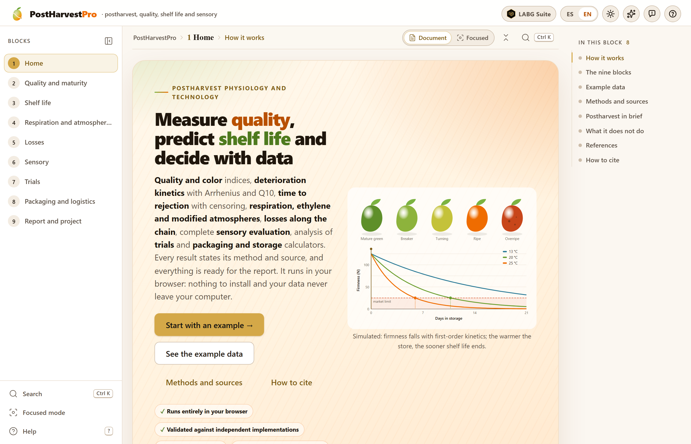
A good way to find out whether the program is for you is to see which questions it answers, and in which block.
| Question | Block |
|---|---|
| How do the firmness, soluble solids, acidity and color of each lot change over time? What is their SSC/TA? | 2 |
| How different are two colors, and what is the damage index or the marketable fruit of each lot? | 2 |
| With what reaction order is quality lost, and how many days does it take to reach the acceptable limit? | 3 |
| How long does the product last at 5 °C if I only measured it at 13, 20 and 25 °C? How much does each 10 °C speed up deterioration? | 3 |
| Which coating delays rejection most, counting the fruit still sound at the end? | 3 |
| How much does the product respire and how much heat does it release? Is it climacteric? | 4 |
| Which film and which thickness bring the package atmosphere into the recommended window? How long does it take to cool, and what equipment is needed? | 4 |
| At what stage of the chain are the most kilograms and the most money lost, and where does investment pay off best? | 5 |
| From what drop height is the fruit bruised? | 5 |
| Do the judges notice the difference, how many judges do I need, which product is liked most and which attribute penalizes it? | 6 |
| Do the treatments differ, at which times, and which one changes fastest? | 7 |
| How many boxes fit per pallet and per container? How much water does the product lose in the cold room? Can two products travel together? | 8 |
| How do I deliver the results, with their methods and some handling recommendations? | 9 |
Everything that follows rests on six ideas. If you keep them in mind, many of the mistakes made when analyzing postharvest data are no longer possible.
Every tool that analyzes a table has the same data input: Load example, Open file (CSV, TXT, XLSX, ODS), Paste a table or dropping the file on the box. Then the app proposes which column plays each role—time, group, attribute, consumer, product…—by its name, and you confirm or change the proposal. The direct-computation tools (the laboratory calculators, temperature, modified atmosphere, all of Block 8) are filled in by typing in their fields or in editable tables, where + Add row adds a line and × removes it.
| In | Format and where |
|---|---|
| Data tables | CSV, TSV or TXT separated by comma, semicolon or tab (with semicolon or tab the decimal comma is understood), and XLSX, XLSM or ODS workbooks; if the workbook has several sheets, a selector appears. Always in long format: one row per observed unit (fruit, jar, consumer per product) and one column per variable |
| Pasted cells | Copied from a spreadsheet, with the column names in the first row |
| Missing values | Empty cells, NA or — are taken as missing |
| Projects | A .json saved earlier by the app itself (Block 9) |
| Out | Format |
|---|---|
| Figures | Course of the attributes, color, kinetic curves, Arrhenius, Kaplan–Meier, respiration, O₂–CO₂ plane, Sankey, damage curves, psychometric curves, penalties, spider plots, maps, treatment profiles, pallet and psychrometric chart, among others: as SVG or as 300 ppi PNG, and in the suite’s figure studio |
| Tables | Every results table as CSV or XLSX, ready for a spreadsheet |
| Report | A single HTML file with cover, summary, one section per analysis with its figures, tables and interpretation, handling recommendations, methods, references and citation; it prints to PDF from the browser |
| Work plans | The serving plan of a tasting (CSV) with its ballots for printing, and the randomized field book of a trial (CSV or XLSX) |
| For other apps | The loss chain for EconomicsPro, the means of a descriptive profile for PCAPro and the field book for AgriDesign, from the same suite |
Only a modern browser, in a version from the last few years, on a computer, a tablet or a phone. There is nothing to install and no internet is needed; the whole program fits in one folder.
index.html. It is the simplest way and everything works the same: the computations and the ten example data sets are inside the program.Open PostHarvestPro.bat. It starts a minimal local server on port 9970 and opens the app at http://localhost:9970. You only need it to open the app from another computer or a tablet on the same network; the server.ps1 file explains how.Your preferences—the language, the light or dark theme and the last tab you opened in each block—are kept in the browser itself and remembered next time. The data are not: every time you open the app it starts empty. To resume a piece of work there is the .json project of Block 9, which saves the tables you loaded, the columns you chose, the edited tables and the settings, and recomputes everything when you open it. If you try to close the tab after having worked, the app warns you.
This manual opens from the app itself: the User’s manual link is at the foot of its home page (Block 1); with the interface in Spanish, the link leads to the Spanish edition.
All the applications of the suite share the same bar, the same navigation and the same figure tools, so what you learn here also serves you in the others.
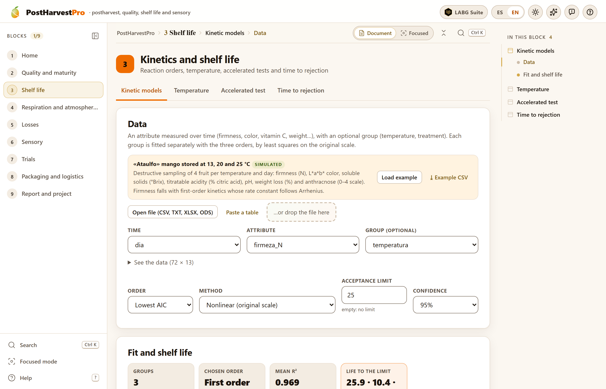
1 2 3 4 5 6 7 8 9 10 11 12?).Ctrl + K). A block, a section, a control or a figure, by its name.At the foot of each block two buttons lead to the previous and the next one. When you change a control and the results are recomputed further down, a floating button appears that takes you back to the control you touched, and another to go back to the top. Results are redone by themselves: when you change a setting, instantly; when you load new data—an example, a file, a pasted table or another column—the analysis runs inside the suite’s waiting screen, which only appears, with the message Analyzing the data…, if it takes more than a moment. Almost everything can also be done from the keyboard:
| Key | What it does |
|---|---|
Alt + ← · Alt + → | The previous or the next block; in focused mode, the previous or the next card |
Ctrl + K | Search for a block, a section, a control or a figure |
[ | Collapse or open the bar of the blocks |
← · → on the tabs | The previous or the next tab of the block |
? | Show the list of shortcuts |
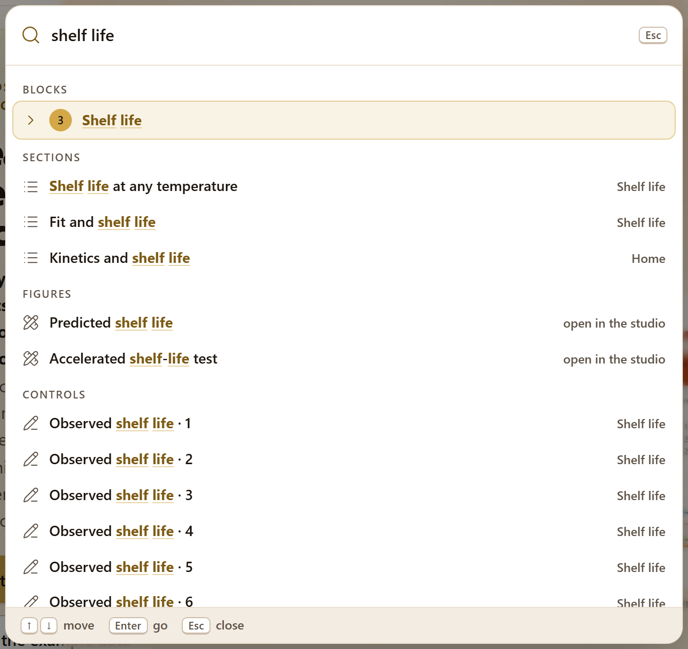
Ctrl + K) with “shelf life” typed: it finds Block 3, the cards that deal with shelf life, two figures—which open in the figure studio—and the fields of the accelerated test. Enter goes to the chosen result.Below each analysis there are three things besides the figures and the tables: some tiles with the numbers that matter (the chosen order, the life to the limit, the p-value), a reading in words of what they mean for the product, and the line Method and source: with the method and the citation. When something calls for care—an extrapolation, a straight line with a low R², a time that not all treatments have—a warning says so in the same place.
Every figure in the app can be opened in the figure studio, a window shared by the whole suite where you change the texts, the font size, the legend and the colors without touching the data, and export to PNG, SVG, PDF or TIFF at 300, 600 or 1200 ppi. Next to each figure, the ✎ button opens the figure editor, and two quick buttons download it as SVG or as a 170 mm PNG at 300 ppi. Downloads and the report always use the colors of the light theme, even if you are working in the dark one. Chapter 9 explains this in depth.
So that you can learn without data of your own, the app comes with ten simulated tables: they were generated with models and parameters of the order of those published for each crop, with a fixed seed, so they are always the same. They are not measurements: they are there to learn the app and to see that each analysis responds as expected. Each tool offers them with Load example and marks them with the SIMULATED tag, and the Example data section of the home page gathers them, with a button to open each tool with its example loaded and another to download the CSV.
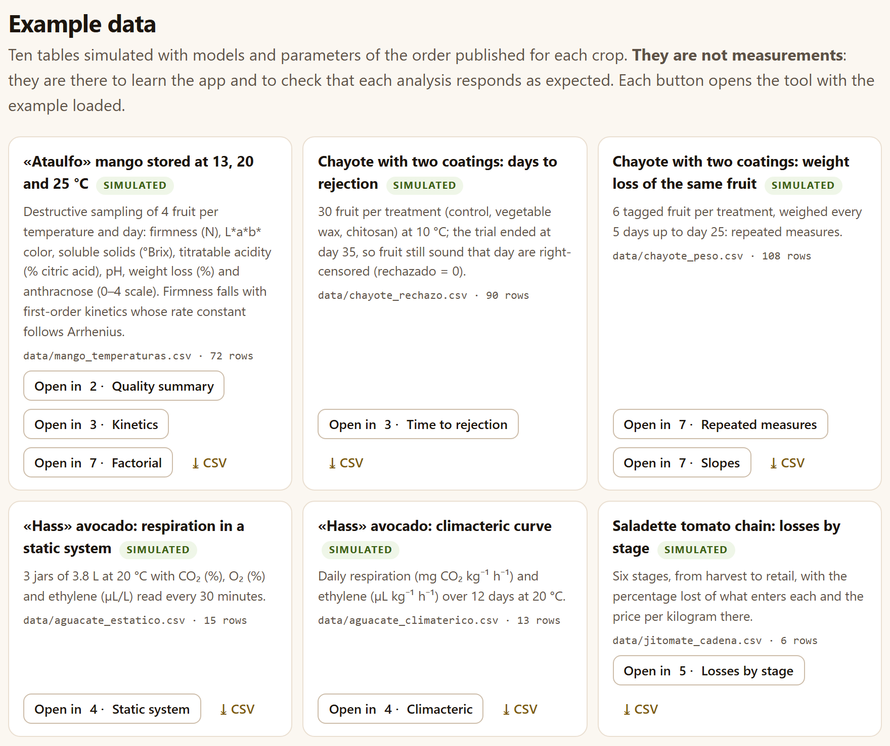
data/ they come from, their number of rows and the Open in … buttons that take you to each tool with the example loaded.| File | Content | Rows | Blocks |
|---|---|---|---|
mango_temperaturas.csv | “Ataulfo” mango at 13, 20 and 25 °C; 4 fruit per temperature and day: firmness, L*a*b*, soluble solids, acidity, pH, weight loss and anthracnose | 72 | 2 3 7 |
chayote_rechazo.csv | Chayote with control, vegetable wax and chitosan at 10 °C, 30 fruit each: days to rejection; the trial ended at day 35 | 90 | 3 |
chayote_peso.csv | The same treatments: 6 tagged fruit per treatment, weighed every 5 days up to day 25 | 108 | 7 |
aguacate_estatico.csv | “Hass” avocado in 3 jars of 3.8 L at 20 °C: CO₂, O₂ and ethylene every 30 minutes | 15 | 4 |
aguacate_climaterico.csv | Daily respiration and ethylene over 12 days at 20 °C | 13 | 4 |
jitomate_cadena.csv | Six stages of a saladette tomato chain, from harvest to retail: loss and price | 6 | 5 |
jitomate_caidas.csv | 10 fruit per drop height, from 10 to 60 cm: mass, energy, bruise area and volume, and whether it was bruised | 60 | 5 |
cafe_discriminativas.csv | Triangle, duo-trio and 2-AFC between two coffees: correct answers and judges | 3 | 6 |
cafe_consumidores.csv | 80 consumers × 4 coffees: 9-point liking, just-about-right for acidity, bitterness and body, and 10 CATA terms | 320 | 6 |
cafe_descriptivo.csv | 8 judges × 4 coffees × 2 sessions, 7 attributes from 0 to 10 | 64 | 6 |
The tools that do not read a table—the calculators, temperature, the accelerated test, flow-through, modified atmosphere, precooling, the simulation of improvements, the ballots, randomization and all of Block 8—open with example values already typed in their fields, so that the result shows from the start.
The firmness of the example mango falls from about 116 N to 32 N in 21 days at 13 °C, and from 122 N to less than 5 N in 12 days at 25 °C. In Block 3 the app chooses the first order at all three temperatures, with k = 0.0612, 0.1569 and 0.2508 per day, and computes that firmness reaches the 25 N limit at 25.9, 10.4 and 6.3 days. With those three constants, Arrhenius gives an activation energy of about 84 kJ/mol. It is the example drawn on the cover of this manual.
Every screenshot and every number in this manual comes from the simulated example data, with the default value of each control unless the text says what was changed. The text says “the example mango,” never as if it were a real lot.
The blocks follow the product from harvest to the consumer. You do not need to go through all of them, nor in order: each tab works with its own data, and whatever you compute leaves its section in the report. The How it works section of the home page sums up the route in seven steps.
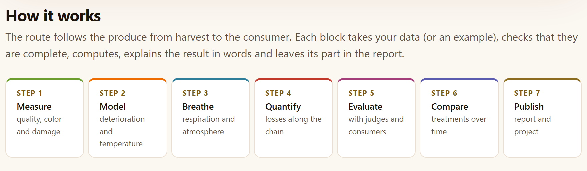
Take the k values to the temperature analysis → copies the constants of the kinetic models to the Temperature tab when the group is the temperature; the Simulate improvements tab works on the chain of Losses by stage; and Block 9 gathers the sections of the tools you used in the others. The check mark of a block in the bar lights up when it already has a result.
A computing program is worth what its numbers are worth. Every engine in PostHarvestPro was programmed from the published formula and compared, number by number, with an independent implementation: the R statistical environment (version 4.4.2) and its reference packages for nonlinear kinetics, survival analysis, sensory evaluation and trial analysis; published tables for color and psychrometrics; and hand computations written into the tests themselves for the calculators. Every comparison has its tolerance written down.
tests/run.html and in the console with node tests/run-node.js. The table below breaks them down by engine.| Area | Tests | Comparisons | Reference |
|---|---|---|---|
| Numerical core | 6 | 534 | Distributions, regression, eigenvalues, nonlinear fitting and p-value adjustment in R |
| Color | 6 | 1,115 | Conversions and ΔE from an R color package; the 22 published pairs of Sharma, Wu and Dalal (2005); the whiteness, yellowness and tomato indices by hand |
| References | 2 | 96 | That every source in the list of methods is in the list of references |
| Quality | 4 | 28 | Hand computations (acidity, moisture, McKinney, size grades) |
| Respiration and atmospheres | 3 | 19 | Hand computations (gas balances, steady state, cooling) |
| Losses and damage | 3 | 45 | Linear and logistic regression in R and Fieller interval |
| Logistics | 3 | 36 | ASHRAE (2017) saturation tables and psychrometric identities |
| Kinetics | 233 | 18,932 | R nonlinear least squares with two algorithms, and linear regression |
| Time to failure | 143 | 38,488 | Kaplan–Meier, log-rank and parametric models from two R survival packages |
| Sensory | 32 | 11,669 | R packages for sensory analysis, factor analysis and multiple comparisons |
| Trials | 8 | 242 | Type I and III analysis of variance, Tukey, Dunnett, repeated measures with Mauchly and comparison of slopes in R |
| Figures | 7 | 79 | Geometry and text written into the test: thousands on the axes, labels that do not overlap, distinct strokes and the percent sign of each language |
| Total | 450 | 71,283 | 0 failures |
The comparison also served to correct. It caught, among others, a cutoff in the studentized range that set probabilities to zero with five or more means, standard errors of the logistic regression computed with the weights of the next-to-last iteration and an optimizer that declared convergence next to the pole of a second-order curve; all three were corrected before version 1.0. The details, with the tolerances of each test, are in the tests/validacion/ folder, which is the only part of the program that names software packages: the app and the rest of this manual describe the methods and cite the articles.
Knowing where a tool ends is as useful as knowing what it does. The app’s home page says so in What it does not do, and the chapters repeat it where it matters:
| It does not | Why, and what to do |
|---|---|
| Replace measurement | The models summarize the data; extrapolating far from the temperatures, times or cultivars measured is your responsibility, and the app warns when it happens. |
| Bring trade standards | The tables of size grades, film permeabilities, atmosphere windows and compatibility are a guide only and can be edited: use those of your standard, your film and your cultivar. |
| Model non-isothermal kinetics | Predictions are at constant temperature; for a variable temperature history, k(T(t)) has to be integrated over time. |
| Simulate package dynamics | The modified atmosphere is computed at steady state, with an unperforated film and a perfect seal; not the time it takes to get there. |
| Read instruments | It does not connect to texture analyzers, colorimeters or chromatographs: it works with the tables they export. |
| Upload your data | There is no server, no accounts and no connection: what you save is a project file on your computer. |
Block 1 is the app’s home page. It computes nothing: on a single screen it says what PostHarvestPro does, sums up the route of a product from harvest to the consumer, presents the eight working blocks, opens the ten example data sets in the tool that matches each one, lists the methods with their source, explains in plain words the physiology behind the computations and gives the program’s citation. It is the place you come back to when starting something new or to remember where everything is.
When you open index.html, the app starts in Block 1. Unlike the other blocks, this one has no tabs and no data cards: it is a presentation page that you scroll from top to bottom, and the In this block list on the right leads to each of its sections.
At the top is the presentation panel. A small label states the subject of the app, Postharvest physiology and technology; below it comes the motto, Measure quality, predict shelf life and decide with data, and a paragraph that lists what it does, from quality indices and color to the packaging and storage calculators, and ends with two promises: every result states its method and its source, and the data never leave your computer.
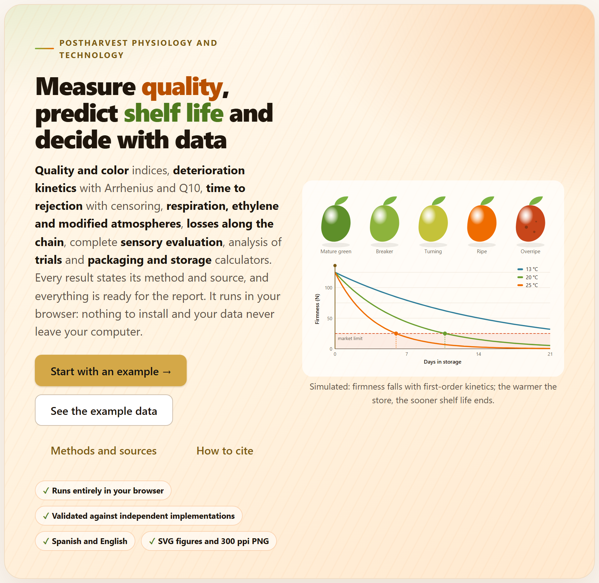
1 2 3 4 5 6The illustration has its caption: Simulated: firmness falls with first-order kinetics; the warmer the store, the sooner shelf life ends. It is a drawing, not a result: it does not change with the data you load. But it sums up the central idea of the program, the one Chapter 3 turns into numbers: the same fruit, with the same initial firmness, reaches the limit on very different days depending on the temperature at which it is stored. The curves are drawn from left to right when the home page opens; if you turn animations off with the sparkles button in the top bar, or if your system asks for reduced motion, they appear already drawn.
The three buttons below only scroll the page. The first one, on the other hand, does the same as the Open in 2 · Quality summary button on the mango card in Example data: it changes block and tab, loads the table and shows the results.
Loading an example or your own data changes nothing in Block 1. What does change is the bar on the left: the number of a block turns into a check mark when that block already has a result. The PostHarvestPro name in the top bar always brings you back here.
The first section below the presentation, How it works, sums up the route in seven numbered boxes (Figure I.5 of the introduction). Its subtitle explains it: The route follows the produce from harvest to the consumer. Each block takes your data (or an example), checks that they are complete, computes, explains the result in words and leaves its part in the report.
| Step | Name | What the app says | Where it is done |
|---|---|---|---|
| 1 | Measure | quality, color and damage | 2 Quality and maturity (Chapter 2) |
| 2 | Model | deterioration and temperature | 3 Kinetics and shelf life |
| 3 | Breathe | respiration and atmosphere | 4 Respiration, ethylene and atmospheres |
| 4 | Quantify | losses along the chain | 5 Losses and value chain |
| 5 | Evaluate | with judges and consumers | 6 Sensory evaluation |
| 6 | Compare | treatments over time | 7 Postharvest trials |
| 7 | Publish | report and project | 9 Report and project (Chapter 9) |
Block 8, Packaging and logistics, has no step of its own: its pallet, venting, storage and compatibility calculations go along with any of the steps, as Section I.8 says. The route is there so that you forget nothing, not to impose an order: each tab works with its own table, and you can go straight to Block 6 to analyze a tasting without having gone through the others.
The The nine blocks section has one card for each block from 2 to 9 (Block 1 is this very home page). Each one carries the block number, a drawing of its own made by code, a tag with the verb of what it does, the name of the block and the same line the app puts below its title. A click anywhere on the card opens the block. The subtitle of the section sums up the correspondence with this manual: A block is a module of the app and a chapter of the manual. Inside each one, tabs separate the tools.
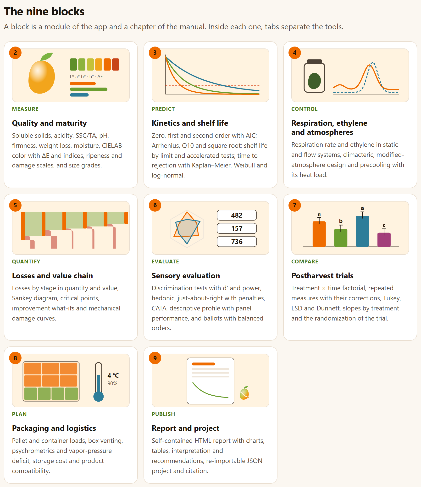
| Block | Tag | Name | Chapter |
|---|---|---|---|
| 2 | Measure | Quality and maturity | 2 |
| 3 | Predict | Kinetics and shelf life | 3 |
| 4 | Control | Respiration, ethylene and atmospheres | 4 |
| 5 | Quantify | Losses and value chain | 5 |
| 6 | Evaluate | Sensory evaluation | 6 |
| 7 | Compare | Postharvest trials | 7 |
| 8 | Plan | Packaging and logistics | 8 |
| 9 | Publish | Report and project | 9 |
At the foot of the home page, as at the foot of every block, a button leads to the next one: Next · 2 · Quality and maturity →. From the keyboard, Alt + → does the same.
The Example data section gathers the ten simulated tables that come with the app, one per card (Figure I.4 of the introduction). Its subtitle gives the warning: Ten tables simulated with models and parameters of the order published for each crop. They are not measurements: they are there to learn the app and to check that each analysis responds as expected. Each button opens the tool with the example loaded.
Each card has the name of the data set with the SIMULATED tag, a description, the file in data/ it comes from with its number of rows, one Open in … button for each tool that uses it and the ⤓ CSV button, which downloads the table so that you can see its layout or use it as a template for yours. The table in Section I.7 says what each data set contains; the one below, where each button leads.
| Card | Buttons |
|---|---|
| “Ataulfo” mango stored at 13, 20 and 25 °C · 72 rows | Open in 2 · Quality summary, Open in 3 · Kinetics, Open in 7 · Factorial |
| Chayote with two coatings: days to rejection · 90 | Open in 3 · Time to rejection |
| Chayote with two coatings: weight loss of the same fruit · 108 | Open in 7 · Repeated measures, Open in 7 · Slopes |
| “Hass” avocado: respiration in a static system · 15 | Open in 4 · Static system |
| “Hass” avocado: climacteric curve · 13 | Open in 4 · Climacteric |
| Saladette tomato chain: losses by stage · 6 | Open in 5 · Losses by stage |
| Tomato: drop test (mechanical damage) · 60 | Open in 5 · Mechanical damage |
| Coffee: discrimination tests · 3 | Open in 6 · Discrimination |
| Coffee: 80 consumers (liking, just-about-right and CATA) · 320 | Open in 6 · Hedonic, Open in 6 · JAR, Open in 6 · CATA |
| Coffee: quantitative descriptive profile · 64 | Open in 6 · Descriptive profile |
The mango also appears, without a button on the home page, in the Color, Ripeness and damage scales and Size grades tabs of Block 2, whose Load example button opens it right there. Each Open in … button does two things: it opens the tab and presses its Load example for you, which replaces whatever table that tool had.
Opening an example replaces the table of the tool that receives it. If you had already loaded your own data into it, save the project first (Block 9›Project, Section 9.6) so that you can go back to them.
The Methods and sources section lists the program’s 28 methods, each on a card with its name, the block where it is used and the works that define it, abbreviated by author and year. The subtitle sums up how they were programmed: Every method is programmed from its published formula and compared with an independent implementation; the tolerances and the results of that comparison are in the tests folder.
| Block | Method | Sources |
|---|---|---|
| 5 | Mechanical damage: impact curves, threshold, susceptibility and logistic regression with Fieller interval | Bajema and Hyde 1998; Mohsenin 1986; Finney 1971 |
| 6 | Discrimination tests with Thurstonian d′, power and sample size | Ennis 1993; Ennis and Jesionka 2011; Brockhoff and Christensen 2010; Bi 2006; Clopper and Pearson 1934 |
| Hedonic scale, ANOVA and Tukey; Friedman ranking | Peryam and Pilgrim 1957; Friedman 1937; Lawless and Heymann 2010 | |
| Just-about-right (JAR) with penalty analysis | Xiong and Meullenet 2006; Lawless and Heymann 2010 | |
| CATA: Cochran’s Q, McNemar and correspondence analysis | Meyners et al. 2013; Cochran 1950; McNemar 1947; Greenacre 2007 | |
| Descriptive profile: judge × product ANOVA, panel performance and PCA | Stone et al. 1974; Næs et al. 2010; Jolliffe 2002 | |
| Williams presentation orders and three-digit codes | Williams 1949; MacFie et al. 1989 | |
| 7 | Treatment × time factorial ANOVA (types I and III) and mean comparison | Steel et al. 1997; Kramer 1956; Dunnett 1955; Copenhaver and Holland 1988; Piepho 2004 |
| Repeated measures: split plot in time, Greenhouse–Geisser, Huynh–Feldt, Mauchly | Steel et al. 1997; Greenhouse and Geisser 1959; Huynh and Feldt 1976; Lecoutre 1991; Mauchly 1940; Satterthwaite 1946 | |
| Comparison of slopes (analysis of covariance) | Snedecor and Cochran 1989; Holm 1979 | |
| 8 | Pallet and container loading patterns | Steudel 1979; Smith and De Cani 1980 |
| Psychrometrics, vapor-pressure deficit and transpiration | ASHRAE 2017; Wagner and Pruss 2002; Wagner et al. 2011; Sastry et al. 1978 | |
| Box venting and storage compatibility of products | Thompson et al. 2008; Kader 2002; Gross et al. 2016; McGregor 1989 |
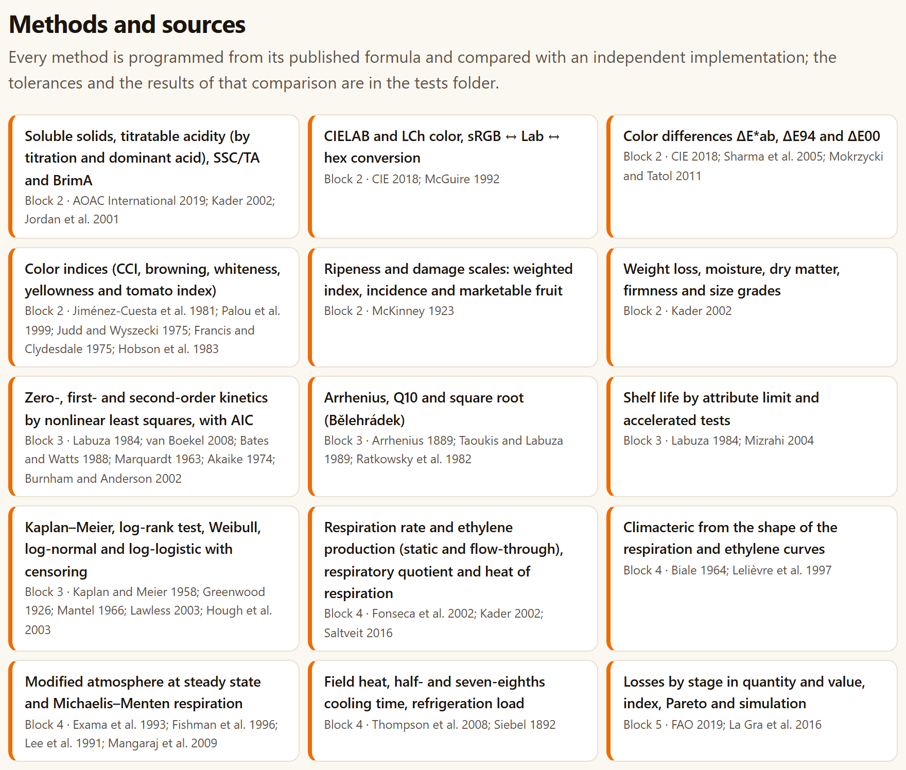
It is the same list, with the same abbreviations, as the Method and source: line of every result and the Methods and references section of the report, which includes only the methods of the blocks you used (Section 9.3). Appendix F gathers the 81 complete works, grouped by topic. If you are going to publish, cite the method you used as well as the program: the card says which one.
The Postharvest in brief section (The ideas behind the computations, in plain words.) has nine collapsible panels, each with the block where its idea applies. When the home page opens only the first one is expanded; a click on the title opens or closes any of them.
| Panel | Block | The idea, in one line |
|---|---|---|
| Physiological and eating maturity | 2 | Soluble solids rise and acidity falls, which is why SSC/TA sums up taste; the hue angle h° moves from green (above 100°) to yellow (around 90°); a ΔE below 1 is not noticed, and between 2 and 3.5 anyone notices it |
| Climacteric and non-climacteric | 4 | Climacteric fruit have a peak of respiration and of autocatalytic ethylene and ripen off the plant; respiration releases about 10.7 J per milligram of CO₂ |
| Deterioration kinetics | 3 | Zero, first or second order; the order is chosen by fitting on the original scale and comparing AIC, not by the R² of a straight line |
| Temperature rules: Arrhenius and Q10 | 3 | ln k = ln A − Eₐ/(RT); Q10 is not constant; accelerated tests assume that the mechanism does not change with temperature |
| Shelf life and time to rejection | 3 | By an attribute limit or by the rejection of each fruit; fruit still sound at the end are censored, not discarded |
| Modified atmospheres | 4 | The steady state matches what the produce respires with what permeates the film; β = PCO₂/PO₂ fixes the line of possible atmospheres |
| Water: transpiration and vapor-pressure deficit | 8 | The fruit loses water in proportion to the vapor-pressure deficit; 3 to 10% of weight lost is already enough to make it shrivel |
| Losses along the chain | 5 | Losses are computed on what enters each stage; in kilograms the first stages weigh most, in money the last ones |
| Measuring with people | 6 | Discrimination, affective and descriptive tests; Thurstonian d′ measures the size of a difference; Williams orders avoid order bias |
Each chapter of this manual comes back to these ideas in more detail in its “Theory in brief” boxes, next to the tool that uses them.
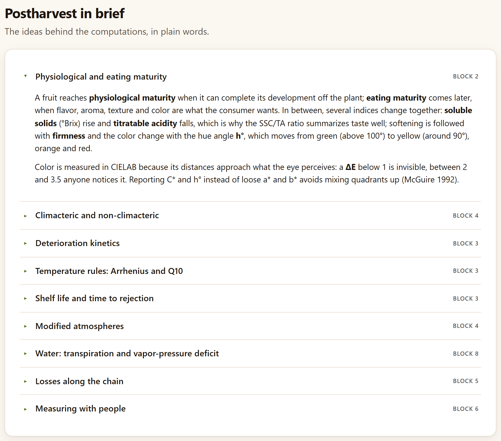
Four boxes say plainly what cannot be expected of the program. They are the same limits that Section I.10 of the introduction tabulates, which adds two more (it does not simulate package dynamics or read instruments):
The last two sections of the home page are the bibliography and the citation. In References, the See the 81 references panel opens the complete list of the works cited by the methods, in alphabetical order; it is the same list that Appendix F gathers, there grouped by topic.
How to cite begins with If PostHarvestPro helps your work, please cite it as: and gives the program’s citation in two forms, each with its button:
barreraguzman2026postharvestpro, the English title, version 1.0.0, the year, the license GPL-3.0-or-later and the address; it is copied with Copy BibTeX.When you copy, a brief notice confirms Copied. The citation does not yet carry a digital object identifier (DOI): it will be added when the program is published with one. The same citation is at the end of Block 9 (Section 9.7) and at the end of every report. The home page closes with a footnote holding the User’s manual link, which opens this manual in another tab (with the interface in Spanish it reads Manual de usuario (en español) and opens the Spanish edition), and a line saying that PostHarvestPro 1.0.0 is free software (GPL-3.0) and part of the LABG Suite.
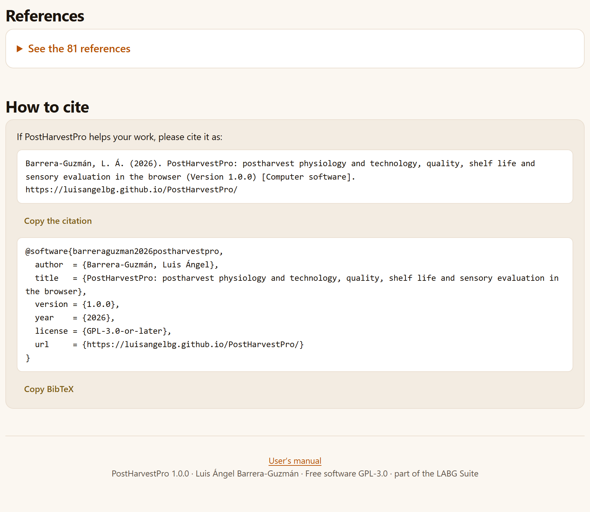
| If it is the first time you open the app | then press Start with an example → and go through Chapter 2 with the mango; then open the same mango in Block 3 (Open in 3 · Kinetics). |
| If you have measurements of a lot over time | then start in Block 2 to summarize them and go on to Block 3 for their shelf life and to Block 7 to compare the treatments. |
| If your question is about respiration, losses, tasting or packaging | then go straight to its block (4, 5, 6 or 8): each one works with its own table or with its typed fields. |
| If you do not know what columns your table should have | then download the ⤓ CSV of the most similar example and use it as a template. |
| If you are going to publish the results | then cite the program from here or from Block 9, and also cite the method of each result. |
They are guides for finding your way, not a mandatory order.
An Open in … button takes me to the tab, but I see no results. The results are below the data input; scroll down or use the In this block list. The copy buttons do nothing. Some browsers do not allow the clipboard on pages opened as a local file; select the citation text and copy it by hand, or open the app with Open PostHarvestPro.bat (Section I.5). The illustration is not animated. Animations are turned off (sparkles button in the top bar) or your system asks for reduced motion; it does not affect any computation. I lost what I had loaded when I opened an example. The example replaces the tool’s table; if you saved the project, open it again in Block 9.
Measuring is the first step of any postharvest work: how much the fruit has softened, how much sugar and how much acidity it has, what color it is, how much damage it shows and how large it is. Block 2 summarizes those measurements by lot and by time, converts and compares colors in CIELAB, solves the everyday laboratory calculations and turns damage scales and size grades into indices and percentages. Its results are read on their own or passed on to Block 3, which models their rate, and to Block 7, which decides whether the differences are real.
The block title sums it up in one line: Quality indices, CIELAB color, laboratory calculators, scales and size grades. Its five tabs are Quality summary, Color, Acidity, moisture and firmness, Ripeness and damage scales and Size grades. Three of them read a table and the other two are filled in by typing; all of them are recomputed as soon as you change a value. The thread of this chapter is the example mango: 72 simulated fruit, four per temperature and day, stored at 13, 20 and 25 °C.
All the tools of the app that analyze a table—from the quality summary to the trials of Block 7—receive the data in the same box. It is explained here once; the other chapters only say which roles each tool asks for.
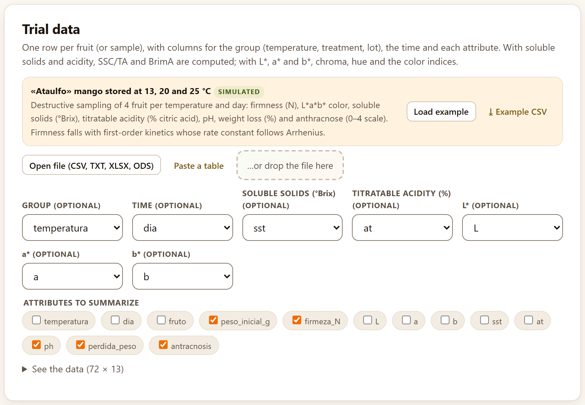
1 2 3 4 5 6 7 8 9When a table is loaded, the analysis runs by itself, and runs again every time you change a column. If a required role is missing, the app does not compute and says so below the buttons: Choose the column for: …, with the name of the role. Other messages in the same place are The table has no rows with data. and Could not analyze: …, followed by the cause.
One row per observed unit—a fruit, a jar, a consumer with a product—and one column per variable. The example mango has one row per fruit with its temperatura, its dia and its attributes; not one column per day. Empty cells, NA or — are taken as missing.
Below the data, every tool shows its results with the same pieces, which the rest of the manual only names:
| Piece | What it is and what you do with it |
|---|---|
| Tiles | The numbers that matter, in boxes with their label and a line of detail. A tile with a colored border calls attention: amber for a warning or the worst case, green for the best |
| Reading | A cream box with a green border that says in words what the numbers mean for the product |
| Figures | Each in its own box with a title. In its corner, Download SVG (arrow), Download PNG at 300 ppi (picture) and, if the figure has one, Figure data (CSV) (grid). When you hover over it, ✎, the figure editor, and the figure studio button also appear; in the studio the same downloads appear with their names: SVG, PNG at 300 ppi and Data (CSV) (Chapter 9, Section 9.5) |
| Tables | With the ⤓ CSV and ⤓ XLSX buttons below them, to take them to a spreadsheet |
| Method and source: | The last line: the method that was applied and the works that define it, with author and year (Appendix F gives the full reference) |
Every analysis you run also leaves its section in the report of Block 9 (Chapter 9), with its figures, its table and its reading.
The first tab summarizes any set of quality attributes by group and by time: the mean with its dispersion, the course of one variable and the change between the first and the last sampling. It is the table that goes into any trial report, before modeling or comparing.
The Trial data card asks for one row per fruit or per sample. All its roles are optional: Group (temperature, treatment, lot), Time, Soluble solids (°Brix), Titratable acidity (%), L*, a*, b* and Attributes to summarize. With soluble solids and acidity, the app computes SSC/TA and BrimA for each fruit; with L*, a* and b*, chroma, hue, the citrus color index and the browning index (Section 2.3). Those computed variables are added to the attributes you tick.
With the mango, the app proposes temperatura as group, dia as time, sst, at, L, a and b in their roles and, as attributes, the numeric columns left free except those that identify the unit (fruto): peso_inicial_g, firmeza_N, ph, perdida_peso and antracnosis.
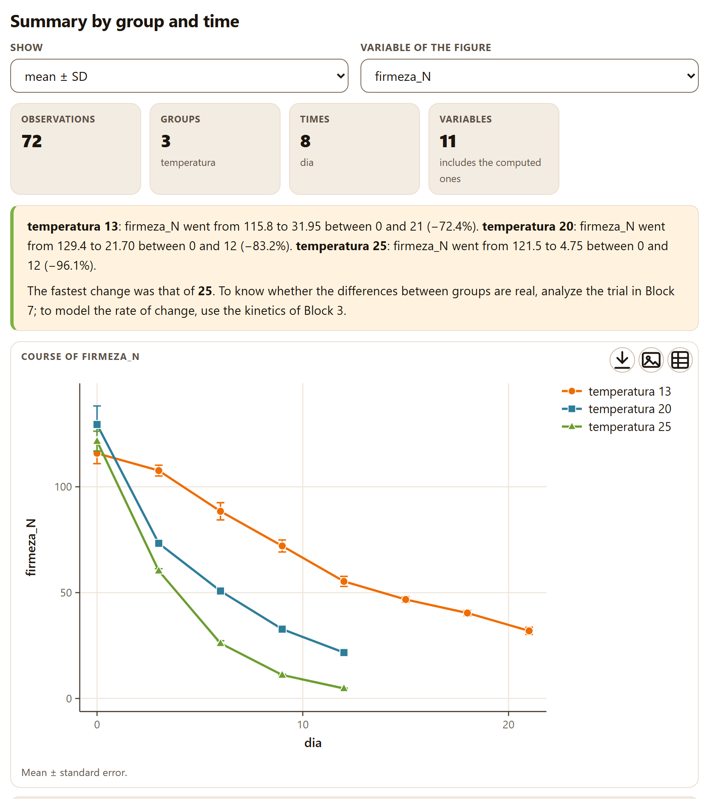
Above the results there are two controls. Show chooses what goes with the mean in the table: mean ± SD (the default), mean ± SE or mean and 95% CI, which writes the interval in square brackets. Variable of the figure chooses which variable is drawn; it opens with firmeza_N if there is one.
temperatura); Times 8 (dia: the distinct values of the whole table); Variables 11, with the note includes the computed ones: the five ticked plus SSC/TA, BrimA, chroma, hue and the two color indices.The Method and source: line reads Titratable acidity by titration (AOAC 942.15) · BrimA: Jordan et al. 2001 · Color: CIE 2018; McGuire 1992 · CCI: Jiménez-Cuesta et al. 1981 · BI: Palou et al. 1999: the last two are the sources of the color indices the summary computes.
As it ripens, the fruit accumulates sugars and consumes acids: soluble solids (SSC, in °Brix) rise and titratable acidity (TA, in % of the dominant acid) falls. Their ratio sums up taste, but it exaggerates when acidity is very low. BrimA corrects it by subtracting acidity with more weight, because the tongue perceives it more strongly than sugar (Jordan et al. 2001):
In the example mango at 13 °C, SSC/TA goes from 7.39 to 54.12 in 21 days: the fruit has become much sweeter to the palate.
The Color tab has three cards. The first, Color converter, translates a color between its three notations and computes the indices used in the postharvest literature.
Its hint says: Type the color in any of its forms: L*a*b* (D65 illuminant, 2° observer), RGB from 0 to 255 or its hexadecimal code. The others update and the swatch appears. The fields are L*, a*, b*, R, G, B, Hexadecimal and Pick, which opens the system color picker. It opens with L* 62, a* 8 and b* 48, the yellow of a ripe mango.
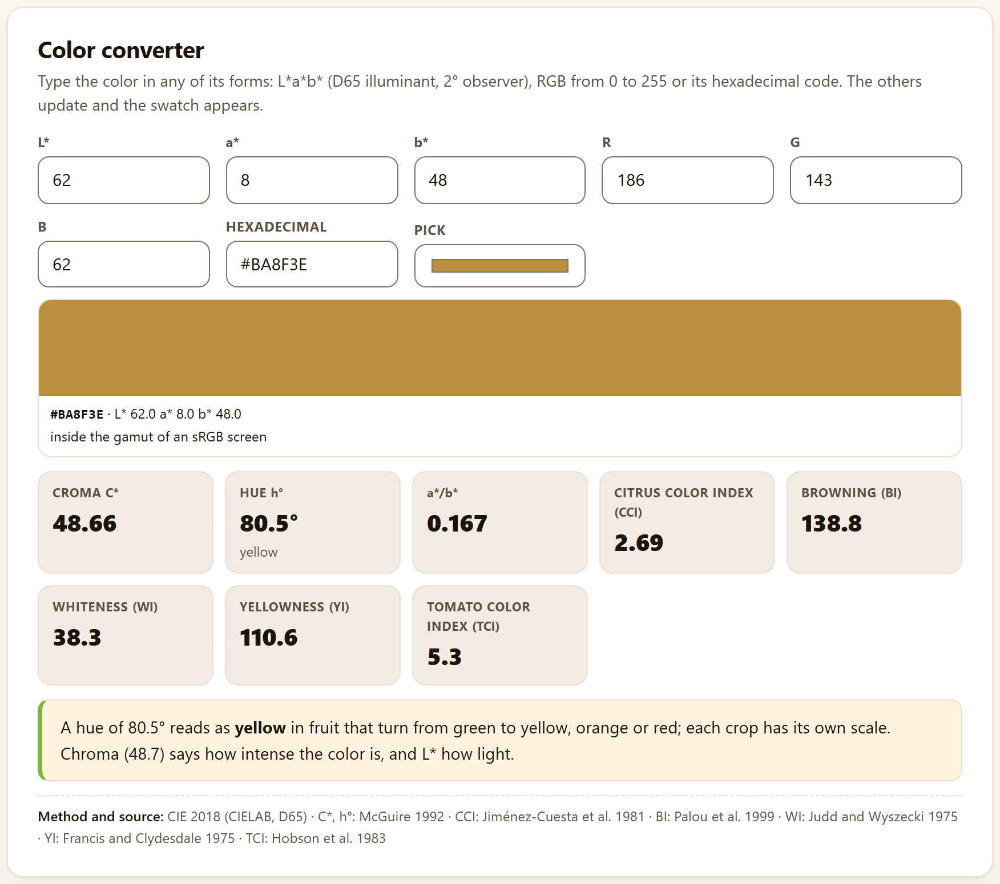
#BA8F3E (R 186, G 143, B 62), inside the gamut of an sRGB screen.Below the fields, the swatch of the color with its code and its coordinates, and a note: inside the gamut of an sRGB screen or, if the color cannot be displayed, outside the sRGB gamut: shown is the nearest with the same L* and h°. The eight tiles with the starting values are:
| Tile | Value | Formula and source |
|---|---|---|
| Chroma C* | 48.66 | C* = √(a*² + b*²): the intensity of the color (McGuire 1992) |
| Hue h° | 80.5° | h° = atan2(b*, a*), from 0 to 360°; with its reading, yellow |
| a*/b* | 0.167 | From negative (green) to positive (red); widely used in tomato and mango |
| Citrus color index (CCI) | 2.69 | CCI = 1000·a* ∕ (L*·b*): negative green, near 0 at color break, positive orange (Jiménez-Cuesta et al. 1981) |
| Browning (BI) | 138.8 | BI = 100(x − 0.31) ∕ 0.17, with x = (a* + 1.75L*) ∕ (5.645L* + a* − 3.012b*) (Palou et al. 1999) |
| Whiteness (WI) | 38.3 | WI = 100 − √((100 − L*)² + a*² + b*²), the form used for fresh-cut products (Judd and Wyszecki 1975) |
| Yellowness (YI) | 110.6 | YI = 142.86·b* ∕ L* (Francis and Clydesdale 1975) |
| Tomato color index (TCI) | 5.3 | TCI = 2000·a* ∕ (L*·C*) (Hobson et al. 1983) |
The reading puts the hue into words: A hue of 80.5° reads as yellow in fruit that turn from green to yellow, orange or red; each crop has its own scale. The words come from fixed cuts of the angle: green from 105°, green-yellow from 85 to 105°, yellow from 70 to 85°, orange from 50 to 70°, red-orange from 25 to 50° and red below. They are a general guide, not the scale of your crop. The reading adds the chroma (Chroma (48.7) says how intense the color is, and L* how light.), and the method line gives the source of each tile: CIE 2018 (CIELAB, D65) · C*, h°: McGuire 1992 · CCI: Jiménez-Cuesta et al. 1981 · BI: Palou et al. 1999 · WI: Judd and Wyszecki 1975 · YI: Francis and Clydesdale 1975 · TCI: Hobson et al. 1983.
The same change in a* means different things depending on the sign of b*, and averaging angles or ratios of colors from different quadrants misleads. Chroma and hue separate what the eye distinguishes—how intense and what color—and can be compared between fruit (McGuire 1992). The converter works with the D65 illuminant and the 2° observer; if your colorimeter uses another illuminant, its L*a*b* are not directly comparable.
The second card measures how distinguishable two colors are. Its hint says Color 1 is the reference (for instance, the initial one or that of a control). The fields are L* 1, a* 1, b* 1, L* 2, a* 2 and b* 2; they open with the green of a freshly harvested mango (64, −11, 36) and a ripe yellow (67, 9, 52). The Use the converter color as color 2 button copies the color from the previous card.
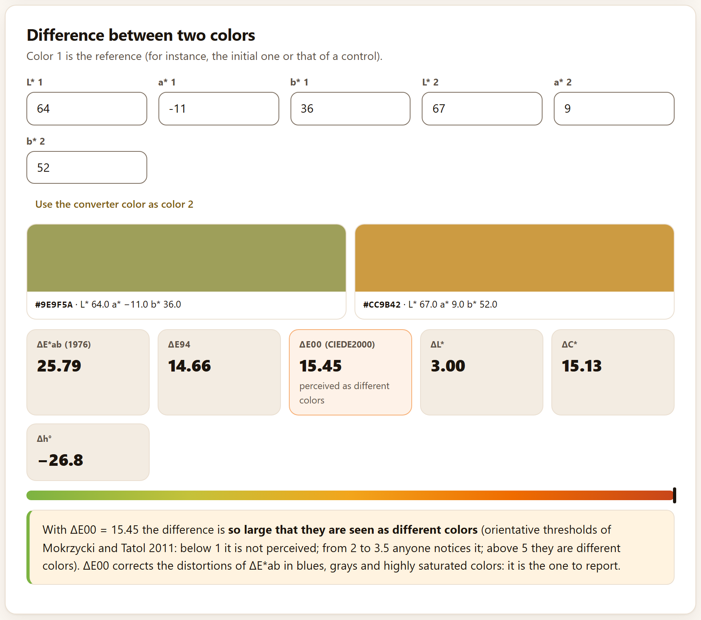
The tiles give the three difference formulas and their components: ΔE*ab (1976) 25.79, ΔE94 14.66 and ΔE00 (CIEDE2000) 15.45, the latter with its reading (perceived as different colors) and highlighted when it reaches 3.5; and ΔL* 3.00, ΔC* 15.13 and Δh° −26.8°, the difference in hue angle (color 2 is 26.8° less green). The reading puts it in one sentence—With ΔE00 = 15.45 the difference is so large that they are perceived as different colors—, gives the guide thresholds and recommends reporting ΔE00. In that sentence, the two highest grades read clear and so large that they are perceived as different colors; in the tile, as in the table below.
| ΔE00 | What the app says |
|---|---|
| below 1 | not perceptible |
| from 1 to 2 | perceptible only to a trained observer |
| from 2 to 3.5 | perceptible to any observer |
| from 3.5 to 5 | clear difference |
| 5 or more | perceived as different colors |
Guide thresholds of Mokrzycki and Tatol (2011). ΔE00 corrects the distortions of ΔE*ab in blues, grays and highly saturated colors: in the example, ΔE*ab overstates the difference by more than 10 units.
The third card reads a table with L*, a* and b* per fruit: L*, a* and b* columns, with group and time: the mean color of each group at each time, its ΔE00 from the group’s initial color and the course of hue. It asks for L*, a* and b* (required) and Group and Time (optional). Its Load example loads the mango.
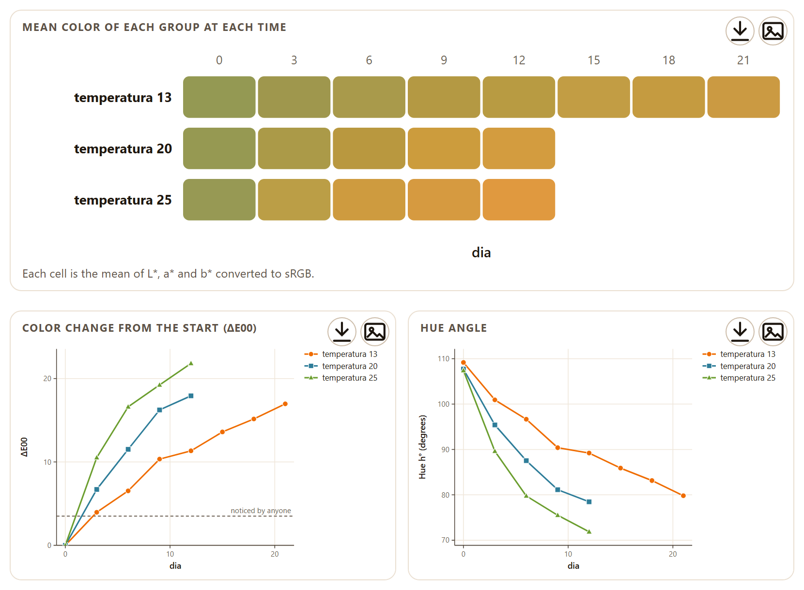
The app averages L*, a* and b* of the fruit of each group and time, converts that mean into a screen color and computes its chroma, its hue and its ΔE00 with respect to the first time of the same group. The three figures are Mean color of each group at each time (Each cell is the mean of L*, a* and b* converted to sRGB.), Color change from the start (ΔE00) and Hue angle; below them comes the table with L*, a*, b*, C*, h°, ΔE00 and a Swatch of the color with its code.
At 13 °C the mean hue of the mango falls from 109.2° on day 0 to 79.8° on day 21—from green to yellow—and its ΔE00 reaches 16.96. At 25 °C the change is faster and larger: the hue reaches 71.9° and ΔE00 21.81 on day 12. At all three temperatures the difference from the initial color is already perceptible to anyone (ΔE00 > 3.5) from day 3: 3.96 at 13 °C, 6.70 at 20 °C and 10.52 at 25 °C.
The method line cites CIE 2018 (CIELAB, D65) · ΔE00: Sharma et al. 2005 · C*, h°: McGuire 1992.
The Acidity, moisture and firmness tab brings together four laboratory calculators that read no tables: you type the readings and the result appears at once. They open with example values typed in.
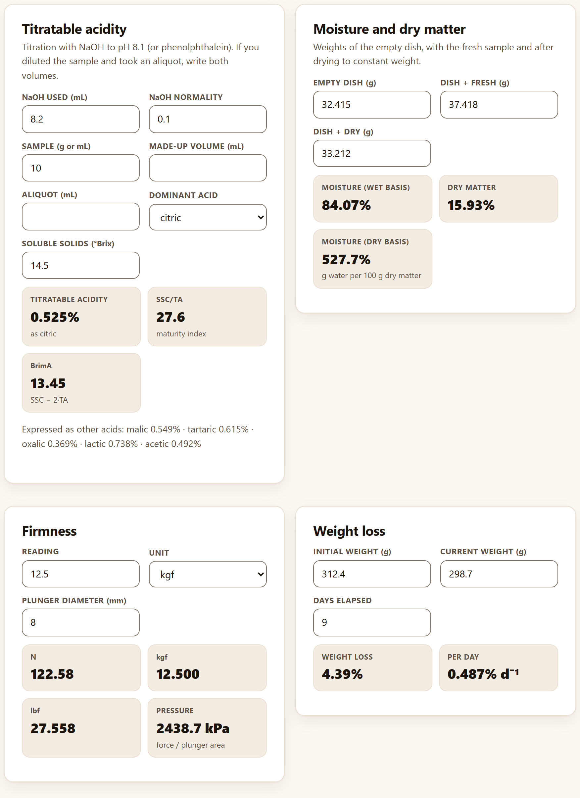
For a titration with NaOH to pH 8.1 or to the phenolphthalein end point. The fields are NaOH used (mL) 8.2, NaOH normality 0.1, Sample (g or mL) 10, Made-up volume (mL) and Aliquot (mL)—empty: only if you diluted the sample and took part of it—, Dominant acid (citric, malic, tartaric, oxalic, lactic or acetic) and Soluble solids (°Brix) 14.5.
The milliequivalent is that of the chosen acid: 0.064 for citric (citrus, mango, papaya, tomato, strawberry, pineapple), 0.067 for malic (apple, pear, peach, plum, banana), 0.075 for tartaric (grape, tamarind), 0.045 for oxalic, 0.090 for lactic and 0.060 for acetic. With the starting values, acidity is 0.525% as citric, SSC/TA 27.6 (maturity index) and BrimA 13.45. Below, the same acidity Expressed as other acids: malic 0.549%, tartaric 0.615%, oxalic 0.369%, lactic 0.738% and acetic 0.492%.
With the three weighings of the dish (Weights of the empty dish, with the fresh sample and after drying to constant weight.): Empty dish (g) 32.415, Dish + fresh (g) 37.418 and Dish + dry (g) 33.212. They give Moisture (wet basis) 84.07%, Dry matter 15.93% and Moisture (dry basis) 527.7%, that is, grams of water per 100 g of dry matter.
Converts a penetrometer reading: Reading 12.5, Unit (N, kgf, lbf or gf; it opens at kgf) and Plunger diameter (mm) 8. It gives the force in N (122.58), kgf (12.500) and lbf (27.558), and the Pressure on the plunger area, 2438.7 kPa. Pressure lets you compare readings taken with different plungers; force does not.
Initial weight (g) 312.4, Current weight (g) 298.7 and Days elapsed 9 give a Weight loss of 4.39%, computed on the initial weight, and 0.487% per day. When the loss reaches 5%, the tile turns amber and warns that it is near the limit at which many fruit shrivel.
They are one-off laboratory calculations: their results do not pass on to Block 9. If you want the weight loss or the acidity of a whole trial in the report, put them as columns of your table and analyze them in Quality summary or in Block 7.
Many attributes are rated by eye on a scale of classes: the ripeness stage from the skin color, the severity of a spot, the progress of a rot. The Ripeness and damage scales tab turns those ratings into a weighted index, the incidence and the percentage of marketable fruit of each lot.
The The scale card has an editable table with the Value and the Description of each class (Each class with its value (0 = sound, or the first grade) and its description. Edit it or pick a template.). It opens with the Damage 0–4 template—Sound, Slight (< 5% of the surface), Moderate (5–15%), Severe (15–30%) and Very severe (> 30%)—; the other two are Ripeness 1–5 (from Mature green to Overripe) and Decay 0–3 (from No decay to Rotten fruit). + Add row and × add or remove classes. Below, Market tolerance (highest class accepted) chooses the highest class that still sells; it opens at the second class, here class 1.
The The data card accepts two inputs. The first is a table with Class of each fruit (required) and Group and Time (optional); each combination of group and time is a lot. The second, in the …or type counts by lot panel, are counts typed by hand, one lot per line—for instance Lot A: 50, 20, 15, 10, 5—, which are read with Use the counts. If any rating matches no class of the scale, a warning says how many were left out of the count.
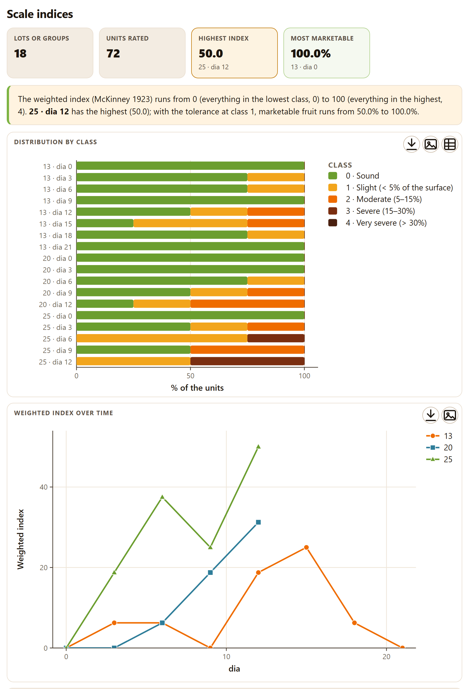
With the mango, the app takes antracnosis as the class, temperatura as group and dia as time: 18 lots of four fruit. The tiles read Lots or groups 18, Units rated 72, Highest index 50.0 (25 · dia 12, in amber) and Most marketable 100.0% (the first lot to reach it, 13 · dia 0, in green). The reading starts with the range of the index for the chosen scale—The weighted index (McKinney 1923) runs from 0 (everything in the lowest class, 0) to 100 (everything in the highest, 4).—and adds that, with the tolerance at class 1, marketable fruit runs from 50.0% to 100.0%. The figures are Distribution by class, one stacked bar per lot, and, when there are group and time, Weighted index over time, one line per group. The table gives for each lot its N, the percentage in each class, the Index, the Mean grade, the Incidence and the Marketable percentage.
The weighted index weights each fruit by its class and expresses it as a percentage of the maximum possible damage (McKinney 1923):
The mean grade is Σ(class · n) ∕ N; the incidence, the percentage of units above the lowest class; and the marketable fruit, the percentage at the tolerance class or below. In the 25 °C lot on day 12, two fruit in class 1 and two in class 3 give 100 · (2·1 + 2·3) ∕ (4 · 4) = 50.0, an incidence of 100% and 50% marketable.
The formula divides by the maximum class, so the index only falls to 0 on scales that start at 0, like those for damage and decay. With Ripeness 1–5, a whole lot in class 1 gives 20, and the reading says so: runs from 20 (everything in the lowest class, 1) to 100 (everything in the highest, 5). Compare indices only between lots rated with the same scale.
The method line is Weighted index: McKinney 1923. The analysis is redone with the same data—the table or the typed counts—as soon as you choose another template, edit a class or change the tolerance.
If you apply Ripeness 1–5 to the anthracnose of the mango, rated from 0 to 4, two warnings appear: 46 grades match no class of the scale and are not counted. and 6 lots have no grade within the classes of the scale and are left out: 13 · dia 0, 13 · dia 9, 13 · dia 21, 20 · dia 0, 20 · dia 3, 25 · dia 0. The result is left with 12 lots and 26 units, the highest index is 40.0 (25 · dia 9) and marketable fruit runs from 0.0% to 100.0%. Choose or type the scale you rated with. Two other warnings in the same place: The class column has no number at all. and, if you delete every class, The scale needs at least one class with its value.
The last tab sorts the fruit by size: how many fall in each grade, which one is the most frequent and how many are left outside the classes.
The The classes card has an editable table with Grade, Minimum and Maximum: Each grade with its minimum (included) and maximum (excluded, except in the last class), in the unit of your data. The templates are indicative: use those of your standard. There are three templates:
| Template | Classes |
|---|---|
| By weight (g) | Small 0–200, Medium 200–280, Large 280–360 and Extra large 360–600 g (the starting one) |
| Fruit per 4 kg box | Count 8 to Count 20: count k corresponds to fruit of about 4000 ∕ k g, and the limits are the midpoints between neighboring counts (Count 14: 268–310 g) |
| By diameter (mm) | < 57 mm, 57–67 mm, 67–77 mm, 77–87 mm and > 87 mm |
The The fruit card asks for Weight or diameter of each fruit and, optionally, a Group (lot, variety, origin). With the mango, the app takes peso_inicial_g.
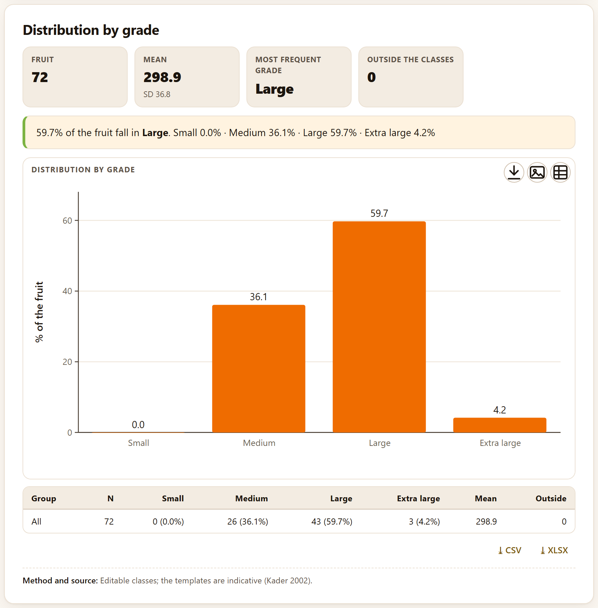
The tiles read Fruit 72, Mean 298.9 g (SD 36.8), Most frequent grade Large and Outside the classes 0. The reading distributes the fruit: Large 59.7%, Medium 36.1%, Extra large 4.2% and Small 0.0%. With the Fruit per 4 kg box template, the most frequent grade is Count 14 (44.4%), followed by Count 12 (36.1%). If you choose a group, the figure shows one series of bars per group and the table one row per group. The method line recalls that the classes are editable and the templates a guide only (Kader 2002).
If you sort weights with the By diameter (mm) template, all 72 mangoes fall outside the classes: the Outside the classes tile reads 72 and asks you to check the limits, the most-frequent-grade tile is left at —, there is no figure and, instead of the reading, a warning explains the mismatch: No fruit falls inside the classes: the data run from 230 to 369 and the classes from 0 to 150. Check the limits and the unit (weight or diameter). If only some fruit fall outside, the reading ends with their percentage (· outside the classes …).
| If you have attributes measured in several lots and times | then Quality summary; afterward, Block 3 for their rate and Block 7 to compare. |
| If you have L*a*b* readings per fruit | then The color of your data, and report C*, h° and ΔE00, not a* and b* on their own. |
| If ΔE00 between two treatments is less than 2 | then the consumer will hardly notice the color difference, even if it is statistically significant. |
| If you rated by eye with classes | then Ripeness and damage scales, with the tolerance of your market. |
| If weight loss exceeds 5% | then check the humidity of the store and the package (Block 8). |
The thresholds are a guide only; the standard of your product and your market prevails.
The summary has one row per fruit instead of per time. The time column is at — none — or the group points to the fruit column; check the roles. Identification columns appear among the variables. Untick their box in Attributes to summarize. The colors look odd. Check that L*, a* and b* are not swapped (L* runs from 0 to 100) and that your colorimeter uses D65 and 2°. Acidity comes out ten times larger. You diluted the sample and did not type the made-up volume and the aliquot, or the other way around. Lots are missing from the scale indices. Their ratings do not match the class values (for instance, 1.5 on an integer scale, or a 1-to-5 scale with ratings from 0 to 4); the warnings in The data say how many ratings were discarded and which lots were left out. All the fruit fall outside the size grades. The classes are in another unit or overlap; the warning gives the range of your data and that of the classes: correct the minimums and maximums.
Knowing that a lot softens is not enough: you need to know how fast, how many days it takes to reach the limit the market accepts, and how much that rate changes with temperature. This block fits the kinetics of deterioration, takes it to Arrhenius to predict shelf life at the storage temperature, extrapolates an accelerated test and, when what you record is the day each fruit is rejected, estimates the time to rejection while counting the fruit that were still sound at the end.
The block is called Kinetics and shelf life (in the bar, Shelf life) and introduces itself as “Reaction orders, temperature, accelerated tests and time to rejection.” It has four tabs: Kinetic models, Temperature, Accelerated test and Time to rejection. As everywhere in the program, there is no compute button: as soon as there are data, every change to a control redoes the calculations that depend on it.
The four tabs form a path. In Kinetic models you fit an attribute (firmness, color, vitamin C) against time at each temperature; the button Take the k values to the temperature analysis → passes the constants to Temperature, which fits them to Arrhenius and predicts the life at any temperature. Accelerated test does the same when what you have are not constants but shelf lives observed at high temperatures. Time to rejection is a different approach: it does not model an attribute, but the day on which each fruit stops being acceptable. The chapter uses two simulated examples: the example mango (the firmness of 72 fruit at 13, 20 and 25 °C) and the example chayote with two coatings (the days to rejection of 90 fruit).
The Data card asks for an attribute measured over time and, if you wish, a group. Its text sums it up: “Each group is fitted separately with the three orders, by least squares on the original scale.”
The column roles are Time (in days, hours or weeks: the app does not convert units, and shelf life comes out in the unit you use), Attribute and Group (optional), which can be the temperature or the treatment. With the example mango (Load example in the strip, or Home›Example data) the app picks dia, firmeza_N and temperatura by itself. The table has thirteen columns (See the data (72 × 13)): you can swap the attribute for color (L, a, b), soluble solids (sst) or weight loss without loading anything again.
Below are four controls:
| Control | Default | What it decides |
|---|---|---|
| Order | Lowest AIC | Which order is reported in each group; you can also set Zero order, First order or Second order for all of them |
| Method | Nonlinear (original scale) | How C₀ and k are estimated. Linearized fits the classic straight line (C, ln C or 1/C against t) and is recommended only to compare with older work |
| Acceptance limit | 25 (empty: no limit) | The value of the attribute beyond which the product is no longer acceptable; the time to the limit is computed from it |
| Confidence | 95% | The level of every interval (90, 95 or 99%) |
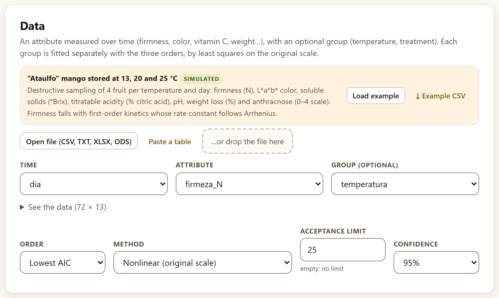
dia, the attribute firmeza_N and the group temperatura. Below, the four controls with their default values; the limit of 25 N is the one the app comes with.Almost all quality deterioration is described by one of three forms, which differ in how the rate depends on the value that remains. The app fits all three in each group:
| Order | Model | Half-life | Time to the limit | When it appears |
|---|---|---|---|---|
| Zero order | C = C₀ − k·t | C₀ / (2k) | (C₀ − L) / k | Changes at a constant rate: nonenzymatic browning, some water losses |
| First order | C = C₀·e^(−k·t) | ln 2 / k | ln(C₀/L) / k | The rate is proportional to what remains: firmness, vitamins, chlorophyll |
| Second order | 1/C = 1/C₀ + k·t | 1 / (C₀·k) | (1/L − 1/C₀) / k | Very fast drops at first that then slow down |
A positive k means the attribute goes down; a negative one, that it goes up (the formation of a pigment, for example), and the reading warns about it with “Negative k: the attribute increases with time (formation).”
The habit of comparing orders by the R² of linearized lines (C, ln C and 1/C against time) has a flaw: each transformation changes the scale of the error, so the three R² are not measured with the same yardstick, and the logarithm or the reciprocal give enormous weight to the small values at the end of the trial. The app fits the three models by nonlinear least squares on the attribute as it was measured (Bates and Watts 1988), so all three share the same residuals and can be compared with the Akaike information criterion (AIC; Burnham and Anderson 2002). AIC rewards a good fit and penalizes parameters; here the three models have two parameters (C₀ and k), so the one with the smallest residual sum of squares wins. The difference from the best, ΔAIC, is turned into the Akaike weight, the relative probability that this order is the best of the three.
The table The three orders (Figure 3.2, bottom) shows for each group and each order its equation, k, the residual sum of squares (RSS), the AIC, the ΔAIC, the Akaike weight and, only as a classic reference, the Linearized R²; the row of the chosen order is shaded green. With the mango, first order wins at all three temperatures: at 13 °C with a weight of 0.971 (ΔAIC 7.02 over zero order), at 20 °C with 0.762 (second order is 2.33 behind and keeps a weight of 0.238) and at 25 °C with 1.000.
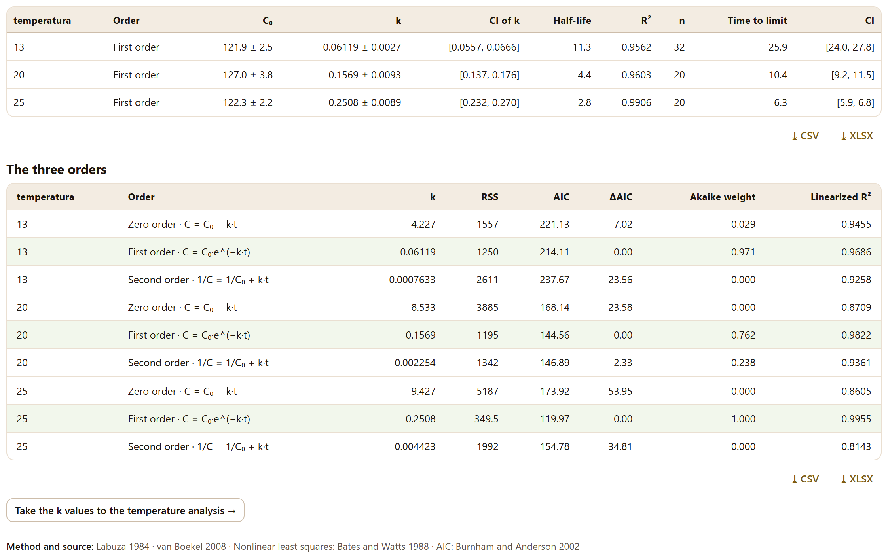
Look at the Linearized R² column at 13 °C: 0.9455 for zero order and 0.9686 for first order. The difference looks small, but AIC gives first order a weight of 0.971. And at 20 °C the linearized second order has an R² (0.9361) larger than that of zero order (0.8709), although neither comes close to first order. If you choose Linearized in Method, the Mean R² tile flags it with on the linearized scale and the lives change: 25.1, 10.9 and 6.0 days instead of 25.9, 10.4 and 6.3.
The results card is called Fit and shelf life. Its tiles say how many groups were fitted, which order was chosen and how (by AIC or set by you), the Mean R² and, if there is a limit, the Life to the limit of each group.
With the example mango: 3 groups of temperatura, First order by AIC, mean R² 0.969 and life to the limit 25.9 · 10.4 · 6.3 days (limit 25). The reading in words gives, for each group, the order, k with its interval, the half-life and the day on which the attribute reaches the limit, also with its interval:
| Temperature | C₀ (N) | k (d⁻¹) | 95% CI of k | Half-life (d) | Days to 25 N | 95% CI |
|---|---|---|---|---|---|---|
| 13 °C | 121.9 | 0.06119 | [0.0557, 0.0666] | 11.3 | 25.9 | [24.0, 27.8] |
| 20 °C | 127.0 | 0.1569 | [0.137, 0.176] | 4.4 | 10.4 | [9.2, 11.5] |
| 25 °C | 122.3 | 0.2508 | [0.232, 0.270] | 2.8 | 6.3 | [5.9, 6.8] |
The intervals of k are written with three significant figures of their larger bound (which is why the one at 13 °C has four decimals and those at 20 and 25 °C, three), and the half-life and the time to the limit with one decimal, the same in the reading and in the table.
The reading closes with two checks: whether AIC chose the same order in every group (“AIC picks the same order in every group.”) and how many times the fastest constant is the slowest (here, 4.1). If the groups do not agree on the order, the reading recommends setting a single one: the k values of different orders do not have the same units and cannot be compared or taken to Arrhenius.
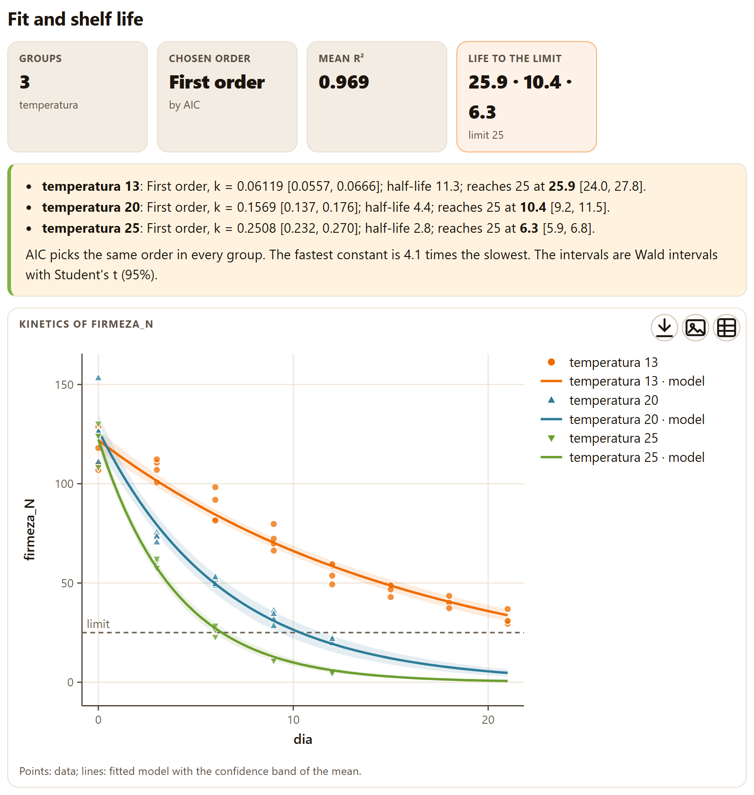
The intervals of C₀ and k are Wald intervals with Student’s t and the degrees of freedom of the fit (n − 2), as the reading says: “The intervals are Wald intervals with Student’s t (95%).” The interval of the time to the limit is obtained by the delta method: the time is a function of C₀ and k (Table 3.2), and its variance combines those of the two parameters and their covariance.
The time at 13 °C (25.9 days) falls after the last day measured (21): it is a short extrapolation within the same model. If the attribute never reaches the limit with the chosen model—a zero order with negative k and a lower limit, for example—the reading says does not reach the limit and the tile shows a dash.
Below the reading appear, in smaller type and preceded by the group, the notes of the fit when there are any: for example, “Second order: could not be fitted and is left out of the comparison.” if one of the orders does not converge in that group. With the example mango the three orders are fitted at all three temperatures and no note appears.
Below the figure, the fit table (Figure 3.2, top) repeats these numbers with C₀ and k ± their standard error, the R² on the original scale and the number of fruit in each group (32 at 13 °C, because there it was measured up to day 21; 20 at 20 and 25 °C). Both tables are downloaded with ⤓ CSV and ⤓ XLSX, and the figure with the buttons of its frame (Chapter 2, Section 2.1). The methods are those of Labuza (1984) and van Boekel (2008), with the nonlinear least squares of Bates and Watts (1988) and the AIC of Burnham and Anderson (2002).
With Order on Zero order, the tile says set by you, the mean R² drops to 0.892 and the lives to the limit become 21.1, 10.3 and 8.1 days. At 13 °C the straight line underestimates the life by almost five days, because it does not curve as firmness drops; at 25 °C it overestimates it by almost two. AIC (Table 3.2) already said that zero order was worse at all three temperatures: setting an order is useful to compare with a published study, not to improve the prediction.
The Temperature tab fits the dependence of k on temperature with three models and, with it, predicts shelf life at any temperature. Its input card, “Rate constants at several temperatures,” is an editable table: “Type k (with its standard error, if you have it, to weight) or bring them from the kinetic models.”
The table has the columns Temperature (°C), k and SE of k (optional); + Add row adds one and the × of each row removes it. At least two different temperatures with positive k are needed (three for the square root). Below, the checkbox Weight by the standard error of k (unchecked) and the Reference temperature (°C) (20), at which k is reported.
The tab already opens with the constants of the example mango, fitted as Kinetic models fits them with its default values (order by AIC, nonlinear, 95%): 0.06119 ± 0.0027 at 13 °C, 0.1569 ± 0.0093 at 20 °C and 0.2508 ± 0.0089 at 25 °C, with first order and C₀ = 123.736 (the mean of the three C₀) in the shelf-life section. So opening it directly or reaching it with the button gives the same Eₐ.
The button Take the k values to the temperature analysis →, at the foot of Fit and shelf life, does the same with your data: it first sets the chosen order, the mean of the C₀ and the limit in the shelf-life section, then copies the k and the standard error of each group to the table and opens the tab, so that everything, shelf life included, is computed with the new values. It only works if the group is the temperature written as a number; otherwise it warns “For Arrhenius the group must be the temperature (numbers).” The table shows k with four significant figures and its standard error with two, like the fit table, but it stores and uses the full value until you type another one in the cell.
Arrhenius (1889) assumes that ln k falls in a straight line against the inverse of absolute temperature, with a slope that gives the activation energy Eₐ: the larger Eₐ, the more deterioration speeds up as temperature rises. The app fits the line by least squares on ln k, weighted by (k/SE)² if you tick the box. Q10 is the factor by which k is multiplied with 10 °C more; it is computed between pairs of measured temperatures and, from Eₐ, at any temperature (Taoukis and Labuza 1989): with the same Eₐ, Q10 is larger in the cold than in the heat. The square-root model of Ratkowsky et al. (1982) assumes that √k grows linearly with temperature and crosses zero at a minimum biological temperature, Tmin, below which the process would stop.
With the mango k values, the card Arrhenius, Q10 and square root gives:
| Tile | Value | What it is |
|---|---|---|
| Activation energy | 84.2 kJ/mol | With its interval, [−5.5, 173.8] |
| k (20.0 °C) | 0.1465 | k at the reference temperature, [0.078, 0.275] |
| Q10 (20–30 °C) | 3.12 | Q10 between 20 and 30 °C computed from Eₐ |
| R² Arrhenius | 0.9930 | Of the line of ln k against 1/T |
| Tmin (square root) | 1.3 °C | With R² 1.0000; interval [0.3, 2.2] in the reading |
The reading puts it into words: “With Eₐ = 84.2 kJ/mol, every 10 °C more multiplies the deterioration rate by 3.54 near 5 °C and by 3.01 near 25 °C: Q10 is not constant.” Between the measured temperatures, Q10 is 3.84 from 13 to 20 °C and 2.56 from 20 to 25 °C. Below, the table compares each measured k with the one Arrhenius predicts (0.06119 versus 0.06293 at 13 °C, for example) and gives Q10 at each temperature (3.30, 3.12 and 3.01).
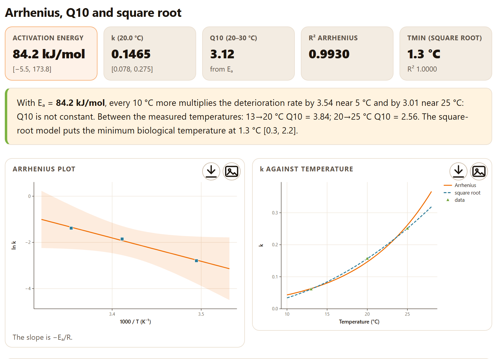
The interval of Eₐ, from −5.5 to 173.8 kJ/mol, looks absurd, but it is honest: with three temperatures the Arrhenius line has a single degree of freedom and Student’s t is 12.7. The point estimate is reasonable (and agrees with the Q10 of 3 to 4 typical of firmness); its precision is not. If you are going to predict far from the measured temperatures, measure at least four, or weight by the standard error of k, which uses the precision of each fit. The R² of 1.0000 of the square root is no virtue either: with three points and two parameters, almost any smooth curve passes through them.
The lower part of the same card, Shelf life at any temperature, combines the Arrhenius line with the order, the initial value and the limit to predict how many days the product lasts at the temperature you choose.
The controls are Order (Zero, One or Two; by default, One), Initial value C₀ (123.736, that of the mango), Limit (25), Storage temperature (°C) (10) and Interval: Of the mean (the expected life of a typical lot) or Prediction (that of a new lot, which adds the scatter of the points around the line and is wider). If the limit is larger than C₀, the app understands that the attribute rises.
The interval of the life is obtained by passing that of k(T) through the formula for θ; the uncertainty of C₀ is not propagated. The tiles give the Shelf life at that temperature with its interval and the corresponding k; if the temperature is outside the measured ones, a third, amber tile appears: Caution · extrapolation · outside 13–25 °C.
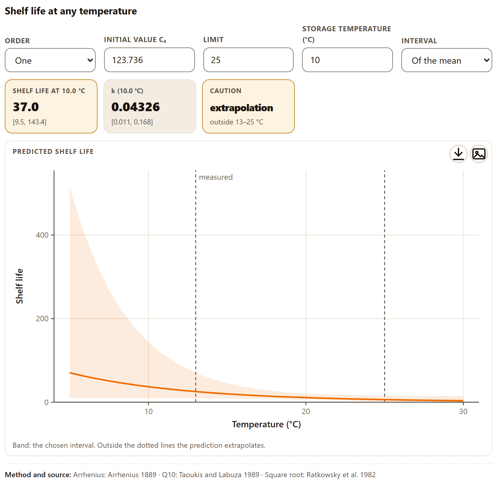
| Storage temperature | Life (days) | 95% CI | Note |
|---|---|---|---|
| 5 °C | 70.3 | [9.6, 513.6] | extrapolation |
| 10 °C | 37.0 | [9.5, 143.4] | extrapolation; prediction interval, [6.5, 209.0] |
| 13 °C | 25.4 | [9.2, 70.3] | the direct fit gave 25.9 |
| 15 °C | 19.9 | [8.7, 45.4] | |
| 20 °C | 10.9 | [5.8, 20.5] | the direct fit gave 10.4 |
At 13 and 20 °C the prediction does not exactly repeat the life of the direct fit (25.4 versus 25.9, 10.9 versus 10.4), because it uses the k smoothed by Arrhenius and a single C₀, the mean of the three. That is the right way to read it: the line summarizes the three temperatures at once.
An accelerated test stores the product at temperatures higher than its storage temperature so that it deteriorates in days instead of weeks, and extrapolates the life to the real temperature. The Accelerated test tab makes that extrapolation from the observed lives, without going through the constants.
The card Shelf lives at high temperatures is an editable table with Temperature (°C) and Observed shelf life (in days, weeks or whatever unit you use: The example is illustrative.). It comes with six tests, two at each temperature: 4.8 and 5.3 days at 30 °C, 3.1 and 2.8 at 35 °C, 2.1 and 1.9 at 40 °C. At least three lives at two different temperatures are needed. The controls are Model—Arrhenius (ln θ against 1/T) or Q10 (ln θ against T)—and Storage temperature (°C) (20).
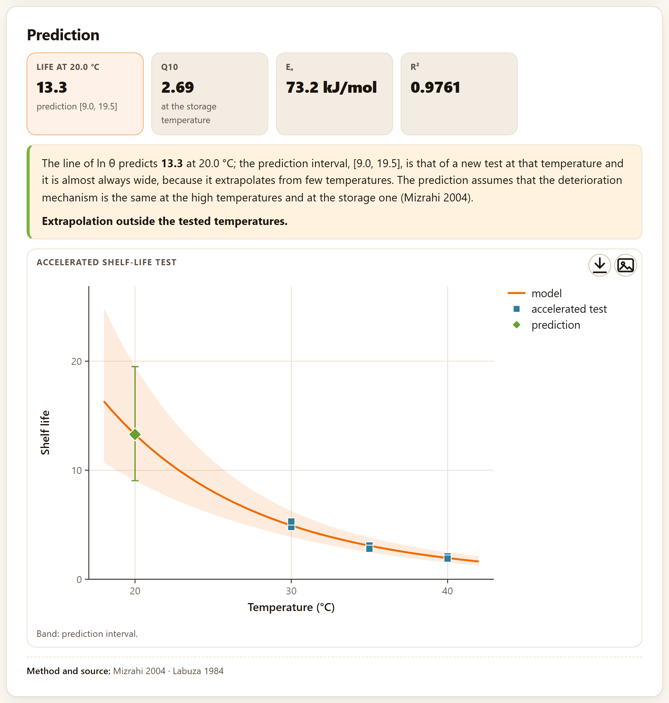
The Prediction card gives the life at the storage temperature (the geometric mean the line predicts) with its prediction interval, which is the one that corresponds to a new test at that temperature and is almost always wide. With the model Q10 (ln θ against T) the life at 20 °C becomes 12.4 days [8.5, 18.3], with Q10 2.53 (constant in the model), Eₐ 68.4 kJ/mol and R² 0.9744: the two models are similar between 30 and 40 °C and diverge when extrapolating. The reading warns in bold “Extrapolation outside the tested temperatures.” when the storage temperature lies outside those of the test, which in an accelerated test is always.
The extrapolation holds only if the deterioration mechanism is the same at the high temperatures and at the storage temperature (Mizrahi 2004; Labuza 1984). In a fresh fruit this is rarely true: at 35 or 40 °C the fruit may stop ripening normally, suffer heat injury or rot from other fungi, and at the storage temperature chilling injury may appear, which no hot test anticipates. Accelerated tests are safer in processed products (dried products, juices, pulps) than in whole fruit.
In some trials what is measured is not a continuous attribute but the day on which each fruit stops being acceptable: a rot appears, it shrivels, the panel rejects it. The Time to rejection tab analyzes them as survival data: “One row per fruit: the time until it was rejected (or until the last day it was seen sound) and whether it was rejected (1) or still acceptable at the end (0, censored).”
The roles are Time to rejection or censoring, Rejected (1) or censored (0) and Treatment (optional). The example is the chayote with two coatings: 30 fruit per treatment (control, vegetable wax and chitosan, which the data name Testigo, Cera vegetal and Quitosano) at 10 °C, in a trial that ended at 35 days; the app picks dias, rechazado and tratamiento by itself. The controls are Kaplan–Meier interval (Log, Log-log or Plain), Parametric model (The one with the lowest AIC, Weibull, Log-normal, Log-logistic or Exponential) and Tolerated rejection (%) (10, from 1 to 99).
A fruit that was still sound on day 35 has no “day of rejection,” but it does provide information: we know it lasted at least 35 days. It is right-censored. Discarding it, or giving it 35 as if it had been rejected that day, shortens the estimated life. The Kaplan–Meier estimator (Kaplan and Meier 1958) solves this: on each day with rejections it multiplies the surviving fraction, 1 − dᵢ/nᵢ, where nᵢ is the number of fruit still under observation; the censored ones count in nᵢ until they leave. The intervals use Greenwood’s variance (1926) on the chosen scale; the log one, which is the default, never goes outside 0 to 1.
The card Survival curves opens with five tiles: Fruit 90, Rejected 75 (83.3%), Censored 15 (still acceptable at the end), Log-rank χ² = 22.48, p < 0.001 (df 2), and Best model Weibull by AIC. The log-rank test (Mantel 1966) compares the complete curves of the treatments; if they differ, the reading names the one that keeps the fruit acceptable longest: Quitosano.
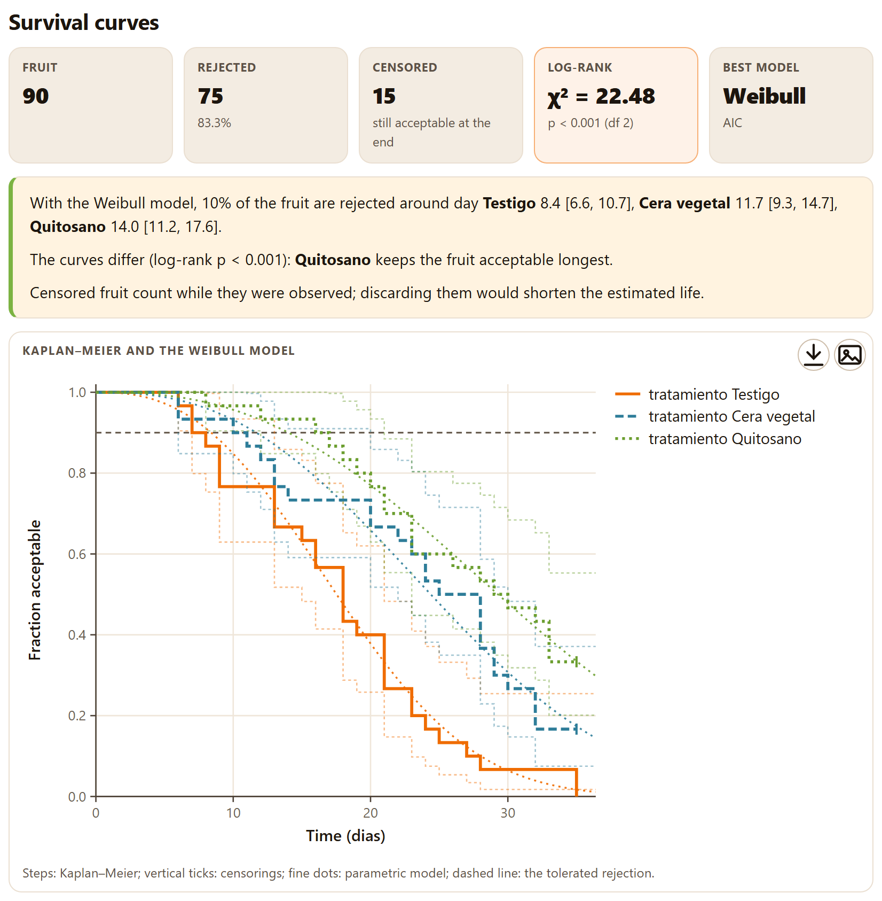
Below, the table by treatment (Figure 3.8, top) gives the Median (KM)—the day on which the curve crosses 50%—with its interval, the Restricted mean (the area under the curve up to the last day observed, ± its error), the Time to 10% and the Median (model), these two from the parametric model:
| Treatment | n | Rejections | Median (KM) | CI | Restricted mean | Time to 10% |
|---|---|---|---|---|---|---|
| Testigo | 30 | 30 | 18.0 | [15.0, 21.0] | 17.9 ± 1.4 | 8.4 [6.6, 10.7] |
| Cera vegetal | 30 | 25 | 26.5 | [22.0, 30.0] | 23.8 ± 1.7 | 11.7 [9.3, 14.7] |
| Quitosano | 30 | 20 | 29.5 | [23.0, ∞] | 27.2 ± 1.5 | 14.0 [11.2, 17.6] |
The interval of the chitosan median has no upper bound (∞): its upper confidence curve never falls below 50% before the trial ends. This is not an error, but the way of saying that the trial did not last long enough to bound that median. The restricted mean is useful precisely in those cases, because it always exists; but it depends on the day the trial was cut off and is compared only between treatments observed for the same time.
Kaplan–Meier describes without assuming a shape; a parametric model assumes a distribution of the time to rejection and, in exchange, gives the time of any percentage of rejection, even outside the observed days, and a single measure of the effect of each treatment.
The app fits four failure-time models with censoring (Lawless 2003), all with one parameter per treatment: Weibull (the hazard of rejection rises or falls with time), log-normal and log-logistic (the hazard rises and then falls) and exponential (constant hazard, the special case of Weibull with shape 1). The table Parametric models compares them by their log-likelihood and their AIC:
| Model | Log-likelihood | Parameters | AIC | ΔAIC | Weight |
|---|---|---|---|---|---|
| Weibull | −286.96 | 4 | 581.92 | 0.00 | 0.916 |
| Log-normal | −290.03 | 4 | 588.07 | 6.15 | 0.042 |
| Log-logistic | −290.06 | 4 | 588.12 | 6.20 | 0.041 |
| Exponential | −319.44 | 3 | 644.87 | 62.96 | 0.000 |
With the chosen model, the reading gives the day on which the tolerated percentage is rejected: “With the Weibull model, 10% of the fruit are rejected around day Testigo 8.4 [6.6, 10.7], Cera vegetal 11.7 [9.3, 14.7], Quitosano 14.0 [11.2, 17.6].” With Tolerated rejection (%) at 50, these are the medians of the model: 17.5, 24.4 and 29.3 days, very close to those of Kaplan–Meier (18.0, 26.5 and 29.5). If you set another model, the reading names it (“With the log-logistic model, …”) and the numbers change little with the log-normal (8.3, 11.6 and 14.9 days) or the log-logistic (8.7, 12.4 and 15.1), and a lot with the exponential (1.9, 3.0 and 4.3): a constant hazard predicts rejections from the first day, which did not happen in the chayote (the first was around day 6).
As in Kinetic models, the reading ends with the notes of the calculations, if any, preceded by the treatment or the model they refer to: those of Kaplan–Meier in each treatment, those of the chosen model and, for each model in the comparison whose maximum likelihood did not converge, “maximum likelihood did not converge; its AIC is approximate.” With the example chayote the four models converge and there are no notes. If no fruit was rejected (all censored), there is nothing to fit: the card keeps only the tiles Fruit, Rejected and Censored and the reading says “No parametric model could be fitted: rejected fruit (status 1) are needed.”
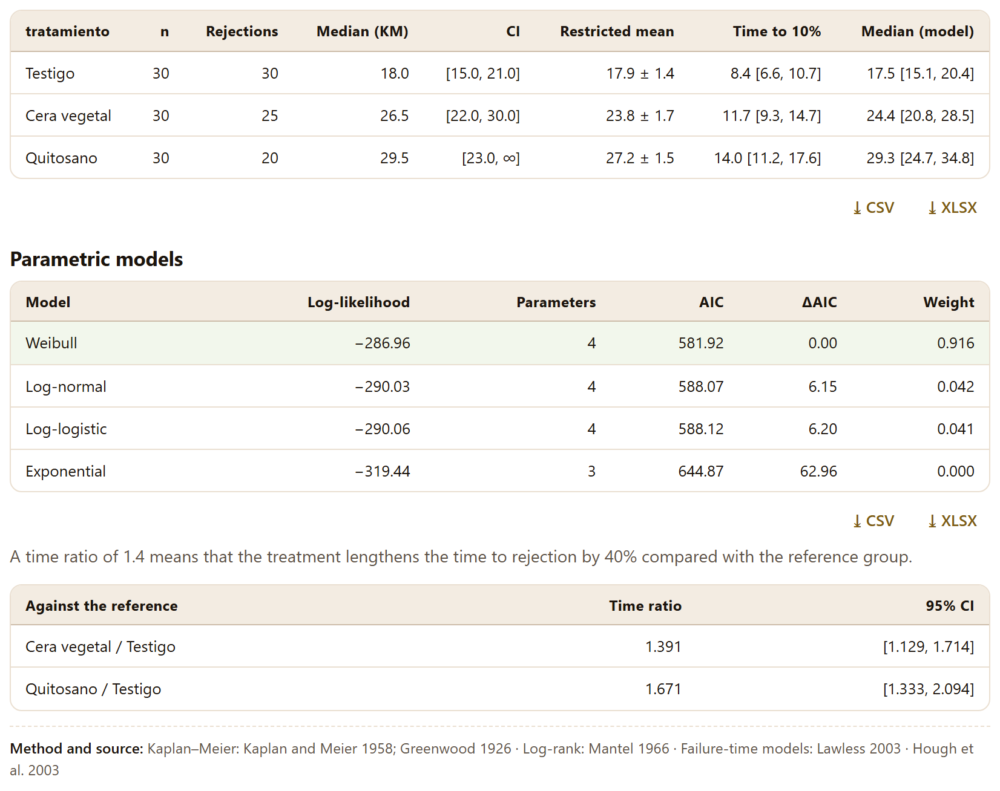
The four models are accelerated failure-time models: the treatment stretches or shrinks the time scale. Its effect is summarized in a time ratio against the first treatment (the reference); the app explains it this way: “A time ratio of 1.4 means that the treatment lengthens the time to rejection by 40% compared with the reference group.” With Weibull, vegetable wax lengthens the time to rejection 1.391 times [1.129, 1.714] and chitosan 1.671 times [1.333, 2.094]: 39% and 67% more than the control, and neither interval includes 1. The methods cited are Kaplan and Meier (1958), Greenwood (1926), Mantel (1966), Lawless (2003) and Hough et al. (2003), who apply these ideas to sensory shelf life.
| If AIC chooses different orders in the groups | then set a single one (the one that wins in most groups or has the largest total weight) before comparing the k values or taking them to Arrhenius. |
| If the Akaike weight of the best order is below 0.9 | then the second order is also plausible; compare their lives to the limit before reporting one. |
| If the time to the limit falls after the last day measured | then it is an extrapolation of the model; report its interval and, if you can, extend the trial. |
| If the interval of Eₐ is very wide (few temperatures) | then do not predict far from the measured temperatures; weight by the standard error of k or measure another temperature. |
| If the tile Caution · extrapolation appears | then read the prediction interval, not only the life, and do not extrapolate below the chilling-injury temperature of the product. |
| If the log-rank test gives p < 0.05 | then the treatments differ in time to rejection; the time ratios say by how much. |
| If a time ratio has an interval that includes 1 | then that treatment does not clearly lengthen the life relative to the reference. |
| If the exponential is far behind by AIC | then the hazard of rejection is not constant (the usual case in fruit): do not use it even though it is the simplest. |
These are guides for interpretation, not laws: what you know about the crop, the cultivar and how the trial was run always comes first.
The life to the limit shows a dash. The model never reaches the limit: check that the limit is on the right side (below C₀ if the attribute drops) or leave the field empty so it is not computed. “For Arrhenius the group must be the temperature (numbers).” The group is a treatment or the temperature is written as text (“13 °C”); type the k values by hand in Temperature. The Temperature tab does not match your data. It opens with the k values of the example mango; to analyze yours, load them in Kinetic models and use Take the k values to the temperature analysis →, or type them in the table. The Arrhenius card does not appear. Two different temperatures with positive k are needed (three for the square root); negative k values are left out, with a warning. The accelerated test gives no result. It needs at least three lives at two different temperatures. The rejected and censored tiles do not match your trial. The status column must be 1 for rejected and 0 for censored; codes such as “yes/no,” “R/C” or 2 are not read as rejection. “No parametric model could be fitted…” There are no fruit with status 1: either the trial ended before the first rejection or the wrong status column was chosen.
A harvested fruit is still alive: it respires, gives off heat and, if climacteric, produces ethylene and ripens all at once. This block measures respiration and ethylene production, recognizes the climacteric, finds the film and thickness that bring a package atmosphere into the recommended window, and computes how long a lot takes to cool and what refrigeration it needs.
Block 4 is subtitled “Respiration rates, climacteric, modified-atmosphere packaging and precooling.” It has five tabs: Static system, Flow-through, Climacteric, Modified atmosphere and Precooling and heat load. Only two read a table through the common data entry (Section 2.1): the static system and the climacteric, with the simulated example “Hass” avocado in three jars and over twelve days (Section I.7). The other three open with values already written in their fields and tables, and recompute as soon as you change one.
The simplest way to measure respiration: the produce is sealed in a jar of known volume and you read how CO₂ rises—and, if you have the means, how O₂ falls and ethylene builds up—at several times. The rate comes from the slope of each gas against time.
The Readings in a closed jar card asks for two required columns, Time (h) and CO₂ (%), and five optional ones: O₂ (%), Ethylene (µL/L), Jar or replicate, Mass (kg) and Jar volume (L). With the jar column, the app computes each jar separately and then averages. Below there are five fields:
The gas that builds up in the jar fills its free volume, V = jar volume − mass/density. A rise of Δ % in the concentration in that volume is Δ/100·V liters of gas. So, if b is the CO₂ slope in % per hour and m the mass in kilograms:
with Vm = RT/P, the molar volume of the gas at the temperature and pressure of the test (24.05 L/mol at 20 °C and 101.325 kPa). O₂ uptake is the same with the sign of the slope changed; ethylene, in µL kg⁻¹ h⁻¹, is the slope in ppm per hour times V/m. The respiratory quotient is RQ = CO₂ produced / O₂ consumed, by volume: close to 1 when the substrate is sugars, lower with lipids or fatty acids, and above 1.3 when fermentation begins (Fonseca et al. 2002; Kader 2002).
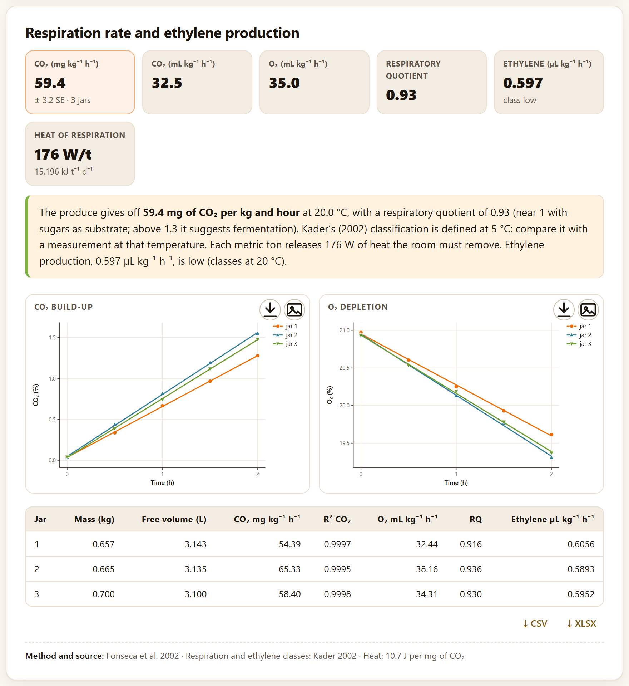
The results card, Respiration rate and ethylene production, gives six tiles: CO₂ in mg kg⁻¹ h⁻¹—the mean of the jars, with its standard error and the number of jars—and in mL kg⁻¹ h⁻¹, O₂ in mL kg⁻¹ h⁻¹, the Respiratory quotient, ethylene with its class, and the Heat of respiration in W per metric ton and in kJ per metric ton and day. Then come the reading, two plots—CO₂ build-up and O₂ depletion (or Ethylene build-up if there is no O₂), with the points and the line of each jar and a legend with their names—and the table by jar with the mass, the free volume, the CO₂ rate and its R², the O₂ rate, the RQ and ethylene.
With Load example the app recognizes the seven columns of aguacate_estatico.csv (tiempo_h, co2_pct, o2_pct, etileno_ppm, frasco, masa_kg and volumen_frasco_L), so the mass and volume fields are not used. The three jars hold 0.657, 0.665 and 0.700 kg of fruit and have a free volume of 3.143, 3.135 and 3.100 L. They respire 54.39, 65.33 and 58.40 mg CO₂ kg⁻¹ h⁻¹: the mean is 59.4 ± 3.2 (SE, 3 jars), which is 32.5 mL kg⁻¹ h⁻¹. They take up 35.0 mL of O₂ kg⁻¹ h⁻¹, with an RQ of 0.93, and produce 0.597 µL of ethylene kg⁻¹ h⁻¹, class “low.” Each metric ton releases 176 W, or 15,196 kJ per day.
The app classifies ethylene with Kader’s (2002) classes, defined at 20 °C: very low below 0.1, low from 0.1 to 1, moderate from 1 to 10, high from 10 to 100 and very high above 100 µL kg⁻¹ h⁻¹. The same author’s respiration classes are defined at 5 °C; that is why the app does not assign a class to a respiration measured at another temperature, and the reading reminds you: “Kader’s (2002) classification is defined at 5 °C: compare it with a measurement at that temperature.” The example avocado, measured at 20 °C, can only be compared with other fruit at 20 °C.
The method assumes that respiration does not change while the jar is closed. That holds only while O₂ stays above about 18–19% and CO₂ below 1–2%: beyond that, the jar atmosphere starts to slow respiration and the line curves. In the example, in two hours CO₂ reaches 1.3–1.6% and O₂ falls to 19.3–19.6%, right at the limit. If any CO₂ line has R² < 0.95, the reading adds: “Some CO₂ line has R² < 0.95: check for leaks or outlying readings.”
In the flow-through system a stream of air passes through the produce chamber without stopping; once it is steady, the difference in concentration between inlet and outlet, times the flow, is what the produce respires. It is the method for measuring over days without the atmosphere changing.
The Chambers with air flow card is an editable table, one row per chamber, with Chamber, Mass (kg), Flow (mL/min), CO₂ in (%), CO₂ out (%), O₂ in (%), O₂ out (%), Ethylene in (µL/L) and Ethylene out (µL/L); on a narrow screen the table scrolls sideways. A new row (+ Add row) comes with the inlet air already written (0.04% CO₂, 20.95% O₂ and 0 ethylene). Below, the Temperature (°C) (20) is used to convert milliliters into milligrams. A row without mass or without flow is not computed.
with F in mL/min. For O₂ the difference is inlet minus outlet. The Rates by chamber card gives four tiles with the mean of the chambers—CO₂, O₂, RQ and ethylene—and the table by chamber, which adds CO₂ in mL and the heat in W/t and gives ethylene in the Ethylene µL kg⁻¹ h⁻¹ column (Fonseca et al. 2002; Saltveit 2016).
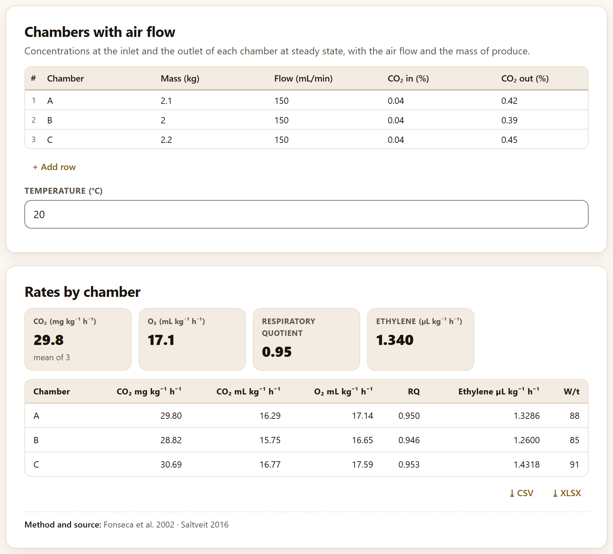
With the starting values, chamber A (2.1 kg; CO₂ from 0.04 to 0.42%) respires 29.80 mg CO₂ kg⁻¹ h⁻¹, B 28.82 and C 30.69; the three release 85 to 91 W per metric ton. Chamber A produces 1.3286 µL of ethylene kg⁻¹ h⁻¹, B 1.2600 and C 1.4318.
Choose the flow so that CO₂ rises between 0.1 and 0.5% from inlet to outlet: with less, the analyzer error weighs too much; with more, the chamber atmosphere is no longer air and respiration changes. The three starting chambers rise 0.35–0.41%.
Climacteric fruit—avocado, mango, banana, tomato—show, as they ripen, a rise in respiration together with a burst of autocatalytic ethylene; non-climacteric fruit—citrus, grape, strawberry—do not. Knowing which type a fruit is decides whether it can be harvested green and ripened at destination.
The Respiration and ethylene curves card asks for Time and Respiration (CO₂ per kg and hour) and, optionally, Ethylene (µL kg⁻¹ h⁻¹), measured on the same fruit along ripening. Below there are five fields. The first two say what units the data are in, to write them in the tiles, the reading and the plot axes:
The app proposes them from the name of the column you choose: dia, dias or day gives days, and hora, hour or a name ending in _h gives hours; a respiration name with “ml” gives mL and one with “mg,” mg. If the proposal is wrong, change it: the units do not change any calculation, only how the results are written. Ethylene is always expected in µL kg⁻¹ h⁻¹. The other three fields set the rule:
| Respiratory rise | The respiration peak, after an earlier minimum, exceeds it at least 1.5 times and is not the last reading. |
| Ethylene burst | The ethylene peak exceeds its earlier minimum 10 times, or reaches 1 µL kg⁻¹ h⁻¹. |
| Climacteric | Both; or the respiratory rise alone if there is no ethylene column. |
| Non-climacteric | Neither, with respiration falling or flat. |
| Uncertain | Any other case: for instance, respiration is still rising at the last reading, or there is a rise without a burst. |
The app itself says so: “The classification follows an explicit rule (below): it is a guide, not a verdict” (Biale 1964; Lelièvre et al. 1997).
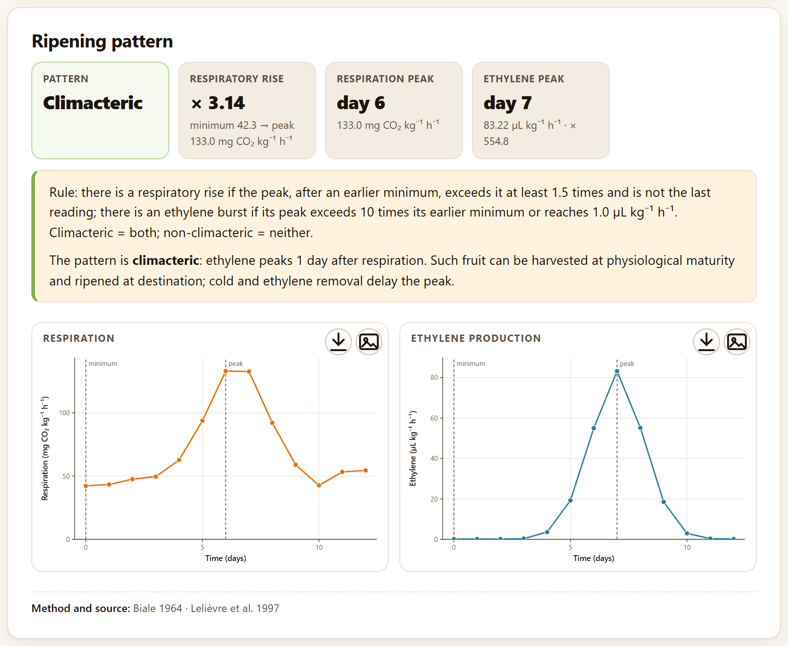
The Ripening pattern card gives the Pattern, the Respiratory rise with its minimum and its peak in the respiration unit, the Respiration peak with its time and value, and the Ethylene peak with its time, value and rise. The reading writes out the rule with the thresholds you set and interprets it. The two plots, Respiration and Ethylene production, label the axes with their units—Time (days), Respiration (mg CO₂ kg⁻¹ h⁻¹) and Ethylene (µL kg⁻¹ h⁻¹) in the example—and mark with vertical lines the minimum and the peak the rule used.
For the example avocado, with the columns dia and respiracion_mg, the app proposes days and mg CO₂ kg⁻¹ h⁻¹. The tiles say “Respiration peak: day 6 · 133.0 mg CO₂ kg⁻¹ h⁻¹” and “Ethylene peak: day 7 · 83.22 µL kg⁻¹ h⁻¹ · × 554.8.” The pattern is climacteric, and the reading adds that “ethylene peaks 1 day after respiration.” After the peaks, respiration falls to 42.7 on day 10 and rises a little again at the end (54.5 on day 12), like fruit entering senescence. When ethylene peaks before respiration, the reading attributes it to autocatalytic production; when they coincide (less than half a unit apart), it says the peaks go together.
If respiration is still rising at the last reading, there is no way to know whether it has already reached its peak, and the app answers “uncertain”: “extend the series.” For the same reason the series must start before the rise: without an earlier minimum, the peak/minimum ratio makes no sense. Measure at least once a day, and twice a day near the peak if the fruit ripens fast.
Inside a sealed bag, the produce consumes O₂ and produces CO₂ while the film lets O₂ in and CO₂ out. Over time the two flows balance and the bag reaches an equilibrium atmosphere. If that atmosphere falls within the window the produce tolerates, respiration slows down and shelf life is extended; if O₂ falls too low, the produce ferments.
The tab does not read a table: the Produce and package card opens with a written case—a bag of avocados—and recomputes with every change. Its fields, in three rows:
| Field | At the start | What for |
|---|---|---|
| Produce (recommended window) | Avocado | Fills the four window fields with Kader’s (2002) values for the crop; Other (type the window) lets you type them |
| O₂ minimum (%) · O₂ maximum (%) | 2 · 5 | The O₂ window |
| CO₂ minimum (%) · CO₂ maximum (%) | 3 · 10 | The CO₂ window |
| O₂ uptake (mL kg⁻¹ h⁻¹) | 4 | The respiration of the produce at the package temperature |
| Respiratory quotient | 0.9 | The CO₂ produced for each volume of O₂ |
| Mass per package (kg) | 0.5 | The produce inside the bag |
| Bag length (cm) · Bag width (cm) | 30 · 25 | The film area: both faces, 2 × 30 × 25 cm = 0.150 m² |
| Temperature (°C) | 8 | Corrects the permeability of the film |
| Film · Thickness (µm) | Low-density polyethylene · 40 | The package being evaluated |
| O₂-limited respiration (Michaelis–Menten), Km (% O₂), CO₂ Ki (%) | unchecked · 2 · 15 | Respiration falls with O₂ and is slowed by CO₂ (see below) |
The produce list has ten windows: avocado, mango, papaya, banana, mature-green tomato, strawberry, blueberry, sweet cherry, broccoli and apple. Choosing one changes only the four window fields; respiration, mass and package stay as you wrote them, so change them too.
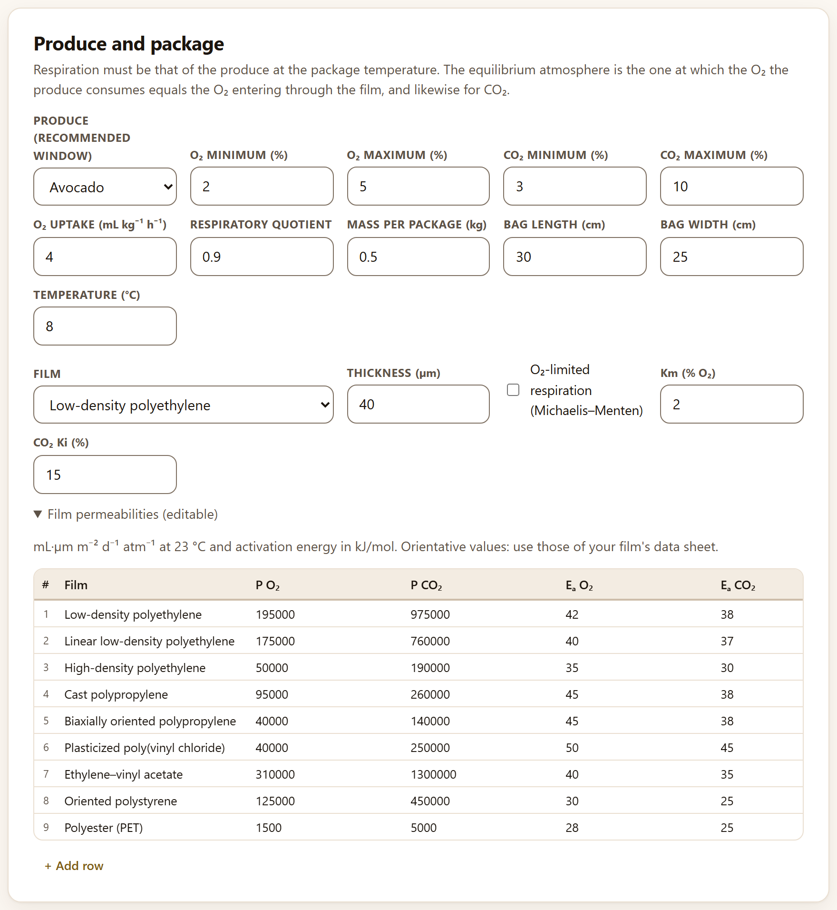
The Film permeabilities (editable) drop-down holds a table of nine films: low-density polyethylene, linear low-density polyethylene, high-density polyethylene, cast polypropylene, biaxially oriented polypropylene, plasticized poly(vinyl chloride), ethylene–vinyl acetate, oriented polystyrene and polyester (PET). For each one it gives P O₂ and P CO₂ in mL·µm m⁻² d⁻¹ atm⁻¹ at 23 °C and the activation energies Eₐ O₂ and Eₐ CO₂ in kJ/mol, with which the app corrects the permeability to the package temperature:
At 8 °C, low-density polyethylene lets through less than half the O₂ it does at 23 °C: cold closes the film almost as much as it slows respiration. These are indicative values (Mangaraj et al. 2009): the card warns you and asks for those on your film’s data sheet. You can correct a row or add a film with + Add row; the new one appears in the Film selector.
Unchecked, the app assumes that respiration does not depend on the atmosphere: the produce consumes the same at 4% O₂ as in air. It is the conservative assumption, because it gives the lowest O₂. If you check O₂-limited respiration (Michaelis–Menten), respiration follows r = Vm[O₂]/(Km + [O₂](1 + [CO₂]/Ki)), with uncompetitive inhibition by CO₂ (Lee et al. 1991). The app chooses Vm so that respiration in air equals the uptake you wrote. With the starting values, the inner O₂ rises from 4.64 to 8.10% and CO₂ falls from 2.73 to 2.16%: the produce respires less and the bag keeps more O₂.
At steady state, what the produce respires equals what crosses the film. From that balance come the O₂ and CO₂ of the bag, the thickness that would bring O₂ to the center of the window, and the permeability ratio needed for CO₂ to fall inside it as well.
with W the mass in kg, L the thickness in µm, A the area in m², and the factor 24 because respiration is per hour and permeability per day (Exama et al. 1993; Fishman et al. 1996). A key property follows: all the atmospheres a film can give, whatever the thickness, area or mass, lie on a straight line that starts at air with slope RQ/β, where β = PCO₂/PO₂ is the permeability ratio of the film. The thickness only moves the point along its line; to change lines you have to change films.
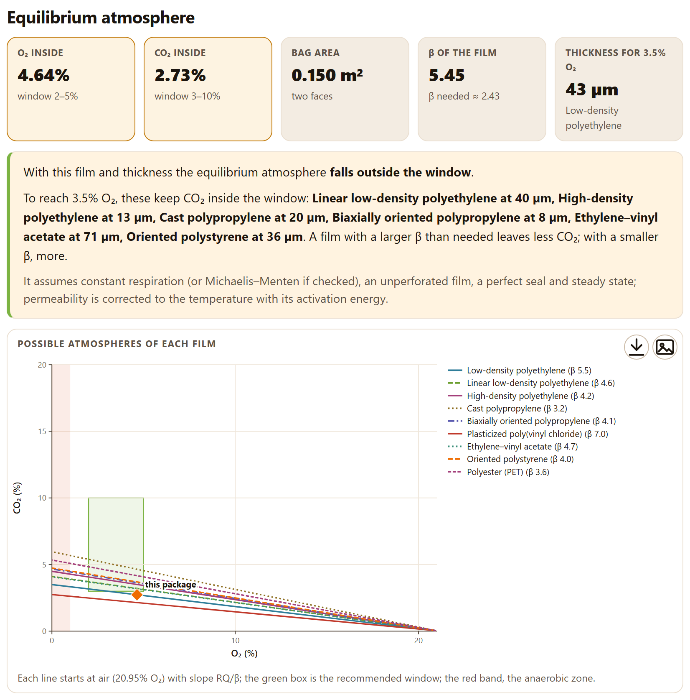
The Equilibrium atmosphere card gives five tiles: O₂ inside and CO₂ inside with their window (green inside it, amber outside and red if there is anaerobiosis), the Bag area, the β of the film with the β needed, and the Thickness for the target O₂—the center of the O₂ window—with the chosen film. The reading says whether the atmosphere falls inside or outside, lists the films that, at the thickness that brings them to the target O₂, also keep CO₂ inside the window, and recalls the assumptions. The Possible atmospheres of each film plot is the O₂–CO₂ plane with the line of each film—named, with its β, in a column legend on the right—, the window and the package point, labeled “this package” over a light halo so it reads on top of the lines; the table gives for each film its β, the thickness for the target O₂, the resulting CO₂ and whether it stays inside the window.
| Film | β | Thickness (µm) | CO₂ (%) | Inside the window |
|---|---|---|---|---|
| Low-density polyethylene | 5.45 | 43 | 2.92 | no |
| Linear low-density polyethylene | 4.63 | 40 | 3.43 | yes |
| High-density polyethylene | 4.23 | 13 | 3.75 | yes |
| Cast polypropylene | 3.19 | 20 | 4.97 | yes |
| Biaxially oriented polypropylene | 4.07 | 8.2 | 3.90 | yes |
| Plasticized poly(vinyl chloride) | 6.97 | 7.4 (not practical) | 2.29 | no |
| Ethylene–vinyl acetate | 4.67 | 71 | 3.40 | yes |
| Oriented polystyrene | 4.01 | 36 | 3.95 | yes |
| Polyester (PET) | 3.56 | 0.4 (not practical) | 4.45 | no |
With the starting values, 40 µm low-density polyethylene leaves the bag at 4.64% O₂ and 2.73% CO₂: it “falls outside the window,” because CO₂ does not reach 3%. Its β is 5.45, and the β needed to land at the center of the window (3.5% O₂ and 6.5% CO₂) is 2.43: with such a high β, CO₂ leaves the bag too fast. Bringing that same film to 3.5% O₂ takes 43 µm and leaves CO₂ at 2.92%, still outside. Six films do get there: linear low-density polyethylene at 40 µm, high-density polyethylene at 13 µm, cast polypropylene at 20 µm, biaxially oriented polypropylene at 8 µm, ethylene–vinyl acetate at 71 µm and oriented polystyrene at 36 µm. If you choose 40 µm linear low-density polyethylene in Film, the bag ends up at 3.55% O₂ and 3.42% CO₂, “inside the recommended window.”
A thickness outside 8–150 µm cannot be made or sealed as a bag: the table marks it “(not practical)” and the film does not count as a solution even if its CO₂ falls in the window, like PET, which would need 0.4 µm. When no film gets there, the reading says so and gives the β that would be needed, “or microperforations”: that is what happens with mango (window 3–5% O₂ and 5–8% CO₂, β needed ≈ 2.36), which with the same bag finds no film in the table.
| If the line of a film crosses the green box… | there is a thickness of that film that brings the bag into the window: the one in the table, if it is between 8 and 150 µm. |
| If the line passes below the box… | the film lets out too much CO₂ (β larger than needed): look for one with a smaller β. |
| If the line passes above… | the film retains too much CO₂ (β smaller than needed): look for one with a larger β. |
| If the inner O₂ falls below 1%… | risk of anaerobiosis (“Risk of anaerobiosis”): more area, less thickness, a more permeable film or less produce. |
| If no film gets there… | the β needed is smaller than that of any unperforated film; with microperforations, which let both gases through almost equally, the β of the whole package goes down. |
The app computes the steady state with an unperforated film and a perfect seal; it does not say how long the bag takes to reach it (Section I.10).
Removing field heat as soon as possible is the cheapest way to extend shelf life. Precooling—with forced air, water, ice or vacuum—lowers the pulp temperature following, after an initial lag, an exponential curve toward that of the medium.
The Cooling curve card is an editable table of Time (h) and Pulp (°C), with the Medium temperature (°C) (1) and the Target temperature (°C) (5). It opens with a simulated forced-air curve: ten readings from 0 to 5 h that fall from 28.0 to 2.7 °C. At least three readings are needed. The app fits the exponential law to the dimensionless temperature:
by least squares on ln Y, with Ti the first reading. C is the cooling coefficient (h⁻¹) and j the lag factor: how long heat takes to start leaving the center of the fruit or the package; j = 1 means no lag (Thompson et al. 2008).
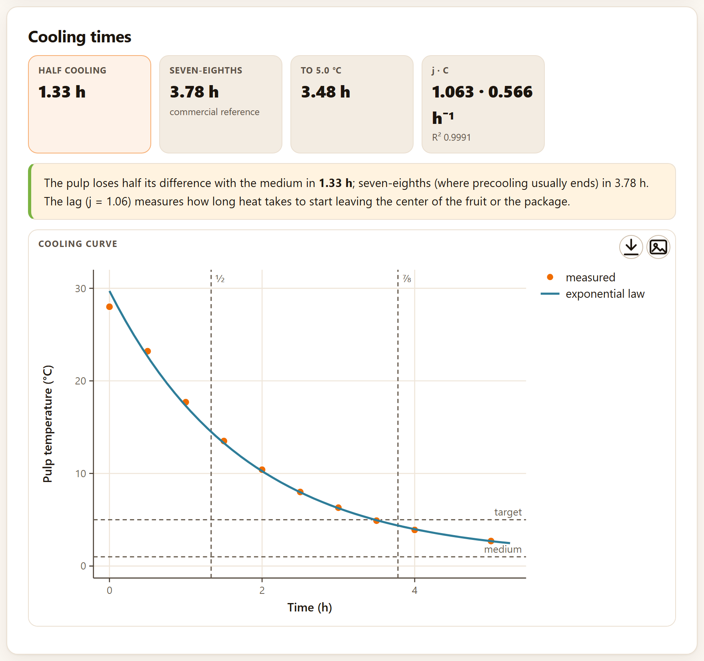
The Cooling times card gives the Half cooling, the Seven-eighths (“commercial reference”), the time To the target temperature, and j · C with the R² of the fit. In the starting curve, j = 1.063 and C = 0.566 h⁻¹ (R² 0.9991). The fitted curve starts slightly above the first reading (28.0 °C) precisely because j > 1.
At seven-eighths the pulp has already lost 7/8 of its difference with the medium: in the example, from 28 °C with air at 1 °C, it is left at about 4.4 °C. That is where commercial precooling usually ends: the last stretch, ever slower, is finished in the storage room. The half-cooling time does not depend on the initial temperature, so it is useful for comparing tunnels, packages or stacking patterns.
The refrigeration equipment must remove, in the time available, the field heat of the produce, that of the packaging, the heat the produce generates by respiring and whatever comes in from elsewhere. The Refrigeration load card, on the same tab, adds it up and turns it into capacity.
Its fields, with the starting values: Produce (kg) 10,000, Water content (%) 85, Initial temperature (°C) 28, Final temperature (°C) 8, Time available (h) 6, Respiration (mg CO₂ kg⁻¹ h⁻¹) 60, Packaging (kg) 800, Packaging specific heat (kJ kg⁻¹ K⁻¹) 1.4 and Other loads (%) 20 (infiltration, fans, lights and people). The respiration must be that of the produce at the mean temperature of the cooling.
The specific heat comes from the water content by Siebel’s (1892) formula, and the capacity is also given in tons of refrigeration (1 TR = 3.517 kW).
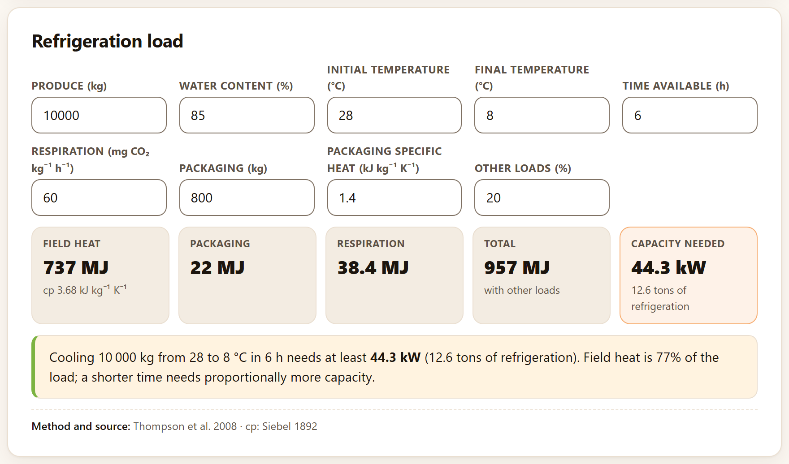
With 85% water, cp = 3.68 kJ kg⁻¹ K⁻¹, and the field heat is 10,000 × 3.68 × 20 = 737 MJ. The packaging adds 800 × 1.4 × 20 = 22 MJ, and respiration, 60 mg CO₂ kg⁻¹ h⁻¹ for 6 h, 38.4 MJ. With 20% other loads the total is 957 MJ, which over 6 h is 44.3 kW (12.6 tons of refrigeration). The reading adds that field heat is 77% of the load and that a shorter time needs proportionally more capacity: cooling the same in 3 h would take twice the equipment.
| What you see | What it means |
|---|---|
| RQ between 0.7 and 1.3 | Normal aerobic respiration; above 1.3, the app warns “possible anaerobic respiration” |
| Ethylene class high or very high | A strong producer: do not store it with sensitive produce (Section 8.6) |
| Pattern “Climacteric” | It can be harvested at physiological maturity and ripened at destination; cold and ethylene removal delay the peak |
| Inner O₂ inside and CO₂ outside the window | The film has the wrong β: changing the thickness is not enough, you have to change films |
| j much larger than 1 | Heat is slow to leave the center: a poorly vented package (Section 8.2) or large fruit |
| Field heat near 80% of the load | Normal: the warm produce is nearly all the equipment has to remove |
Between the field and the consumer, every stage keeps a share of the produce. This block follows the load stage by stage, tells how many kilograms and how much money are lost at each one, which are the critical points and where an improvement pays most; and, with a drop test, from what height the fruit begins to bruise.
Block 5 is subtitled “Quantity and value lost by stage, critical points, what-if and mechanical damage.” It has three tabs: Losses by stage, Simulate improvements and Mechanical damage. The first two work on the same chain, which you write in an editable table; the third reads a table through the common data entry (Section 2.1). Both examples are the example saladette tomato, simulated: a six-stage chain and a drop test with 60 fruit (Section I.7).
A postharvest chain is a succession of stages—harvest, sorting, collection, transport, wholesale, retail—and what is lost at one never reaches the next. That is why the loss of each stage is expressed over what enters it, and losses accumulate.
The The chain card is an editable table, one row per stage and in order, with four columns:
Below come the Quantity entering the chain (kg) (10,000) and the Currency ($), which only changes the symbol in the results. The tab opens with a short four-stage chain written at the start (Harvest, Packing, Transport and Retail), in which 7803 of the 10,000 kg reach the end. The Load example button in the example strip—this card has its own, not the common data entry—replaces it with the tomato chain, and so does Open in … on the home page. The example chain keeps its stage names in Spanish, as the app shows them: Cosecha (harvest), Selección y empaque (sorting and packing), Acopio (collection), Transporte (transport), Central de abasto (wholesale market) and Venta al menudeo (retail). A row without a name, or without a percentage or kilograms, does not enter the calculation.
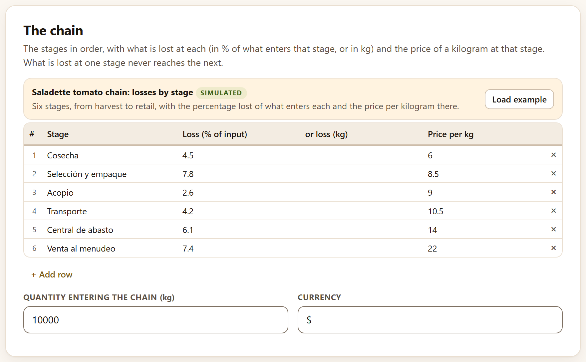
If Ei kilograms enter stage i and it loses the fraction pi, it loses Ei·pi and passes on Ei+1 = Ei(1 − pi). The loss index is what is lost along the whole chain over what entered, in %. The value of what is lost is counted in two ways: at the price of each stage, what the produce was really worth when it was lost; and at the final price, what the market would have paid had it arrived. It is the load-tracking logic of the FAO food loss index (2019) and of the systems assessment of La Gra et al. (2016).
The Losses in quantity and value card sums up the chain in five tiles, a reading, a Sankey diagram, two bar charts and the table by stage.
The tiles are Enters the chain, Reaches the end (with its percentage), Is lost (with the loss index), Value lost (“at the price of each stage”) and Value at the final price (“what the market would have paid”). The reading says how many kilograms of every 100 reach the end, which stage loses most kilograms and which most money, and names the critical points (Section 5.3).
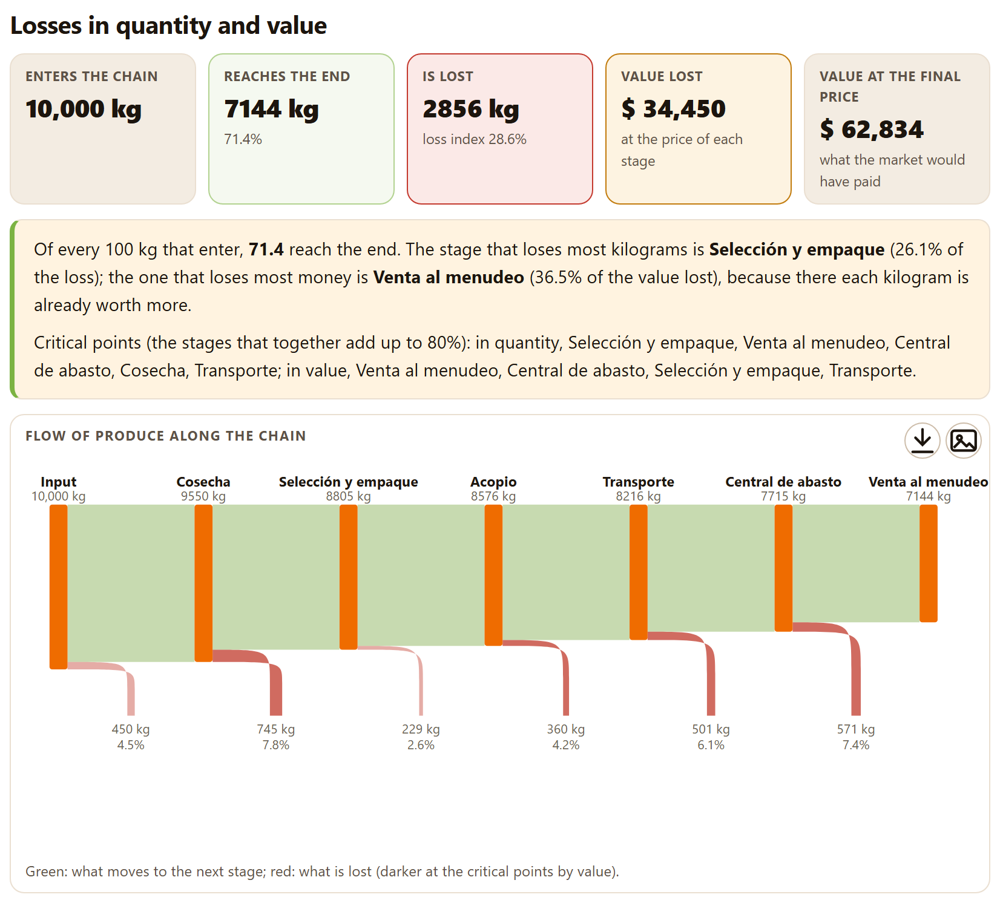
In the Sankey diagram the width of each band is proportional to the kilograms: the green band narrows stage by stage and from its lower edge falls, in red, what is lost, with its kilograms and percentage. Each column carries the stage name and the kilograms that leave it. The two bar charts, Loss by stage (kg) and Value lost by stage, set the stages side by side to compare them.
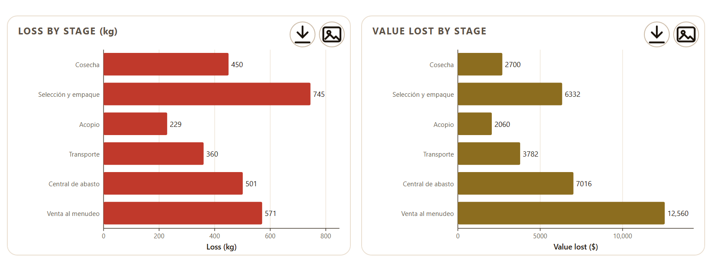
| Stage | In (kg) | Lost (kg) | % of input | % of the initial total | Cumulative % | Price | Value lost | Out (kg) |
|---|---|---|---|---|---|---|---|---|
| Cosecha | 10,000 | 450 | 4.50 | 4.50 | 4.50 | 6.00 | 2700 | 9550 |
| Selección y empaque | 9550 | 745 | 7.80 | 7.45 | 11.95 | 8.50 | 6332 | 8805 |
| Acopio | 8805 | 229 | 2.60 | 2.29 | 14.24 | 9.00 | 2060 | 8576 |
| Transporte | 8576 | 360 | 4.20 | 3.60 | 17.84 | 10.50 | 3782 | 8216 |
| Central de abasto | 8216 | 501 | 6.10 | 5.01 | 22.85 | 14.00 | 7016 | 7715 |
| Venta al menudeo | 7715 | 571 | 7.40 | 5.71 | 28.56 | 22.00 | 12,560 | 7144 |
Of every 100 kg that enter, 71.4 reach the end. The losses by stage are small—none reaches 8% of input—but they add up to a loss index of 28.6%. What was lost was worth $34,450 at the price of each stage; at the final price of $22 a kilogram, the market would have paid $62,834 for it. The stage that loses most kilograms is Selección y empaque (26.1% of the loss); the one that loses most money is Venta al menudeo (36.5% of the value lost), “because there each kilogram is already worth more.”
Below the Pareto table (Section 5.3), the Send to EconomicsPro → button downloads the chain as chain_losses.csv—stage, in_kg, lost_kg, loss_pct, price_kg, value_lost and out_kg—and opens EconomicsPro, the suite’s application for the economic evaluation of projects, in a new tab; a notice reminds you to open the file in its data block. Opening that application online is the only thing in this block that needs a connection; the CSV is downloaded anyway.
Not all stages weigh the same. Pareto analysis sorts the stages from largest to smallest loss and flags those that, together, add up to 80%: the critical points, where it pays to look first.
The Critical points (Pareto) table sorts the stages by Kilograms lost, with their Share of the loss and the Cumulative share, and next to it the order by value (Stage by value, with its share of the value lost). The shaded rows are the critical points in kilograms. The app takes the stages, in order, until the cumulative share reaches 80%, including the one that crosses it.
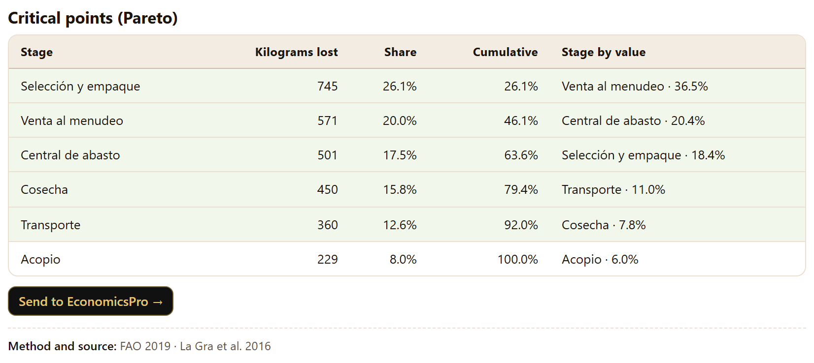
In the example, the critical points in kilograms are Selección y empaque, Venta al menudeo, Central de abasto, Cosecha and Transporte; in value, Venta al menudeo, Central de abasto, Selección y empaque and Transporte. That the kilogram criterion points to the start of the chain and the money criterion to the end is usual: what is lost early weighs more, what is lost late is worth more. In a chain with losses as even as this one, 80% covers almost every stage; Pareto discriminates better when one or two stages concentrate the loss.
What would happen if a stage lost half of what it loses today? The Simulate improvements tab computes it on the chain of Losses by stage and compares the same improvement at every stage.
The What if the loss of one stage falls? card has two controls: Stage, with the stages of the chain, and Reduction of its loss (%) (50), relative: 50% means losing half of what is lost today at that stage. If the chain does not exist yet, it warns: “First build the chain in ‘Losses by stage’.” The results, in Result of the simulation, are three tiles—Extra arriving, Value gained at the final price and New loss index with the previous one—, the reading, the chart Value gained by reducing the loss of each stage by 50% (the chosen stage in orange) and the table with the extra kilograms arriving, the value gained and the new index for each stage.
The proposed Stage is the one that loses most value in the chain. When the chain changes its stages—when you load the tomato example, for instance—, the selector again proposes the one that loses most value in the new chain; if you only correct a figure of the same chain, it keeps the stage you chose.
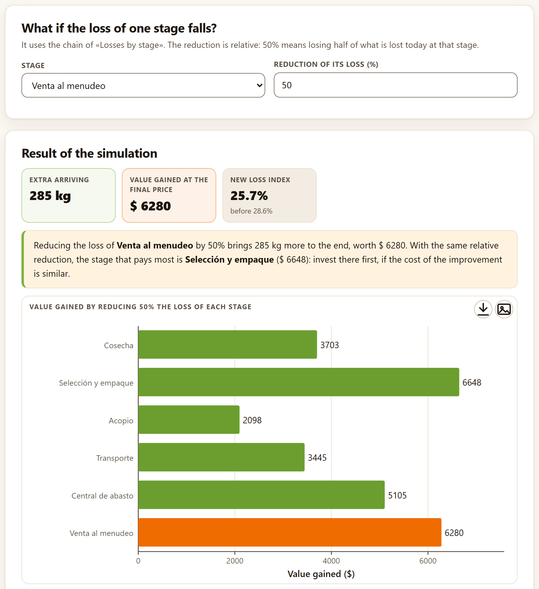
With the example chain, the tab proposes Venta al menudeo. With a 50% reduction, its loss goes from 7.4% to 3.7% and brings 285 kg more to the end, worth $6280 at the final price; the index falls to 25.7%. If you choose Transporte (4.2% → 2.1%), 157 kg more arrive, worth $3445, and the index ends at 27.0%. The comparison of the six stages gives Selección y empaque $6648 (302 kg), Venta al menudeo $6280 (285 kg), Central de abasto $5105, Cosecha $3703, Transporte $3445 and Acopio $2098. The reading concludes: “the stage that pays most is Selección y empaque ($ 6648): invest there first, if the cost of the improvement is similar.”
A kilogram saved at any stage reaches the end and is sold at the retail price; that is why the simulation values it at that price, and why saving kilograms at the start of the chain pays so well even though a kilogram is worth little there. Venta al menudeo, the stage that loses most money (Section 5.3), is not the one where an improvement pays most. Always compare the value gained with what the improvement costs: the app does not know that cost.
The impacts of harvest, the packing line and transport leave bruises that are not visible at first but rot or are rejected later. A drop test from several heights tells how much damage each height produces and from which one it begins.
The Impact or compression test card asks, one row per fruit, for Height, energy or force—required—and five optional columns: Bruise size (curves) (area, volume or depth of the bruise), Bruised (0/1), Bruise volume (mm³), for the susceptibility, Impact energy (J) and Fruit mass (g), if there is no energy. The card’s hint sums it up: “optionally whether it was bruised (0/1), the bruise volume and the impact energy (or the mass, to compute it as m·g·h), which give the susceptibility.” With the example, the app picks altura_cm, area_mm2 for the curves, danado, volumen_mm3, energia_J and masa_g.
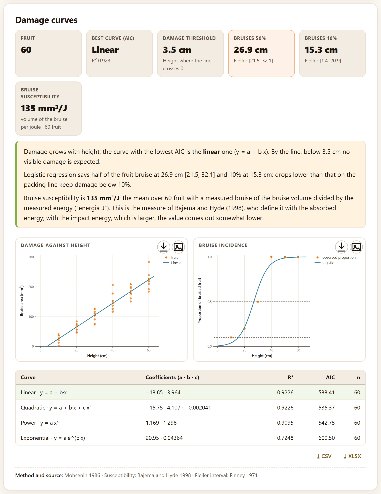
With the bruise size, the app fits four curves by least squares and compares them by their AIC: linear (y = a + b·x), quadratic (y = a + b·x + c·x²), power (y = a·xᵇ) and exponential (y = a·e^(b·x)); the last two are fitted on the log scale, as is customary in the impact literature, and only with fruit of positive size and height (Mohsenin 1986). The table gives the coefficients in the Coefficients (a · b · c) column—those of the equation as written, with a on the original scale also in the power and exponential curves—, the R², the AIC and the number of fruit for each curve, and shades the one with the lowest AIC. The Damage against plot for the chosen variable draws the fruit, the line and, if it is another one, the curve with the lowest AIC. Titles and axes read the column name as a label with its unit: altura_cm is written “Height (cm)” and area_mm2, “Bruise area (mm²).”
| Curve | Coefficients (a · b · c) | R² | AIC |
|---|---|---|---|
| Linear | −13.85 · 3.964 | 0.9226 | 533.41 |
| Quadratic | −15.75 · 4.107 · −0.002041 | 0.9226 | 535.37 |
| Power | 1.169 · 1.298 | 0.9095 | 542.75 |
| Exponential | 20.95 · 0.04364 | 0.7248 | 609.50 |
Although the power and exponential curves are fitted on the log scale, the table gives a = eln a, the coefficient of the curve as written: the power curve of the example is y = 1.169·x1.298, and the exponential one, y = 20.95·e0.04364·x.
The Damage threshold is the height where the line crosses zero, −a/b, in the unit of the column (here, cm): below it, according to the line, no visible damage is expected.
The Bruise susceptibility is the measure of Bajema and Hyde (1998): the bruise volume per joule of energy, in mm³/J. The app computes it fruit by fruit, volume over energy, and averages over the fruit with a measured bruise (volume greater than zero). It takes the volume from Bruise volume (mm³), for the susceptibility; if you do not choose it, it uses the size of the curves. It takes the energy from Impact energy (J); if there is none, from the x axis when that is an energy; and otherwise it computes it from the mass and the height, E = m·g·h. The tile says where it came from: “volume of the bruise per joule” and the number of fruit. The reading explains it in a paragraph of its own.
The curve with the lowest AIC is the linear one (R² 0.923, AIC 533.41): the bruise area grows 3.964 mm² for every centimeter of drop. The quadratic fits just as well (R² 0.9226) but pays for one more parameter. The line crosses zero at 3.5 cm: “By the line, below 3.5 cm no visible damage is expected.” The susceptibility is 135 mm³/J (“volume of the bruise per joule · 60 fruit”): the mean, over the 60 fruit, of the bruise volume divided by the measured energy, the energia_J column.
Bajema and Hyde (1998) define susceptibility with the energy the fruit absorbs in the impact, not with the impact energy: part of the drop energy is returned in the rebound. A drop test usually gives the impact energy, measured or computed as m·g·h, which is larger than the absorbed one; that is why the susceptibility the app gives comes out somewhat lower than in the paper. The reading warns: “This is the measure of Bajema and Hyde (1998), who define it with the absorbed energy; with the impact energy, which is larger, the value comes out somewhat lower.” If you do not have the volume and the app uses the area, the figure comes out in mm²/J, the tile turns amber and the reading warns that it is not comparable with the published values in mm³/J.
The size of the bruise is not everything: for a packer, what matters is what proportion of fruit comes out bruised. With the Bruised (0/1) column, the app fits a logistic regression of incidence against height and computes the heights that bruise 50% and 10% of the fruit.
The coefficients are estimated by iteratively reweighted least squares, and the 95% confidence interval of each height, which is a ratio of two coefficients, by Fieller’s method (Finney 1971). The column must contain only zeros and ones; if it contains anything else, the app does not fit the logistic. The Bruises 50% and Bruises 10% tiles give the two heights with their interval, and the Bruise incidence plot draws the observed proportion at each height, the logistic curve and two dashed lines at 0.5 and 0.1.
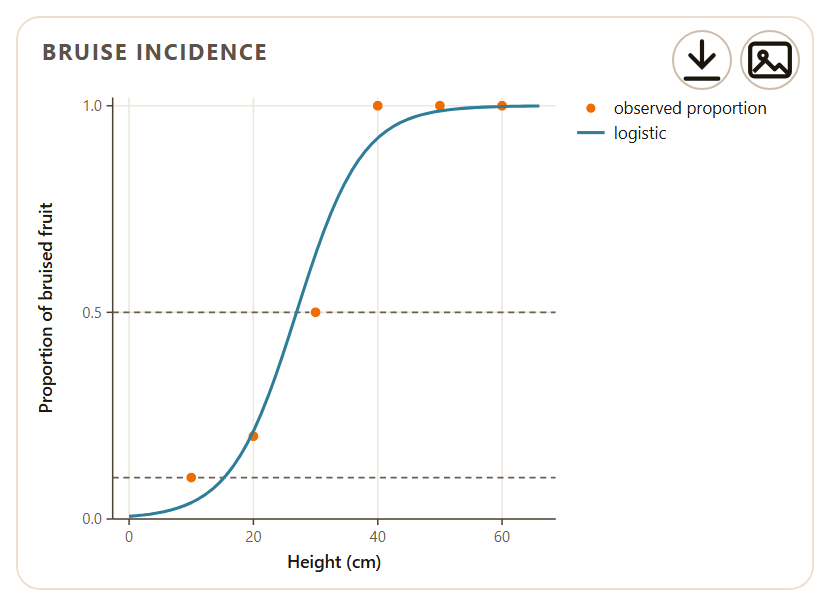
Half of the example tomatoes bruise with a drop of 26.9 cm [21.5, 32.1] and 10% with 15.3 cm [1.4, 20.9]. The reading turns it into a rule for the packing line: “drops lower than that on the packing line keep damage below 10%.” The 10% interval is very wide on the low side because there are few bruised fruit at low heights: if the decision depends on that number, repeat the test with more fruit between 5 and 20 cm.
| If the stage that loses most kilograms is not the one that loses most money… | that is normal: the price rises along the chain. Decide with the value gained in Simulate improvements, not with the kilograms. |
| If the critical points are almost all the stages… | the losses are spread out: there is no bottleneck, and a general improvement (cold, handling) pays more than a targeted one. |
| If a stage is critical both in kilograms and in value… | it is the first candidate for investment. |
| If the drops on the packing line exceed the height that bruises 10%… | lower the transfer heights or add cushioning material; measure again after the change. |
The value gained does not deduct the cost of the improvement nor that of handling more produce: that is what the economic evaluation (EconomicsPro) is for.
A postharvest treatment is only worth it if the consumer does not punish it. The block answers the four questions of a tasting: can the judges tell the difference, and how large is it? Which product is liked best? Which attribute takes liking away, and in which direction? How does a trained panel describe each product? And, before all that, how many judges are needed and in what order to serve the samples.
Under its title, the app sums up the block: “Discrimination, affective and descriptive tests, with the design of the tastings.” One line below, it refers you to SensorialPro, of the same suite, for advanced tests, panels and preference maps, and notes that that app opens the CSV files exported here without changes. The tools are in six tabs: Discrimination, Hedonic, Just-about-right, CATA, Descriptive profile and Ballots.
The examples are three simulated coffee tables: cafe_discriminativas.csv (three tests between the “Altura lavado” (washed high-grown) coffee and the “Honey” one), cafe_consumidores.csv (80 consumers who rate four coffees—Altura lavado, Natural, Honey and Comercial (commercial)—on the hedonic scale, three just-about-right scales and ten CATA terms; the same table feeds the Hedonic, Just-about-right and CATA tabs) and cafe_descriptivo.csv (a panel of eight judges). The data are in Spanish, so the products, attributes and terms keep their Spanish names in the app and in this chapter. The data entry and what the results have in common—tiles, reading, figures with SVG, PNG and ✎, tables with ⤓ CSV and ⤓ XLSX, and the Method and source: line—are explained in Section 2.1.
A discrimination test asks whether the judges can tell two samples apart: the coffee with and without a treatment, the fruit from two atmospheres. The app does not stop at the p-value: it turns the correct answers into the Thurstonian d′, which tells how large the difference is on a scale common to every method.
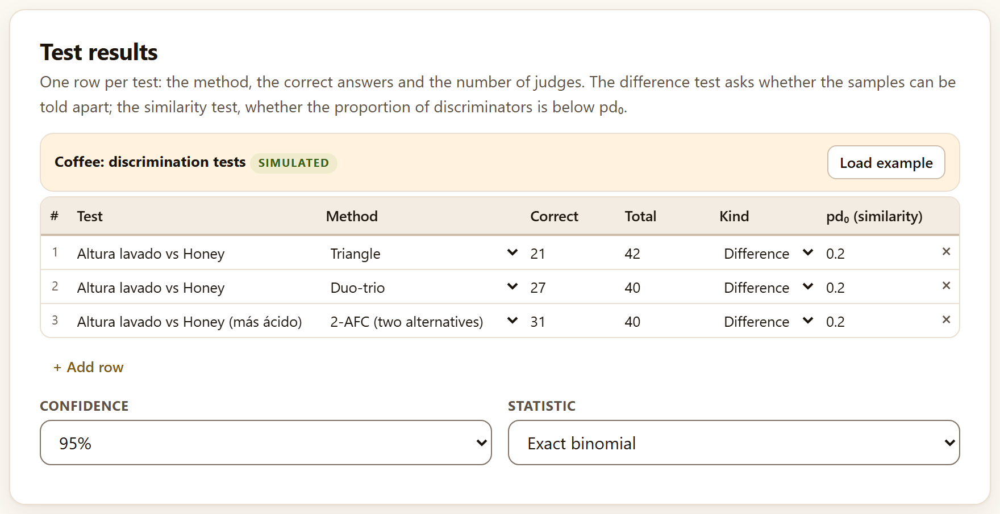
The Test results card does not read a file: it is an editable table, one row per test, which already opens with a starting row (“Test 1”, triangle, 21 of 42). Load example replaces it with the three coffee tests; + Add row adds another and × removes it. Every change recomputes.
| Column | What you write |
|---|---|
| Test | A free name (“Altura lavado vs Honey”). |
| Method | Triangle, Duo-trio, 2-AFC (two alternatives), 3-AFC (three alternatives) or Tetrad. |
| Correct · Total | The correct answers and the number of answers (judges), integers, with 0 ≤ correct ≤ total. |
| Kind | Difference (can they be told apart?) or Similarity (is the proportion of discriminators below pd₀?). |
| pd₀ (similarity) | For similarity only: the largest proportion of discriminators you consider negligible; 0.2 by default. Difference tests do not use it. |
Below, Confidence (90, 95 or 99%; 95% by default) sets the level of the intervals and also the α of the test (α = 1 − confidence). Statistic chooses the test: Exact binomial (the default, with the Clopper–Pearson interval), Likelihood ratio (with the profile likelihood interval), Score (Wilson’s, with continuity correction) or Wald. With few judges, stay with the exact one.
Each method has a probability of being right by guessing, pg: 1/3 in the triangle, the 3-AFC and the tetrad, and 1/2 in the duo-trio and the 2-AFC. The proportion correct, pc, mixes those who notice the difference with those who guess; the proportion of discriminators separates them: pd = (pc − pg) / (1 − pg). But pd depends on the method: the same difference produces more correct answers in a 3-AFC, which asks “which one is more acidic?”, than in a triangle, which asks “which one is different?”. The Thurstonian model assumes that each sample produces a normal sensation and measures the distance between the two in standard deviations: that is d′. Each method has its psychometric function, pc = f(d′), and the app inverts it. That is why d′ can be compared across methods: 21 correct out of 42 is d′ = 1.47 in a triangle and only d′ = 1.02 in a tetrad.
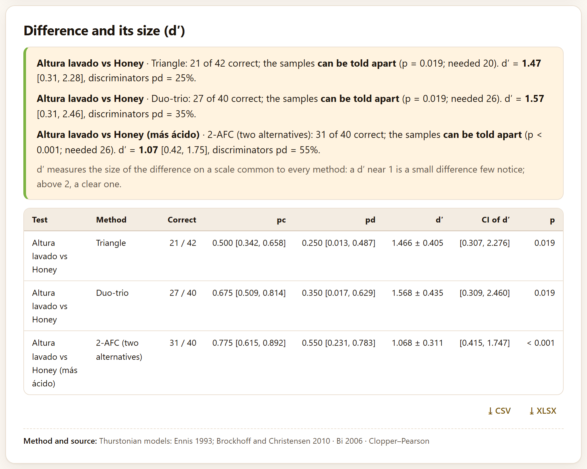
For each difference test, the results card writes the correct answers, whether the samples can be told apart (p < α) or no difference is shown, the p-value with the correct answers that were needed (the minimum with which the test is significant for that total), d′ with its interval, and pd. A note recalls the scale: “a d′ near 1 is a small difference few notice; above 2, a clear one.” The table, downloaded as discrimination_tests.csv, gives pc and pd with their intervals, d′ with its standard error (by the delta method) and the interval of d′, which is that of pc carried through the same function.
The three tests of the example say that the samples can be told apart, but with nuances. The triangle, 21 of 42 (20 were needed): p = 0.019, pc = 0.500 [0.342, 0.658], pd = 25% and d′ = 1.47 [0.31, 2.28]. The duo-trio, 27 of 40 (26 were needed): p = 0.019, pd = 35% and d′ = 1.57 [0.31, 2.46]. The 2-AFC, which asked which one was more acidic (“más ácido”), 31 of 40: p < 0.001, pd = 55% and d′ = 1.07 [0.42, 1.75]. The pd values are very different (25, 35 and 55%) and yet the three d′ fall between 1 and 1.6, with overlapping intervals: it is the same small difference, measured with three methods. The intervals are wide because 40 judges are few for a d′ like this (Section 6.2).
If what you want to show is that a process change is not noticed, change the Kind to Similarity and set pd₀. The hypothesis is reversed: the test is significant when the correct answers are few, and the reading says “similarity is shown: the proportion of discriminators is below 0.20” or “similarity cannot be claimed with pd₀ = 0.20”. Not showing a difference is not showing similarity: with the 21 correct of 42 of the triangle, the similarity test with pd₀ = 0.2 gives p = 0.722; with 16 correct of 60, p = 0.001.
The Method and source: line cites the Thurstonian models (Ennis 1993; Brockhoff and Christensen 2010), Bi (2006) and the Clopper–Pearson interval.
The question worth asking before the tasting, not after: for the difference I care to detect, how many judges do I need and which method performs best? The Plan: number of judges and power card needs no data.
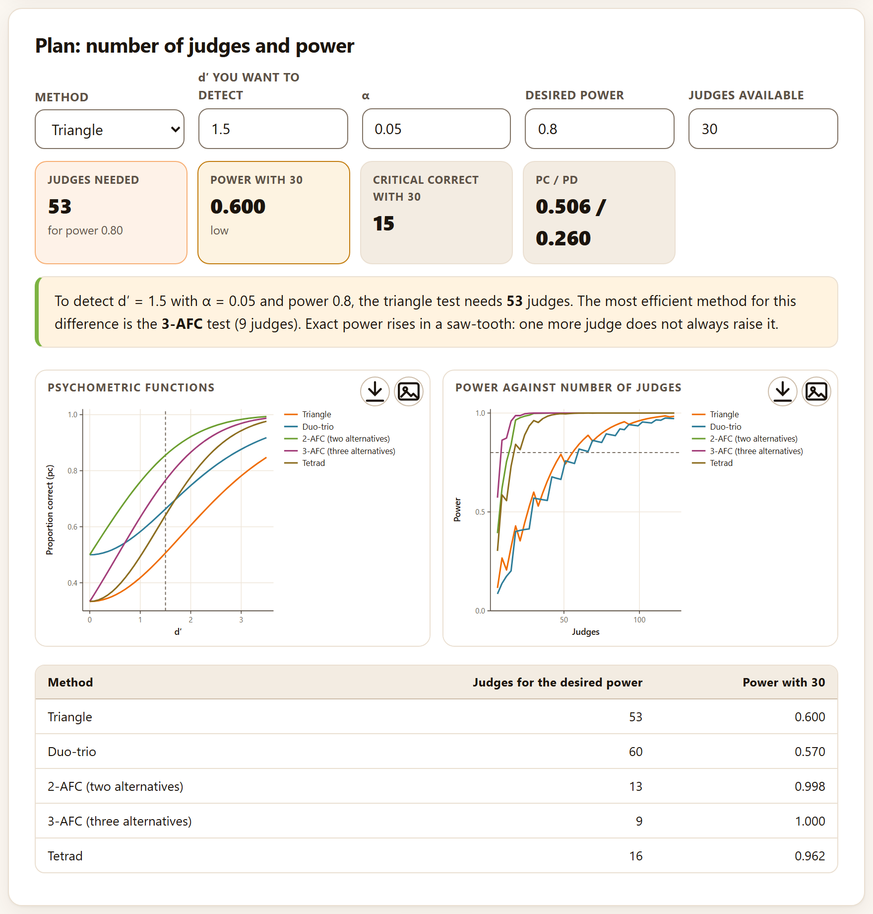
The fields are Method (Triangle), d′ you want to detect (1.5), α (0.05), Desired power (0.8) and Judges available (30). The four tiles give the Judges needed (53, “for power 0.80”), the Power with 30 (0.600, marked “low” for being below 0.8), the Critical correct with 30 (15: the number of the 30 judges who would have to answer correctly for the test to be significant) and pc / pd (0.506 / 0.260: the proportion correct and of discriminators that corresponds to d′ = 1.5 in that method).
The table compares the five methods with the same d′, the same α and the same power:
| Method | Judges for the desired power | Power with 30 |
|---|---|---|
| Triangle | 53 | 0.600 |
| Duo-trio | 60 | 0.570 |
| 2-AFC (two alternatives) | 13 | 0.998 |
| 3-AFC (three alternatives) | 9 | 1.000 |
| Tetrad | 16 | 0.962 |
The reading sums it up: “the triangle test needs 53 judges. The most efficient method for this difference is the 3-AFC test (9 judges).” The two figures show why. Psychometric functions plots pc against d′ for the five methods, with a line at the chosen d′: the 2-AFC and the 3-AFC rise much faster than the triangle and the duo-trio. Power against number of judges plots the exact power from 6 to 123 judges, with a line at the desired power.
Power is the probability that the test comes out significant if the difference is the one you assumed. With the exact binomial test, the critical number of correct answers rises in jumps: when one judge is added, sometimes one more correct answer is needed and the power drops. That is why the curve rises in a saw-tooth and the app looks for the first number of judges that exceeds the desired power, starting from a normal approximation (Ennis 1993; Ennis and Jesionka 2011). The directional methods (2-AFC, 3-AFC) are more powerful because they ask about a specific attribute, but they only work if you know beforehand in which attribute the samples differ; the triangle, the duo-trio and the tetrad do not need it.
Two small cards at the bottom of the tab, with typed fields and an immediate result: the A–not A test, for when the samples cannot be served together, and paired preference.
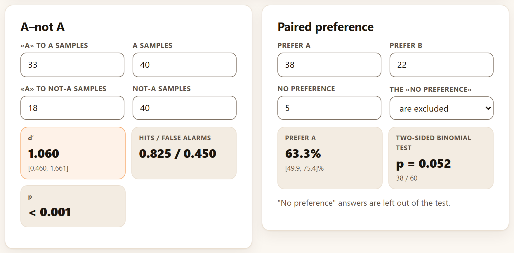
The judges first learn what sample “A” is like and then, for each sample, say whether it is “A” or “not A”. The fields are “A” to A samples (33), A samples (40), “A” to not-A samples (18) and Not-A samples (40). The hits are H = 33/40 = 0.825 and the false alarms F = 18/40 = 0.450; d′ = z(H) − z(F) = 1.060 [0.460, 1.661], and the p-value (< 0.001) is that of Fisher’s exact test, one-sided, that A samples receive more “A” answers. No proportion may be 0 or 1: with them the model has no finite estimate and the app gives no result.
With Prefer A (38), Prefer B (22) and No preference (5), the app runs a two-sided binomial test that half prefer each product. The “no preference” answers either are excluded (the default: 38 of 60, 63.3% [49.9, 75.4]%, p = 0.052) or are split half and half (40 of 64, 62.5% [49.5, 74.3]%, p = 0.060). Below the tiles, a note says what was done with them: if they are excluded, “"No preference" answers are left out of the test.”; if they are split and their number is odd, like the starting 5, “Odd number of "no preference" answers: one was left out when splitting them.” (two go to A, two to B and one is left out). With the starting values, the preference for A is not shown.
The affective test par excellence: each consumer rates each product on the nine-point hedonic scale, from 1 “dislike extremely” to 9 “like extremely”. The app compares the products treating each consumer as a block.
The Consumer liking card asks for one row per consumer and product with three roles: Consumer, Product and Liking. The example, “Coffee: 80 consumers (liking, just-about-right and CATA)”, has 320 rows and 16 columns (consumidor, cafe, agrado, three jar_… columns and ten terms); only the first three are used here.
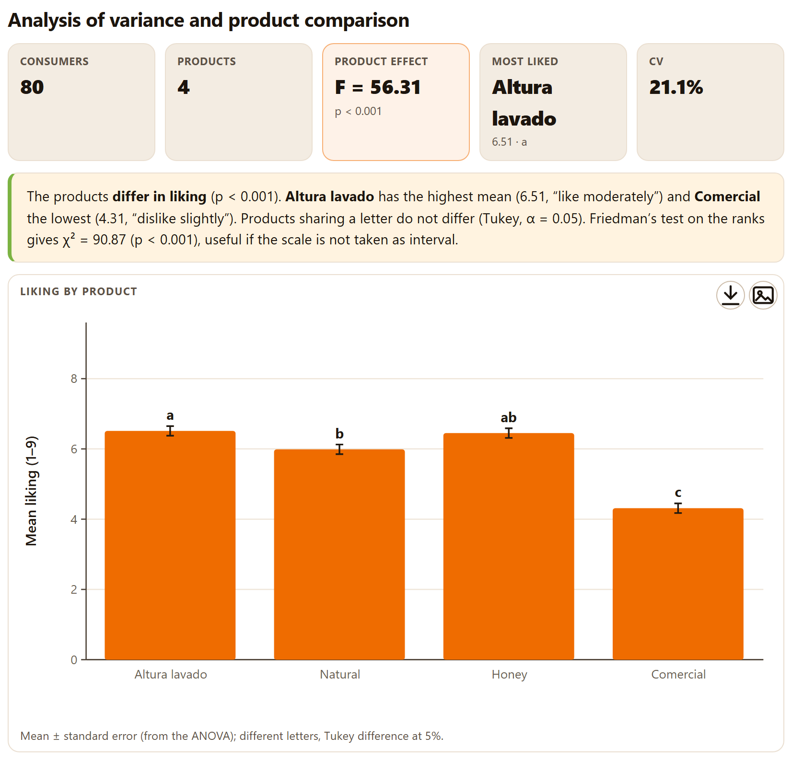
The tiles give the Consumers (80), the Products (4), the Product effect (F = 56.31, p < 0.001), the Most liked (Altura lavado, 6.51 · a) and the CV (21.1%). The reading turns the extreme means into words of the scale—6.51 is “like moderately”, 4.31 “dislike slightly”—rounding the mean to the nearest point. The Liking by product figure shows the mean of each product with its standard error and its letters.
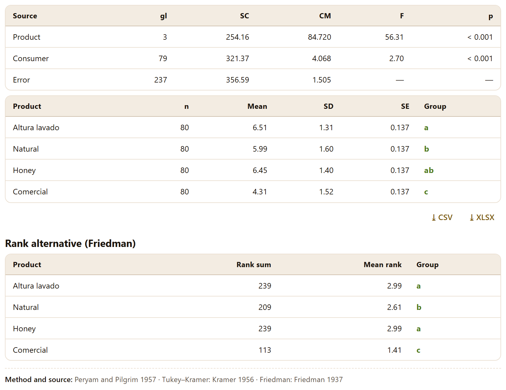
The ANOVA is two-way without interaction, liking = mean + product + consumer + error: product (3 df, F = 56.31), consumer (79 df, F = 2.70) and error (237 df, MS 1.505). Removing the variation between consumers—some rate everything high, others everything low—is what makes the test sensitive. The table of means, downloaded as hedonic.csv, gives n, the mean, the SD, the SE (√(MSerror/n) = 0.137) and the Tukey–Kramer Group at 5%: Altura lavado 6.51 a, Honey 6.45 ab, Natural 5.99 b and Comercial 4.31 c. Products sharing a letter do not differ: Honey cannot be told apart from either Altura lavado or Natural, but these two do differ from each other.
Below, Rank alternative (Friedman) ranks the products within each consumer and compares the rank sums (χ² = 90.87, p < 0.001), with its own letters: Altura lavado and Honey a (mean rank 2.99), Natural b (2.61) and Comercial c (1.41). Use it if you do not accept that the hedonic scale is an interval scale, that is, that the distance from “like slightly” to “like moderately” is the same as from “moderately” to “very much”. Friedman only uses the consumers who rated every product.
When some consumers did not rate a product, the design becomes unbalanced and the app says so below the reading: “Unbalanced design (not every consumer scored every product): the ANOVA table is sequential, with product first, and the product effect reported is the one adjusted for consumers (product last). The comparisons use the observed means.” The ANOVA table then gains a row, Product, adjusted for consumers, just before the error: it is the F given by the tiles and the reading. If you remove nine of the 320 rows of the example, the Product row gives F = 55.51 and the adjusted one F = 54.16 (3 and 228 df). With the complete example, which is balanced, neither the warning nor the row appears.
Knowing that a coffee is liked less does not say what to change. Just-about-right (JAR) scales ask, for each attribute, whether it is “too little”, “just right” or “too much”, and penalty analysis counts how much liking is lost for each deviation.
The Just-about-right scales card asks for one row per consumer and product with Consumer, Product, Liking and the Just-about-right attributes, which the app proposes by itself from the columns whose name begins with jar_ (in the example, jar_acidez, jar_amargor and jar_cuerpo—acidity, bitterness and body; the prefix is dropped in the results). Below are two fields: Scale levels (5: 1 = too little, 3 = just right, 5 = too much) and Consumer threshold (%) (20). The scale must have a center: 3, 5, 7 or 9 levels. With an even number, the app warns, in a box below those two fields, “With an even number of levels there is no center: use 3, 5, 7 or 9.”, and hides the results (which also leave the Block 9 report) until you write an odd number; the loaded data are not lost.
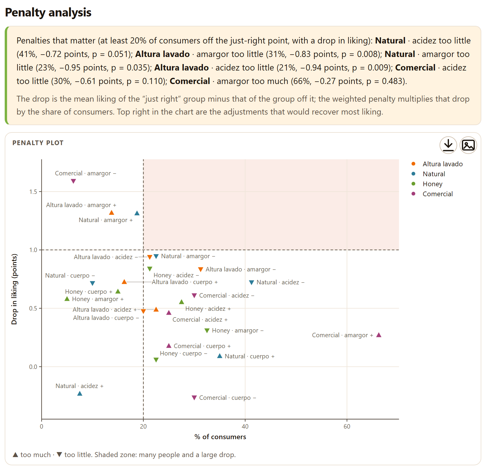
For each product and attribute, the consumers fall into three groups: below the center (too little), at the center (just right) and above it (too much). The drop of a group is the mean liking of the “just right” group minus that of the group off it, and it is tested with a pooled-variance two-sample t. The weighted penalty multiplies the drop by the proportion of consumers in that group: a drop of one point in 40% of the people weighs more than one of two points in 5%. A deviation “matters” when it gathers at least the consumer threshold (20%) and has a positive drop (Xiong and Meullenet 2006; Lawless and Heymann 2010).
The reading lists up to six penalties that matter, sorted by the weighted penalty, with the percentage, the drop and its p. The table (jar_penalties.csv) gives, by product and attribute, the % “low”, “JAR” and “high”, the two drops with their p and the larger of the two weighted penalties. In the Penalty plot, each label gives the product and the attribute in full, with “+” for too much and “−” for too little (“Comercial · amargor +”); the app places them so they do not overlap and, when a label has to move away from its point, joins them with a short leader line. The legend of the product colors goes outside the plot area, on the right, and the drop axis has ticks every half point (0, 0.5, 1 and 1.5 in the example); a negative drop (below zero) means that those off the just-right point rate higher. The second figure, Distribution of just-about-right answers, stacks the three percentages of each product and attribute, also with the full names.
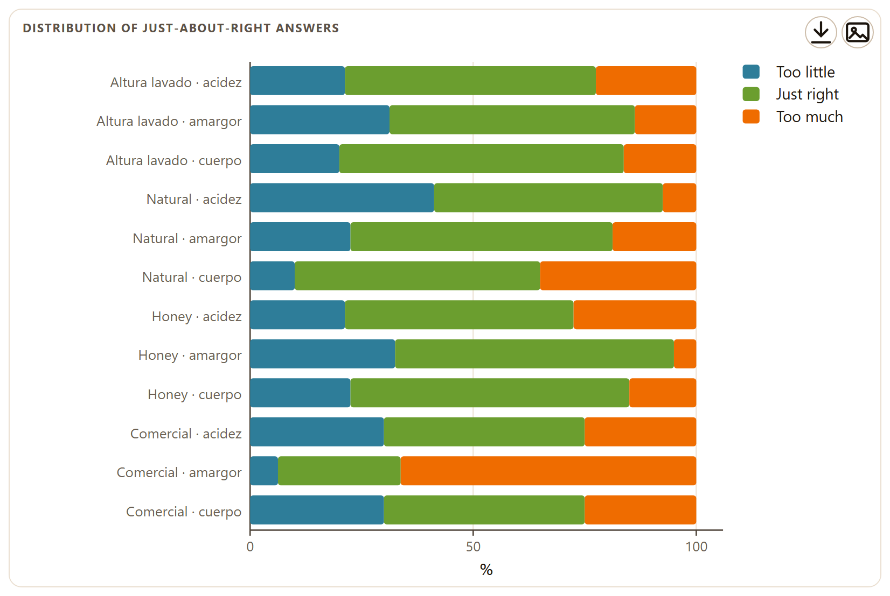
The largest penalty is the acidity of Natural, too little for 41% (a drop of 0.72 points, p = 0.051, penalty 0.298). Next come the bitterness of Altura lavado, too little for 31% (−0.83 points, p = 0.008), the bitterness of Natural, too little for 23% (−0.95, p = 0.035), and the acidity of Altura lavado, too little for 21% (−0.94, p = 0.009). For Comercial, the acidity appears, too little for 30% (−0.61, p = 0.110), and the bitterness, too much for 66% but with a drop of only 0.27 points (p = 0.483): many people notice it, and yet those who find it just right do not rate it much higher. No point enters the shaded zone, which also requires a drop of more than one point. Conversely, too much bitterness in Altura lavado costs 1.32 points (p = 0.003), but only for 13.8%: it stays below the threshold and the reading does not mention it.
The reading flags by percentage and drop, not by p-value: a penalty with p = 0.483 appears if it gathers 20% of the consumers. Check the p in the table before recommending a change.
In the check-all-that-apply (CATA) question, the consumer checks, from a list of terms, those that describe each product. It is quick and needs no training; the app tells which terms separate the products and draws the map that relates them.
The Check all that apply card asks for one row per consumer and product, with Consumer, Product and Terms (0/1): the app proposes by itself the columns that contain only 0 and 1 (and at least one 1) and do not begin with jar_. In the example there are ten: Afrutado (fruity), Chocolate, Floral, Nuez (nutty), Tostado (roasted), Quemado (burnt), Ácido (acidic), Amargo (bitter), Dulce (sweet) and Astringente (astringent).
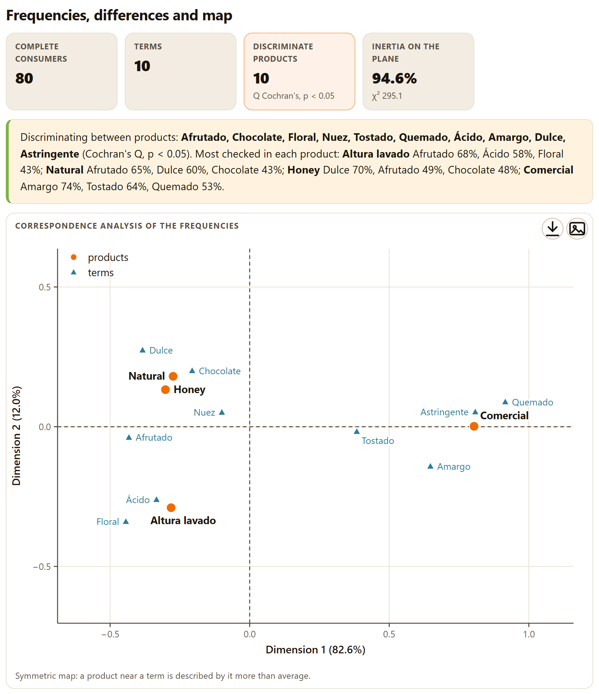
The tiles give the Complete consumers (80: those who evaluated every product, the only ones that enter the tests), the Terms (10), how many Discriminate products (10, by Cochran’s Q with p < 0.05) and the Inertia on the plane (94.6%, with the χ² of the table, 295.1). The reading names the discriminating terms and the three most checked in each product: Altura lavado, Afrutado 68%, Ácido 58% and Floral 43%; Comercial, Amargo 74%, Tostado 64% and Quemado 53%.
Because each consumer evaluates every product, the answers to a term are paired: they are not compared as independent proportions. Cochran’s Q tests, term by term, whether the proportion of checks differs between products, with each consumer as a block. If it does, McNemar’s test compares each pair of products and the p-values are adjusted by Holm, because with four products there are six pairs. Correspondence analysis summarizes the product × term frequency table in a symmetric map: a product near a term is described by it more than average (Meyners et al. 2013; Greenacre 2007).
The table (cata.csv) gives the percentage of each term in each product, Q, its p and the Differing pairs (Holm); the rows of the discriminating terms are highlighted. The second figure, Frequency of each term, plots those percentages as grouped bars. A term can discriminate overall without any pair differing after the adjustment: this is the case of Chocolate (Q = 11.16, p = 0.011), between 25.0% in Comercial and 47.5% in Honey, whose pairs column says “—”. Dulce, in contrast, separates five of the six pairs.
A trained panel rates the intensity of each attribute on a continuous scale, several times. It is the tool for describing precisely what a treatment changes: not whether it is liked, but how much more acidic, more bitter or fuller-bodied the product turns out.
The Trained panel card asks for one row per judge, product and session, with Judge, Product, Session or replicate (optional) and the Attributes. The example, “Coffee: quantitative descriptive profile” (64 rows, 10 columns), has eight judges who evaluate the four coffees in two sessions, with seven attributes from 0 to 10: Fragancia (fragrance), Acidez (acidity), Amargor (bitterness), Cuerpo (body), Dulzor (sweetness), Astringencia (astringency) and Residual (aftertaste). Its description warns of three weak judges: “Judge J6 was simulated with more noise (repeats poorly) and J8 with hardly any differences between coffees (barely discriminates); by chance, J4 also came out weak. The panel performance flags all three.” (Section 6.8). Mean comparison chooses between Fisher’s LSD (the default) and Tukey.
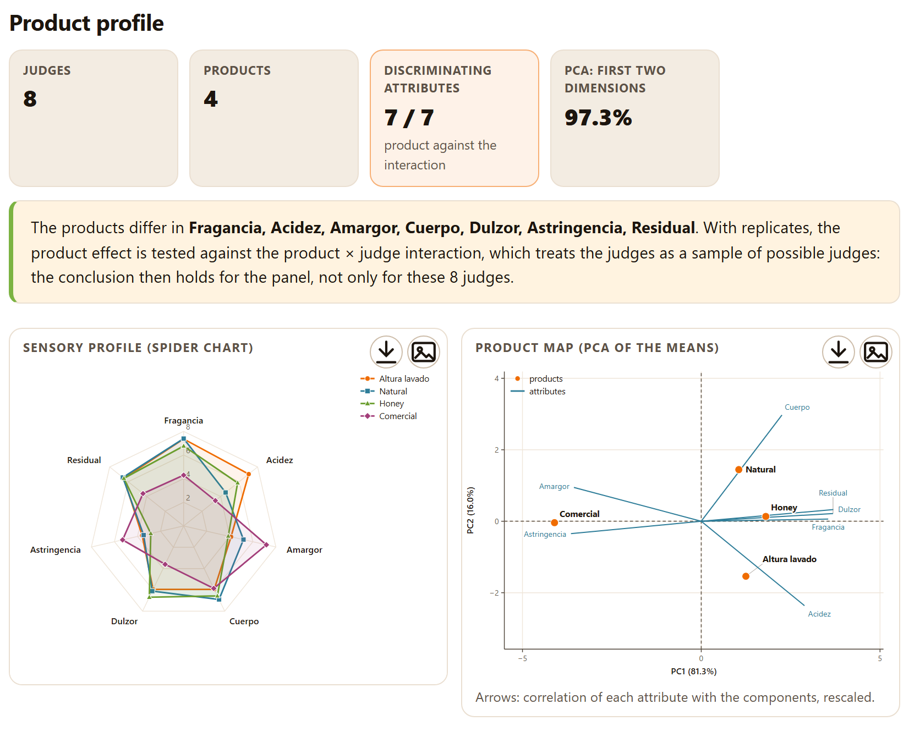
For each attribute, the app fits the ANOVA intensity = product + judge + [session] + product × judge + error. The judges were not chosen for their own sake: they are a sample of the judges who could have been there. That is why, when there are replicates, the product effect is tested against the product × judge interaction (mixed model), not against the error: the conclusion then holds for the panel and not only for those eight, as the reading recalls (“…not only for these 8 judges.”, with the number of judges in your data). If each judge evaluated each product only once, the interaction cannot be separated from the error and the test is the usual one (Stone et al. 1974; Næs et al. 2010).
The tiles give the Judges (8), the Products (4), the Discriminating attributes (7 / 7, “product against the interaction”) and the variation retained by PCA: first two dimensions (97.3%). The table (descriptive_profile.csv) gives, by attribute, the product F against the interaction, its p and the mean of each product with its letters, computed with the same interaction error:
| Attribute | F | Altura lavado | Natural | Honey | Comercial |
|---|---|---|---|---|---|
| Fragancia | 33.45 | 7.36 a | 7.39 a | 6.76 a | 4.29 b |
| Acidez | 37.94 | 7.04 a | 4.54 c | 5.84 b | 3.43 d |
| Amargor | 26.63 | 4.11 c | 5.19 b | 3.87 c | 7.17 a |
| Cuerpo | 6.65 | 5.96 b | 6.90 a | 6.57 a | 5.86 b |
| Dulzor | 25.51 | 5.95 a | 6.12 a | 6.69 a | 3.61 b |
| Astringencia | 12.20 | 3.60 b | 3.47 b | 2.85 b | 5.29 a |
| Residual | 17.71 | 6.47 a | 6.58 a | 6.46 a | 4.39 b |
All p-values are < 0.001 except that of Cuerpo (0.002). With Tukey, which is stricter, two letters change: the bitterness of Altura lavado becomes “bc” and the body of Honey “ab”. The LSD protects little when there are many products; with four, the two usually agree.
The figures are the Sensory profile (spider chart), with one axis per attribute and one line per product, and the Product map (PCA of the means): the principal component analysis of the product × attribute table of means, with the products as points and the attributes as arrows (their correlation with the components, rescaled). In the example, PC1 (81.3%) sets Comercial against the other three, and PC2 (16.0%) separates the acidity of Altura lavado from the body of Natural. The Send to PCAPro (preference map) → button passes those means to PCAPro, of the same suite, as profile_product_means.csv, to cross them with consumer liking.
A profile is only as good as its panel. The second card checks each judge with three questions: does the judge tell the products apart? Repeat the rating? Agree with the others?
For each judge and attribute, the app fits a one-way ANOVA with the judge’s own ratings (product, using the replicates) and summarizes the seven attributes in the table (panel_performance.csv):
| Column | What it measures | Flagged if… |
|---|---|---|
| Attributes discriminated | In how many attributes the judge’s ANOVA by product gives p < 0.05. | — |
| Median p | Discrimination: the median of those p-values. | > 0.20: “discriminates little” |
| Repeatability (residual SD) | Repeatability: the mean residual deviation of the judge’s ANOVA; lower is better. | > 1.5 times the panel median: “repeats poorly” |
| Agreement (median r) | Agreement: the Pearson correlation between the judge’s means by product and the panel’s, median over the attributes. | < 0.5: “disagrees with the panel” |
| Check | The flags that apply, or “—”. |
The thresholds are lenient on purpose: with two sessions, the ANOVA of a single judge has very few degrees of freedom and little power. In the example, the reading says: “Consider retraining or checking: J4 (discriminates little, repeats poorly); J6 (discriminates little, repeats poorly); J8 (discriminates little). The least repeatable is J6 (mean residual SD 2.30).” J4 and J6 discriminate in no attribute (median p 0.268 and 0.460), and their residual SD (1.40 and 2.30) exceeds 1.5 times the panel median; J8 repeats well (0.60) and agrees with the panel (0.85), but discriminates in a single attribute. They are the three announced by the description of the example: J6 and J8 were simulated that way, and J4 came out weak by chance. All eight agree with the panel (median r between 0.84 and 0.97).
Detail of the attribute chooses an attribute and shows two tables: its full ANOVA and the performance of each judge in it. With Fragancia, the ANOVA gives Product F = 17.20 against the error, Judge 2.00 (p = 0.088), Session 0.75 (p = 0.393) and Product × judge 0.51 (p = 0.942); the F of 33.45 in Table 6.2 is the product MS (34.385) divided by that of the interaction (1.028). In the second table, J6 has the largest residual SD in Fragancia (3.19).
The last tab prepares the session: in what order each judge receives the samples, with which three-digit code, and the printed ballots on which to answer. A poorly balanced order brings into the results the effect of position and that of the previous sample.
The fields are in two rows: on top Test, Judges, Seed and Ballot title; below, wide so they can be read in full, Products (comma separated) and Attributes (profile).
| Field | Default | What it does |
|---|---|---|
| Test | 9-point hedonic | The kind of ballot: 9-point hedonic, Profile (attributes) or Triangle. |
| Judges | 12 | How many judges. |
| Seed | 2026 | The seed of the codes and of the order of the triads: the same seed always gives the same plan. |
| Ballot title | Coffee evaluation | The heading of each ballot. |
| Products (comma separated) | Altura lavado, Natural, Honey, Comercial | The products. In the triangle only the first two count. |
| Attributes (profile) | Fragrance, Acidity, Bitterness, Body, Sweetness | The line scales of the profile ballot. |
| A different code per judge for each product | unchecked | Unchecked, each product carries a single code for the whole session; checked, each judge receives their own codes (up to 900 in all). |
Generate the plan builds the plan and enables the other two buttons. Print the ballots opens a window with one ballot per judge, on letter paper, and sends it to print: the hedonic ballot asks to mark the nine-point scale for each code, in the order shown, with the instruction to rinse between samples; the profile ballot, a line scale from “low” to “high” per attribute; the triangle ballot, to circle the code of the different sample. All carry the judge, a line for the date and another for comments. If the browser blocks the window, the app warns “The browser blocked the window: allow pop-ups to print.” ⤓ Serving plan (CSV) downloads serving_plan.csv, with the columns judge, position, product and code, one row per sample served.
A Williams square is a Latin square in which, besides each product appearing once in each position, each product is preceded by each of the others the same number of times: it balances position and first-order carry-over. With an even number of products one square is enough (4 products, 4 orders); with an odd number two are needed, the second with the rows reversed (3 products, 6 orders). Judge a receives row a of the design, so the balance is complete only if the number of judges is a multiple of the number of orders (Williams 1949; MacFie et al. 1989). In the triangle, the orders are the six combinations AAB, ABA, BAA, BBA, BAB and ABB, shuffled with the seed, and each judge receives three different codes.
The Serving plan card says so in the reading—“The plan is balanced: 12 judges is a multiple of the 4 orders.”, or, with 10 judges, “With 10 judges the balance is not complete: use a multiple of 4 (for instance 12).”—, shows the table with the code and product of each position for each judge (also downloadable as CSV and XLSX) and a preview of the first four ballots, with the codes only.
| If a difference test is significant… | read d′ and its interval: near 1, a small difference few notice; above 2, a clear one. Compare methods by d′, never by pd. |
| If it is not significant… | do not conclude that they are the same: look at the power in Section 6.2 or run a Similarity test with a pd₀ decided beforehand. |
| If the power with your judges is low… | get more judges or use a directional method (2-AFC, 3-AFC) if you know in which attribute they differ. |
| If the hedonic test is significant… | compare by the letters; if you doubt the interval scale, confirm with Friedman. |
| If a just-about-right deviation gathers ≥ 20% of consumers with a drop ≥ 1 point and p < 0.05… | it is the first adjustment to make; with a small drop or a high p, it is an annoyance that costs no liking. |
| If a CATA term discriminates but no pair differs… | the difference is diffuse: do not attribute it to a specific pair. |
| If a judge is flagged… | retrain the judge on those attributes; if the flag recurs over several sessions, consider removing the judge from the panel. |
| If the serving plan is not balanced… | use the multiple of orders the app proposes. |
These are guides for interpretation, not laws: what you know about the product, the panel and how the tasting was run always comes first.
The results card of the discrimination tests does not appear: no row has a valid method and integer correct and total with total > 0. d′ = 0: the correct answers do not exceed those of guessing. Infinite d′ or no interval: everyone answered correctly. A–not A without a result: some proportion is 0 or 1. “With an even number of levels there is no center…”: write 3, 5, 7 or 9 in Scale levels. CATA with no terms proposed: the term columns must contain only 0 and 1 (not “yes”/“no”, nor empty cells throughout). Few “complete consumers”: in CATA and Friedman only those who evaluated every product count. The profile has no test against the interaction: each judge evaluated each product only once; the session is optional, but the replicates (two or more rows of the same judge and product) are not. The ballots do not print: allow pop-ups for the app’s page.
A postharvest trial almost always crosses treatments with storage times: coatings, temperatures or atmospheres, measured every so many days. How it is analyzed depends on a single question: are different fruit measured each day, or the same ones? This block analyzes both cases—the factorial with destructive sampling and repeated measures—, compares the rate of change of each treatment and, before you start, randomizes the trial and writes its field book.
The block is called Postharvest trials (in the bar, Trials) and introduces itself as “Treatment × time factorials, repeated measures, slopes and randomization.” It has four tabs: Treatment × time factorial, Repeated measures, Slopes and Randomization.
The first three take a table in long format—one row per fruit and time, with the response, the treatment and the time in columns—and compute as soon as the table is loaded. The examples are two simulated data sets that already appeared in Chapters 2 and 3: the example mango at 13, 20 and 25 °C, which was sampled destructively (four new fruit were measured each day), and the example chayote with two coatings, whose eighteen tagged fruit were weighed every five days. The chayote treatments are named in the data as Testigo (control), Cera vegetal (vegetable wax) and Quitosano (chitosan), and the app shows them with those names.
If each fruit was measured only once (it was cut, squeezed, destroyed), use the factorial. If the same fruit were measured at every time (weight, color with a colorimeter, nondestructive firmness), use repeated measures: the measurements of one fruit resemble each other and a factorial would treat them as independent, with p-values that are too small. The unit of analysis is the one that was randomized.
The Destructive sampling card explains it: “Each sampling time uses different fruit (destroyed when measured): the trial is a treatment × time factorial, completely randomized or in blocks.”
The roles are Response variable, Treatment, Time and Block (optional); with a block, the design is a randomized complete block design and the block enters the model as one more effect. Time is treated as a factor (each day is a level), not as a number: this lets the response change in any way over time. With the example mango the app picks firmeza_N, temperatura as the treatment and dia; you can switch the response to any other column of the table (sst, at, L…).
| Control | Default | What it decides |
|---|---|---|
| Sums of squares | Type III (each effect last) | How the sums of squares are split when the trial is unbalanced. Type I (sequential) assigns them in the order treatment, time, interaction. With balanced data both give the same result |
| “Use only the times measured in every treatment” | checked | Leaves out the times at which some treatment is missing, so that the factorial is complete |
| Mean comparison | Tukey (HSD) | How treatments are compared within each time: Tukey (HSD), Fisher’s LSD, Bonferroni or Dunnett (against the control) |
| Control (Dunnett) | the level named “testigo” or “control”; if there is none, the first one | Which treatment Dunnett compares against. With the mango, 13 °C |
| α | 0.05 | The significance level of the comparisons (0.05, 0.01 or 0.10) |
The app fits the model yijk = μ + τi + δj + (τδ)ij + εijk (plus the block, if there is one), with τ the treatment, δ the time and (τδ) their interaction (Steel et al. 1997). In the mango, the 13 °C temperature was measured up to day 21 and those of 20 and 25 °C only up to day 12; with the box checked, the reading warns “Times lacking some treatment were left out: 15, 18, 21.” and the analysis uses 60 fruit (3 temperatures × 5 days × 4 fruit).
The Analysis of variance card opens with five tiles—the F and p-value of the Treatment, the Time and the Interaction, the CV and the R²—and continues with the reading, the analysis table and the figure Course by treatment:
| Source | df | SS | MS | F | p |
|---|---|---|---|---|---|
| temperatura | 2 | 18,863.90 | 9431.949 | 211.21 | < 0.001 |
| dia | 4 | 68,825.82 | 17,206.455 | 385.30 | < 0.001 |
| temperatura:dia | 8 | 7112.76 | 889.095 | 19.91 | < 0.001 |
| Error | 45 | 2009.60 | 44.658 | — | — |
| Total | 59 | 96,812.07 | — | — | — |
The CV is 10.3% and the R², 0.979. All three sources are significant, and the one that rules the reading is the interaction: “The interaction is significant (p < 0.001): the effect of temperatura changes with storage time, so treatments are compared within each time (table below), not by their overall averages.” The interaction tile turns amber when it is significant, as a warning.
In a storage trial, the effect of time is almost always huge (the fruit ripen) and there is no point in testing it. The question is whether the treatments change the way the attribute evolves, and that is what the interaction answers. If it is significant, the “treatment effect” is not a single number: on day 0 the temperatures do not differ in any way that matters, and on day 12 the firmness at 13 °C is more than ten times that at 25 °C. An overall average of each temperature over all days would mix different situations. To summarize the difference in one number per treatment, use its rate of change (Section 7.5) or its kinetic constant (Chapter 3).
If you untick “Use only the times measured in every treatment,” the analysis takes all the days and the factorial is left with empty cells: combinations of treatment and time without any fruit. In the mango there are six (20 and 25 °C lack days 15, 18 and 21), and the Analysis of variance card opens with a warning that names them and says what is lost:
“6 combinations of temperatura and dia have no data (20 × 15, 20 × 18, 20 × 21, 25 × 15, 25 × 18, 25 × 21). With empty cells, type III sums of squares cannot test the main effects of temperatura and dia: each would be averaged over cells that do not exist, so those rows are left without df, SS, MS, F or p. The interaction (with fewer degrees of freedom) and the comparisons within each time remain valid.”
With type III, the Treatment and Time tiles turn amber with “F = —” and not estimable (empty cells), and in the table those two rows say not estimable in the F column and carry dashes in df, SS, MS and p: without the hypothesis, what would remain after dropping the factor from the model is not the sum of squares of any effect. The interaction is tested, with 8 degrees of freedom instead of 14 (F = 23.03, p < 0.001), against an error of 38.610 with 54 df; the analysis uses the 72 fruit and the R² rises to 0.980. The table of means adds days 15, 18 and 21 with a dash for the temperatures that were not measured. At the foot of the warning, the app proposes the two ways out: “To test the main effects, tick ‘Use only the times measured in every treatment’ again or choose type I.”
With Type I (sequential) each effect is tested in order and all three have an F; the warning, now informative, explains it: “With type I each effect is tested in order (dia adjusted for temperatura) and the interaction loses 6 degrees of freedom.” In the mango, temperature gives F = 100.24 (2 df), day adjusted for temperature F = 320.65 (7 df) and the interaction the same F = 23.03, all with p < 0.001. Even so, the cleanest way to test the main effects is the default one: compare only the common times.
The table Treatments within each time has one row per time and one column per treatment, with the mean of each cell and its letters: “At each time, treatments sharing a letter do not differ.”
The comparisons use the error mean square of the full analysis (44.658 with 45 df in the mango), not only the fruit of that day, and the letters are assigned with the insert-and-absorb algorithm of Piepho (2004). Tukey uses the Tukey–Kramer version for cells of different size (Kramer 1956); Bonferroni divides α by the number of pairs; LSD corrects nothing and is recommended only when there are few treatments and the F was already significant.
With Dunnett (against the control), the letters are replaced by an asterisk next to each treatment that differs from the control (“* differs from the control (Dunnett, α = 0.05).”). With the mango and the control at 13 °C, 20 °C differs already from day 0 (129.43 versus 115.83 N) and 25 °C from day 3 (60.33 versus 107.65 N). Dunnett has more power than Tukey when all that matters is each treatment against the control (Dunnett 1955), as in a coating trial. The table is downloaded with ⤓ CSV and ⤓ XLSX (means_by_time).
If the interaction is not significant, the reading changes: “The interaction is not significant (…): the effect of … is similar at every time and can be summarized by its averages.” Then it does make sense to say that one treatment keeps, on average, so many newtons more than another. Even so, the table within each time is still available, and in a report it is worth showing it together with the figure.
The Repeated measures tab analyzes trials in which the same fruit are always measured. Its card, The same fruit over time, sums it up: “Weight, color or another non-destructive measure taken on the same fruit (units) at each time: a split plot in time, with the correction of the degrees of freedom when the measurements of a unit are not equally correlated.”
One role is added to those of the factorial: Unit (fruit), the identifier of each fruit, which must be repeated at all its times. The example is the weight loss of the chayote: 6 tagged fruit per treatment (control, vegetable wax and chitosan), weighed every 5 days up to day 25 (See the data (108 × 4)); the app picks perdida_peso, tratamiento, dia and fruto. The comparison controls are the same as in the factorial: Mean comparison, Control (Dunnett) (here, Testigo) and α.
The classic analysis (Steel et al. 1997) treats the fruit as a main plot that received the treatment, and each time as a subplot within it. That is why there are two errors: error a, the variation among fruit of the same treatment, against which the treatment is tested; and error b, the variation within each fruit, against which time and the interaction are tested. Error a is usually much larger: two fruit of the same treatment differ more from each other than one fruit does from one day to the next. Testing the treatment against error b, as a factorial would, would exaggerate its significance.
Before analyzing, the app removes the times at which all units have the same value, because they carry no information; with weight loss this is day 0, when all fruit are at zero, and the reading warns about it: “Times at which every unit has the same value were left out (they carry no information): 0.” Units that lack some time are also left out, and the Units tile says how many.
| Source | df | SS | MS | F | p | p (GG) | p (HF) |
|---|---|---|---|---|---|---|---|
| Treatment | 2 | 94.881 | 47.4406 | 18.09 | < 0.001 | — | — |
| Error a (units) | 15 | 39.336 | 2.6224 | — | — | — | — |
| Time | 4 | 545.484 | 136.3711 | 795.45 | < 0.001 | < 0.001 | < 0.001 |
| Treatment × time | 8 | 22.619 | 2.8274 | 16.49 | < 0.001 | < 0.001 | < 0.001 |
| Error b | 60 | 10.286 | 0.1714 | — | — | — | — |
| Total | 89 | 712.607 | — | — | — | — | — |
Error a (2.6224) is fifteen times error b (0.1714): that is the reason for testing the treatment against the units, as its tile says, “p < 0.001 (against the units).” Even so, the treatment is significant (F = 18.09 with 2 and 15 df), as are time (F = 795.45) and the interaction (F = 16.49).
The split-plot analysis assumes that all differences between two times of the same fruit have the same variance (sphericity). In storage this almost never holds: two consecutive weighings resemble each other more than the first and the last do.
The app checks the assumption with Mauchly’s test (1940) and computes two correction factors, the epsilons of Greenhouse–Geisser (1959) and Huynh–Feldt (1976, with the correction of Lecoutre 1991). An ε of 1 indicates perfect sphericity; the smallest possible is 1/(t − 1), with t times. The degrees of freedom of time and of the interaction are multiplied by ε, and their p-values are recomputed with them: the columns p (GG) and p (HF) of the table.
With the chayote, Mauchly rejects sphericity (p < 0.001) and the epsilons are 0.280 (GG) and 0.286 (HF), close to the minimum of 0.25 for five times: the correlation between weighings is very uneven, as expected for a cumulative loss. The reading says so: “Mauchly’s test rejects sphericity (p < 0.001), so read the Greenhouse–Geisser (ε = 0.280) or Huynh–Feldt corrected p-values.” Even after correction, time and the interaction remain significant (p < 0.001), and the reading refers you to the Slopes tab to compare the rates.
Greenhouse–Geisser is conservative: it overcorrects when the violation is mild. Huynh–Feldt corrects less and is preferred when ε exceeds 0.75. With ε near the minimum, as here, both agree. If the conclusion changes depending on which one you read, report it that way.
The table of means by time is the same as in the factorial, with one difference that the app notes at the foot: “Within each time the pooled error of the two strata is used, with Satterthwaite degrees of freedom.” Comparing treatments on a fixed day mixes the variation among fruit and that within each fruit, so the error is the combination (Ea + (t − 1)·Eb)/t, with degrees of freedom approximated by the Satterthwaite method (1946).
With Dunnett against the control, vegetable wax and chitosan differ from the control from day 10 on (asterisk) and not on day 5. The methods cited are Steel et al. (1997), Greenhouse and Geisser (1959), Huynh and Feldt (1976), Lecoutre (1991), Mauchly (1940) and Satterthwaite (1946).
When the attribute changes almost linearly with time, the most direct way to compare treatments is to compare their rates. The Slopes tab, with the card Rate of change by treatment, fits “A straight line of the attribute against time for each treatment and the test of whether the slopes (the rates) are equal: analysis of covariance.”
The roles are Attribute, Time (numeric)—here time is indeed a number—and Treatment. The example is again the weight loss of the chayote, now with day 0 included (the lines start from zero). The card Lines and comparison of slopes gives three tiles: Equal slopes (the F of the test), Fastest and Slowest.
First, the app tests whether the lines are parallel: a model with one slope per treatment against another with a common slope (Snedecor and Cochran 1989). If the slopes differ, that is the conclusion and the treatments are compared in pairs, with p-values adjusted by Holm (1979). If they are not shown to differ, the common slope is fitted and the app tests whether the levels (the intercepts) differ, and the reading says: “It is not shown that the rates differ (…); with a common slope (…), the levels do/do not differ.”
With the chayote, the rates differ (F = 39.05, p < 0.001): the control loses 0.4473% of its weight per day, vegetable wax 0.2924% and chitosan 0.3078%. The reading sums it up: “Testigo changes 1.53 times faster than Cera vegetal.” The pairs with Holm confirm what the table of means showed: the control differs from both coatings (p < 0.001 in both pairs) and vegetable wax and chitosan do not differ from each other (difference −0.01536% per day, p = 0.428). Significant rows are shaded green.
| Treatment | n | Intercept | Slope (% d⁻¹) | 95% CI | R² |
|---|---|---|---|---|---|
| Testigo | 36 | −0.005556 | 0.4473 ± 0.021 | [0.405, 0.490] | 0.931 |
| Cera vegetal | 36 | 0.02071 | 0.2924 ± 0.0050 | [0.282, 0.303] | 0.990 |
| Quitosano | 36 | 0.03508 | 0.3078 ± 0.010 | [0.287, 0.328] | 0.965 |
The reading always warns: “If the same units were measured at every time, the observations are not independent: these tests are optimistic and the repeated-measures one is the reference.” In the chayote, the 36 observations of each treatment are only 6 fruit weighed six times, and the standard errors of the slopes come out smaller than they really are. Use the slopes to describe and summarize (how much faster the control loses weight) and Section 7.3 to decide whether the treatments differ.
The Randomization tab is used before the trial: “Generates the random assignment of treatments (and sampling times) to the units, with a seed to repeat it.” Its card is Field book of the trial.
| Field | Preset value | What for |
|---|---|---|
| Treatments (comma separated) | Testigo, Cera vegetal, Quitosano | The levels of the treatment |
| Sampling times | 0, 5, 10, 15, 20 | The days (or hours, or weeks) on which you measure |
| Replicates | 4 | Units per treatment and time (destructive) or per treatment (repeated) |
| Design | Completely randomized | Or Randomized complete blocks: each replicate is a block and the randomization is done within it |
| Seed | 2026 | The same seed always gives the same randomization |
| Variables to measure | firmeza_N, perdida_peso, sst | Empty columns of the book, to fill in the field |
| “Repeated measures: the same unit is measured at every time” | unchecked | Changes the unit: one per treatment and replicate, measured at every time |
The Generate button randomizes and shows the Field book card, with three tiles (Units, Measurements and Design) and the table, of which up to 300 rows are shown. With the preset values, destructive sampling gives 60 units and 60 measurements (3 treatments × 5 times × 4 replicates, each fruit measured once); with the repeated-measures box, 12 units and 60 measurements (each of the 12 fruit, 3 × 4, is measured at the 5 times).
The columns are Plot, Replicate (or Block in complete blocks), Treatment, Time and the variables to measure. In blocks, plots are numbered by block (101, 102… in block 1). In repeated measures, each plot appears in as many rows as there are times, already sorted: that way each fruit is weighed on its date. ⤓ CSV and ⤓ XLSX download the whole book (field_book), and Open the experimental-design app → opens, in another tab, the experimental-design program of the LABG suite, whose data block recognizes those columns. Once measured, the same file with the columns filled in is loaded in the Treatment × time factorial tab or in Repeated measures (with Plot as the unit).
Write the seed in the trial protocol. With it, anyone can redo the same randomization and check that the assignment was random; without it, the randomization cannot be reproduced.
| If each fruit was measured only once | then the trial is a factorial: tab Treatment × time factorial. |
| If the same fruit were measured at every time | then it is repeated measures: the treatment is tested against the units, and time and the interaction with corrected p-values. |
| If the interaction is significant | then compare the treatments within each time, or their rates; not with overall averages. |
| If the interaction is not significant | then the treatment effect can be summarized by its averages. |
| If Mauchly rejects sphericity (p < 0.05) | then read p (GG), or p (HF) if ε exceeds 0.75. |
| If only each treatment against the control matters | then use Dunnett (against the control); if all pairs matter, Tukey. |
| If the slopes differ but the fruit were the same | then use them to describe how much faster a treatment changes and confirm with repeated measures. |
These are guides for interpretation, not laws: what you know about the crop, the cultivar and how the trial was run always comes first.
Treatment and time come out “not estimable.” You unticked “Use only the times measured in every treatment,” cells are missing and you are on type III (Section 7.1, “When combinations are missing”): tick the box again or choose Type I (sequential). The table of means has dashes. That treatment was not measured at that time. In repeated measures the units tile says “incomplete left out.” Those units lack some time; check that the fruit identifier is the same on all its dates (“F1” and “f1” are different). Nothing appears in Slopes. Time must be a number; “day 5” or “5 d” are not. Generate does not change the randomization. That is expected with the same seed; change the seed for another randomization.
The everyday calculations of a packinghouse and a cold store: how many boxes fit on a pallet and how many pallets in a container, whether a box lets the precooling air through, how much water the produce loses in the room, how much it costs to keep it one more day, which products can share a room and how to go from one unit to another.
Block 8 is subtitled “Loads, venting, room environment, costs, compatibility and units.” It has six tabs: Pallet and container, Box venting, Store environment, Storage cost, Compatibility and Units. None reads a data table: all open with example values written in their fields and recompute as soon as you change one, so there is no example to load. The figures in this chapter are those of the starting values.
A box that does not fill the pallet well wastes space in every layer, every pallet and every container; a box that overhangs gets crushed. The tab looks for the best arrangement of the boxes on the pallet and of the pallets in the container.
The Boxes per pallet card has two groups of fields. The pallet: Pallet (ISO 120 × 100 cm, European 120 × 80 cm, North American 121.9 × 101.6 cm (48 × 40 in) or Other size), which fills Pallet length (cm), Pallet width (cm) and Pallet height (cm); if you change a dimension by hand, the selector switches to Other size. The box and the limits: Box length (cm) 40, Box width (cm) 30, Box height (cm) 20, Full box weight (kg) 10, Maximum load height (cm) 210 (including the pallet), Maximum load weight per pallet (kg) 1000—the produce with its boxes, without the pallet—and Empty pallet weight (kg) 25, that of a wooden pallet; a plastic one or one of another size weighs differently, and this weight only counts in the container.
Packing equal rectangles into a rectangle is a classic cutting problem. The app tries both orientations of the box over the whole layer and, in addition, every two-block pattern: it splits the pallet once along its length or width, at a multiple of the box side, and arranges each part with a different orientation. It keeps the pattern that places the most boxes (guillotine-cutting heuristics of Steudel 1979 and of Smith and De Cani 1980). The layers are those that fit under the maximum height, or fewer if the maximum weight is reached first.
The pallet tiles are Boxes per layer (with the area it uses), Layers (with what limits them: “limited by height” or “limited by weight”), Boxes per pallet and Load weight, with the total height. The One layer seen from above plot draws the arrangement, with one color per block. In the example, nine 20 cm layers on a 15 cm pallet add up to 195 cm, below the 210; a tenth would exceed the limit. With the European 120 × 80 cm pallet, 8 boxes fit per layer and 72 per pallet.
Below, Container chooses among 20 ft reefer, 40 ft high-cube reefer and 53 ft refrigerated trailer, with their indicative inside dimensions and payload, and the Stack pallets (two tiers if they fit) box puts one pallet on top of another if the container height allows it. The app arranges the pallets on the floor with the same method as the boxes and limits their number by the payload, adding to each pallet the Empty pallet weight (kg). The tiles are Pallets per container, Boxes per container, Payload—the produce and boxes plus the empty pallets, as it explains below: “produce and boxes, plus 25 kg per empty pallet”; in the 40 ft container, 20 × (900 + 25) = 18,500 kg—and Floor used, and the Container floor plot draws the arrangement.
| Container | Pallets | Boxes | Payload (kg) | Floor used | Limit |
|---|---|---|---|---|---|
| 20 ft reefer | 9 | 810 | 8325 | 86.7% | the floor |
| 40 ft high-cube reefer | 20 | 1800 | 18,500 | 90.5% | the floor |
| 53 ft refrigerated trailer | 21 | 1890 | 19,425 | 90.9% | the weight |
With 195 cm pallets, checking Stack pallets changes nothing: two do not fit in the 255 cm of the 40 ft container. The reading reminds you that a use below 85% suggests changing the box size, that boxes must not overhang the pallet, and that air channels must be left. Container dimensions vary with the make: “check the carrier’s sheet.”
In forced-air cooling, the air has to pass through the boxes. If the faces where it enters and leaves have little open area, cooling takes longer; if they have too much, the box loses strength and is crushed in the stack.
The Open area of the faces card asks for the dimensions of the two faces—Long face: length (cm) 50, Long face: height (cm) 25, Short face: width (cm) 30 and Short face: height (cm) 25—and an editable table of holes with Face (Long or Short), Shape (Rounded slot, Rectangle or Circle), Length or diameter (cm), Width (cm) and Count. The area of a rounded slot of length a and width b is (a − b)·b + πb²/4; that of a circle, πa²/4. The result is the area of the holes on each face over the area of the face, in %.
| Less than 3% | Not enough (red tile): forced air barely gets through. |
| From 3 to 5% | Not enough (amber tile): cooling takes much longer. |
| From 5 to 8% | Enough: the recommended range. |
| More than 8% | The app marks it enough, but the reading warns that the box loses compression strength. |
Several elongated slots near the corners distribute the air better than one large hole, and the holes must line up between boxes and with the pallet (Thompson et al. 2008).
The temperature and relative humidity of the room decide how much water the produce loses. What drives it is the vapor pressure deficit between the surface of the produce, saturated at its own temperature, and the surrounding air.
The Air, produce and water loss card has eight fields, with these starting values: Air temperature (°C) 5, Relative humidity (%) 85, Altitude (m) 0, Produce temperature (°C) 6, Produce (transpiration coefficient) Tomato · 140, Coefficient (mg kg⁻¹ s⁻¹ MPa⁻¹) 140, Outside air (°C) 28 and Outside RH (%) 55. The produce selector has fourteen indicative coefficients from Sastry et al. (1978), from apple (42) to lettuce (7400); if you type another coefficient, the selector switches to Other (type it).
The tiles give the state of the room air (ASHRAE 2017): the Pressure, which comes from the altitude; the Absolute humidity in g/m³, with the humidity ratio in g per kg of dry air; the Dew point, the Wet bulb and the Enthalpy; the Air deficit and the Produce–air deficit; and the Water loss per day and per week. The saturation pressure comes from the equations of Wagner and Pruss (2002) over water and of Wagner et al. (2011) over ice, the same ones used in the 2017 tables.
At 5 °C and 85% RH, the air holds 5.78 g of water per m³ (4.59 g/kg of dry air), its dew point is 2.7 °C and its deficit, 0.131 kPa. But the tomato is at 6 °C, one degree warmer than the air, and the deficit that actually dries it is 0.194 kPa. With a coefficient of 140 mg kg⁻¹ s⁻¹ MPa⁻¹, it loses 0.234% of its weight per day, 1.64% per week. The reading adds: “The produce is warmer than the air: finishing precooling before storage greatly reduces the loss,” and computes what more humidity would do, from the RH you wrote: “With RH at 95% instead of 85%, the produce–air deficit would fall to 0.106 kPa and the loss to 0.90% per week.” If the RH is already 95% or more, the reading warns instead that raising it brings the air close to saturation and to water condensing on the produce.
If the dew point of the air is above the produce temperature, water condenses on it: the dew-point tile turns amber and says “the produce will sweat.” It happens when cold produce is taken out to a warm, humid dock, and free water on the fruit favors decay.
The psychrometric chart puts the temperature and the water content of the air in a single figure. It shows at a glance how far the room air is from saturation and what happens to outside air when it comes in.
The Psychrometric chart plot is drawn at the site pressure, so it changes with altitude, and its temperature axis runs from −2 °C to 35 °C, extended if the room is below 1 °C or the outside air above 32 °C, to leave a 3 °C margin. The vertical distance between the room point and the saturation curve is the water the air can still take up. The outside air in the example carries almost three times more water per kilogram than the room air: when it comes in through an open door and cools to 5 °C, it passes its dew point and condenses on the evaporators, which is part of the “other loads” of Section 4.7. Each curve carries its RH percentage on the right edge, at the height of its end.
| Relative humidity | Air deficit (kPa) | Produce–air deficit (kPa) | Loss (% per week) |
|---|---|---|---|
| 85% | 0.131 | 0.194 | 1.64 |
| 95% | 0.044 | 0.106 | 0.90 |
A water loss of 3 to 5% of the weight already shows as wilting or shriveling in many products; the loss tile turns amber when it exceeds 3% per week. The transpiration coefficient varies almost two hundredfold between products: the lettuce in the selector loses water fifty times faster than tomato in the same room.
Keeping produce in cold storage to sell it later only pays if the price rises more than each day of waiting costs. The tab computes that daily cost per pallet, shrinkage included.
The Cost per day and per pallet card asks for Energy (kWh per day) 180, Tariff per kWh 2.8, Labor per day 900, Other costs per day 250, Depreciation and rent per year 420,000, Capacity (pallets) 60, Occupancy (%) 75, Shrink per day (% of weight) 0.08 and Value of one pallet 18,000. Amounts of money are in whatever currency you use; the app writes no symbol.
Energy costs 180 × 2.8 = 504 a day; with 900 for labor, 250 for other costs and 420,000/365 = 1151 for depreciation and rent, the room costs 2805 a day. At 75% there are 45 pallets, and each one bears 62.33 of operation. A shrinkage of 0.08% a day on an 18,000 pallet is 14.40: the total is 76.73 per pallet and day, of which “19% is weight shrinkage.” Storing a pallet only pays if its price rises more than that for each day of waiting.
Occupancy weighs heavily: with the room full (100%) the operating cost falls to 46.74 per pallet and the total to 61.14, because the fixed costs are spread over more pallets. Shrinkage, on the other hand, does not depend on occupancy: it depends on the humidity and temperature of the room (Section 8.3).
In practice many products share a room or a container. It is not always possible: one needs a temperature that causes chilling injury to the other, one produces the ethylene that ripens or yellows the other, or one gives off odors the other absorbs.
The Can they share the room? card shows a button for each of the 38 products in the table; a click selects or deselects it (the selected ones are highlighted). At the start, green banana, apple, lettuce and carrot are selected. The Table of products (editable) drop-down holds, for each product, the recommended temperature and RH (T min (°C), T max (°C), RH min, RH max), the ethylene production class at 20 °C (Ethylene: VL < 0.1, L 0.1–1, M 1–10, H 10–100 and VH > 100 µL kg⁻¹ h⁻¹), the ethylene Sensitivity (L, M, H), Chilling injury (0 none, 1 moderate, 2 sensitive) and Odor (“p” gives off, “a” absorbs). These are indicative values for the most common cultivars (Kader 2002; Gross et al. 2016; McGregor 1989): correct them with those of your cultivar or add products with + Add row.
The Diagnosis card appears when at least two products are selected. Its tiles are Products, Incompatible pairs, Pairs at risk, Shared temperature and Shared RH (the range all of them share, or “none”). The reading lists each problem, pair by pair. A pair can be incompatible and also carry a risk: each tile counts all the pairs with that kind of problem, the same ones the list names, and the pairs-at-risk tile says below how many are also incompatible. In the example, “Pairs at risk: 3 · 3 also incompatible”: the three “Ethylene risk” items on the list are in pairs that were already incompatible. The shared temperature and RH are written as in the list, with a true minus sign and “to” between the ends when one is negative.
| Incompatible by temperature | The temperature ranges do not overlap; the reading also says whether the warm-climate product suffers chilling injury. |
| Incompatible by ethylene | A high or very high producer (H, VH) next to a highly sensitive product (H). |
| Risk by ethylene | An H or VH producer next to one of medium sensitivity, or a medium producer (M) next to a highly sensitive one: ventilating or scrubbing ethylene is advisable. |
| Risk by humidity | The recommended humidities are more than 5 points apart. |
| Risk by odor | One gives off odors (“p”) that the other may absorb. |
For ethylene there is a remedy—ventilation, a scrubber—; for temperatures there is none: the one that protects one product harms the other.
Green banana needs 13–15 °C and suffers chilling injury; apple, −1 to 4 °C, and lettuce and carrot, 0 °C: three pairs incompatible by temperature. Apple produces a lot of ethylene, and banana, lettuce and carrot are highly sensitive to it: three pairs incompatible by ethylene (the apple–banana pair already was by temperature). In addition, green banana produces some ethylene (class M) and apple, lettuce and carrot are highly sensitive: three ethylene risks, all in pairs that were already incompatible. In all, 5 incompatible pairs and 3 pairs at risk; the only pair without problems is lettuce with carrot. The list writes the ranges as “Apple needs −1 to 4 °C and Banana (green) 13–15 °C” and “Lettuce needs 0 °C.”
Data sheets, papers and equipment use different units: degrees Fahrenheit, pounds-force, thousandths of an inch, parts per million. The last tab converts them.
The Unit conversion card has three controls: Quantity, Value (40) and From, the unit of the value. The results appear in tiles, one for each other unit of the quantity, with six significant figures.
| Quantity | Units | 40 in the first unit equals |
|---|---|---|
| Temperature | °C, °F, K | 104.000 °F · 313.150 K |
| Pressure | kPa, atm, bar, psi, mmHg, Pa | 0.394769 atm · 0.400000 bar · 5.80151 psi · 300.025 mmHg |
| Mass | kg, g, lb, t, oz | 88.1849 lb · 1410.96 oz |
| Force (firmness) | N, kgf, lbf, gf | 4.07886 kgf · 8.99236 lbf |
| Length (thickness) | mm, cm, m, in, ft, mil (thousandth of an inch), µm | 1.57480 in · 1574.80 mil |
| Gas concentration | %, ppm (µL/L), ppb (nL/L) | 400,000 ppm · 400,000,000 ppb |
Two conversions come up often in postharvest work: the firmness a penetrometer gives in kgf or lbf (1 kgf = 9.807 N; 1 lbf = 4.448 N) and the thickness of films, which many suppliers give in mil, thousandths of an inch (1 mil = 25.4 µm: a 40 µm film is 1.57 mil). In concentration, ppm and µL/L are the same thing, which is why the list names them together, “ppm (µL/L),” like ppb and nL/L.
| What you see | What it means |
|---|---|
| Pallet area used < 85% | The box does not suit the pallet: try another box size |
| “limited by weight” | More layers or pallets would fit by height or floor, but not by weight: the payload rules |
| Venting < 5% on one face | Forced air will not get through well: more or larger slots |
| Produce–air deficit larger than the air deficit | The produce is warmer than the room: finish precooling before storage |
| Water loss > 3% per week | Raise the RH, lower the temperature, use packaging that slows transpiration or shorten storage |
| Cost per pallet and day larger than the expected price rise | Storing does not pay: sell earlier |
| Shared temperature “none” | Separate rooms are needed |
What you computed in Blocks 2 to 8, ready to leave the app: a single-file report, with figures, tables, interpretation, handling recommendations, methods, references and citation, which opens in any browser and prints to PDF; the figures, one by one, from the figure studio; and the project, a small file with which the work opens again exactly as you left it. The block computes nothing new: it gathers what is already on screen.
The block subtitle says what it does: Everything you computed, in a document to share; and your work, in a file to continue later. It has no tabs, but four cards, one below the other: The report, Handling recommendations, Project and How to cite PostHarvestPro.
Every analysis you run in Blocks 2 to 8 leaves a section ready for the report. The The report card lets you write the cover, choose which sections go in and generate the document.
Its hint sums it up: It gathers the sections the blocks left, with their charts (SVG, in the light-theme colors), tables, interpretation, handling recommendations, methods and references. It is a single HTML file that opens in any browser and prints to PDF. The cover fields are:
| Field | What goes in and where it appears |
|---|---|
| Title | The title of the report and of the browser tab; it opens with Postharvest trial |
| Author or person in charge | Appears on the cover as Prepared by; if you leave it empty, it does not appear |
| Produce or crop | Appears as Produce; it is also left out if empty |
| Date | Opens with today’s date, in year-month-day form; you can type another |
| Summary or notes of the trial (optional) | A free paragraph that opens the Summary section, before the table of contents |
Available sections lists one check box per section, with its name and its block (· Block 2…), in block order. There are up to 27, one for each analysis that leaves results:
| Block | Sections |
|---|---|
| 2 | Quality summary, Color, Ripeness or damage scale, Size grades |
| 3 | Deterioration kinetics, Temperature dependence, Accelerated test, Time to rejection |
| 4 | Respiration (static system), Respiration (flow-through), Climacteric, Modified atmosphere, Precooling and heat load |
| 5 | Losses along the chain, Improvement what-if, Mechanical damage |
| 6 | Discrimination tests, Hedonic test, Just-about-right and penalties, CATA, Descriptive profile |
| 7 | Factorial trial, Repeated measures, Comparison of slopes |
| 8 | Pallet and container load, Store environment, Storage compatibility |
The list has two parts. At the top, ticked, the sections you used: those of the tools where you loaded data, edited a table or changed a setting. Below, unticked and under the label With the example values the tool opens with (you have not used them; tick them if you want them in):, those that only have the starting values. The tools that open with typed values compute from the moment the app opens and therefore leave their section without your touching them: Temperature dependence, Accelerated test, Respiration (flow-through), Modified atmosphere, Precooling and heat load, Losses along the chain, Improvement what-if, Discrimination tests and the three of Block 8, eleven in all. When the app opens, they are all at the bottom and the top says No sections yet: run some analysis in Blocks 2 to 8.; as soon as you work in one of those tools, its section moves up and is ticked by itself.
You can tick or untick any of them: the report carries exactly the ticked ones, and the app remembers your choice even if the list is rebuilt when another analysis runs. The one-off calculators—acidity, moisture, firmness and weight loss in Block 2, venting, cost and units in Block 8—leave no section.
Below the sections there are three buttons, and one last step remains before sharing:
postharvestpro_report.html. It is a single file, with the figures inside as SVG, that opens offline in any browser and can be sent by email.The document always has the same structure:
| Part | Content |
|---|---|
| Cover | Postharvest report, the title, the produce, the person in charge and the date, the app logo and the line Generated with PostHarvestPro 1.0.0 · LABG Suite |
| Summary | Your notes, if you wrote any, and the contents of the sections with links |
| The sections | Numbered, one for each ticked box, with what its tool left: figures, tables and reading. For instance, Quality summary has the number of observations, the figure variable, the figure of its course, the reading and the table by group and time |
| Postharvest handling recommendations | Those of Section 9.4, with the warning that they come from rules and must be checked against knowledge of the crop and the market |
| Methods and references | A note that everything was computed in the browser with methods validated against independent implementations; the methods of the blocks of the ticked sections, with their abbreviated sources (the same as in Section 1.5); and the complete list of those works |
| How to cite | The reference and the BibTeX entry of the program (Section 9.7) |
| Footer | Program, version, author, license and address |
References are chosen by block, not by section: if you include only Quality summary, the report lists the six methods of Block 2 and their works, even if you did not use the scales or the size grades.
The second card turns the results into practical recommendations: They come from the results of the sections ticked above, through explicit rules; check them with your own judgment before using them. They are redone every time a block changes a result or you tick or untick a section, and they are the same ones that go into the report.
Each recommendation comes from a fixed rule applied to the result of a section, and it is only written if that section is ticked (the one about boxes, which leaves no section, if you worked in Block 8›Box venting). The table says which; the last column gives what the app writes with the examples loaded.
| It is written if… | What it recommends, with the examples |
|---|---|
| The kinetic models of Block 3 give a life to the limit | The life of each group—13: 25.9; 20: 10.4; 25: 6.3—and scheduling sales before then, with a margin for distribution |
| Temperature (Block 3) has an Eₐ | How much each extra degree shortens life, computed from 10 to 11 °C: With Eₐ ≈ 84 kJ/mol, … about 12%, with the mango’s k values taken from the kinetic models; an unbroken cold chain is the most profitable measure |
| Climacteric (Block 4) classifies the produce as climacteric | Harvest at physiological maturity, cool early and keep away from ethylene until controlled ripening |
| The static system (Block 4) gives more than 40 mg CO₂ kg⁻¹ h⁻¹ | Size precooling and refrigeration with the heat of respiration (the example avocado respires 59.4) |
| There is a modified-atmosphere calculation (Block 4) | If it reaches the window, verify with real readings; if not, change film, thickness, area or mass (with the starting values it does not reach it, but its section does not go in until you use it or tick it) |
| There is a loss chain (Block 5) | Invest in the stage that loses most value: “Venta al menudeo” … (36.5% of the total) with the tomato chain |
| Mechanical damage (Block 5) has the incidence curve | Keep drops below the height that bruises 10% of the fruit, with its value and its unit, and pad the transfer points: Keep drops on the packing line and when loading below 15.3 cm, the height that bruises 10% of the fruit (a drop of 26.9 cm bruises 50%); pad the transfer points. If even the lowest drops of the trial bruise more than 10%, it asks for padding and for avoiding any free fall |
| The hedonic test (Block 6) has a preferred product | Highlight it (“Altura lavado”) and use the penalties to adjust the others |
| The store environment (Block 8) gives more than 2% water loss per week | Raise the relative humidity, lower the product temperature or use a package that slows transpiration |
| The boxes (Block 8) have less than 5% open area on any face | Forced-air cooling will be slow |
| Compatibility (Block 8) finds incompatible pairs | Separate the products by temperature or by ethylene |
The cold-chain recommendation uses the Eₐ of Block 3›Temperature, which opens with the k values of the example mango fit. Its section goes in when you use it: the most direct way is to press Take the k values to the temperature analysis → in Block 3›Kinetic models (Chapter 3), which copies the k values of your own fit.
With no sections ticked—for instance, when the app opens—, the card says There are no results yet to draw recommendations from.; in the report, if no ticked section yields a recommendation, the recommendations part reads No automatic recommendations for these sections.
The figures of the report are the same as those of the app. If you need them separately—for a thesis, an article or a presentation—, each one is downloaded from its box, and polished in the figure studio or in its editor.
In the corner of each figure there are two quick downloads: Download SVG, a vector that can be edited in any drawing program, and Download PNG at 300 ppi, an image 170 mm wide—that of a journal page—with its resolution written into the file. Both use the light-theme colors. Many figures also have Figure data (CSV), with the numbers that were drawn. When you hover over the figure two more buttons appear: ✎ (Edit this figure: titles, axes, series, legend, texts and annotations) and the one with the pencil and ruler (Open in the figure studio: split screen to edit and export). The Ctrl + K search also finds figures by their title and opens them in the studio.
The studio is shared by the whole suite. It puts the figure on the left, to scale, and the inspector on the right. The top bar undoes and redoes, compares before and now, zooms in and out (Fit sizes it to the screen), shows a ruler, applies one-click Presets and exports with Export; other buttons arrange the inspector and Close studio goes back to the app. The inspector begins with Search a control… and has these sections:
| Section | What it does |
|---|---|
| Figure settings | The controls the figure has in its block. In Data and options of the section, here, the CSV and XLSX downloads of the card’s two tables and Take the k values to the temperature analysis →; in Download (the app’s own), the three buttons from the figure’s corner with their names: SVG, PNG at 300 ppi and Data (CSV) |
| Fine editing of this figure (the app’s ✎) | The figure editor, docked and headed with its full title (Kinetics of firmeza_N), with its tabs General, Axes & grid, Series, Legend, Texts and Annotations: title, subtitle and footnote inside the figure, font, text size, line width, point size, background and frame |
| Palette and color | Replaces the series colors with a palette (LABG gold and black, Okabe and Ito, Viridis (ordered), Grays…) and simulates how a person with color blindness sees it (on screen only) |
| Text and lines, Legend | Studio settings for the texts and the legend; in the app’s figures, the legend is arranged from the editor’s Legend tab |
| Size and export | Format PNG, SVG, PDF or TIFF; Width 85, 114 or 180 mm (or in inches); Resolution 300, 600 or 1200 ppi; Background white, as shown or transparent. It warns if the text is too small for a journal |
| Presets, History | Ready-made combinations of size and style, and the list of the changes made |
The studio’s footer recalls the shortcuts: Click the figure: its section · Double-click a text: change it · Ctrl + wheel: zoom · B: before and now · ?: shortcuts. Changes in the studio and the editor only affect how the figure looks, never the data or the computations.
An app figure reduced to 85 mm leaves text of about 4 pt, and the studio warns about it (journals usually ask for 6 to 8 pt). Before exporting for a journal, raise the text size in the editor or use a preset.
The app does not keep your data from one session to the next: every time you open it, it starts empty. The Project card solves that: Saves into a JSON file the tables you loaded, the columns you chose, the edited tables and the settings. When you open it, the app recomputes everything. The file stays on your computer.
postharvestpro_project_date.json with the tables of every tool that read data (with the role of each column), all the editable tables (scales, size grades, chain, films, products…), the value of every field and every selector in Blocks 2 to 8, the language, the report cover details and which sections you used and which ones you ticked or unticked.There is no keyboard shortcut for saving: it is done with the button. The project does not save the figures or the report, which are redone when it is opened. If you had already worked when you close the tab, the app warns you that you will lose what you did not save.
Save one project per trial or per lot, with the date in the name. It is a small text file that can be sent by email: whoever opens it in their own copy of PostHarvestPro sees exactly your results and can review every decision, from the chosen columns to the limits of the size grades.
The last card repeats the citation of the home page (Section 1.8), without copy buttons: the reference in the language of the interface and the BibTeX entry.
The BibTeX entry has the key barreraguzman2026postharvestpro, the English title, the version, the year, the license GPL-3.0-or-later and the address. The citation does not yet have a DOI; it will be added when the program is published with one. Also cite the method of each result, given by its Method and source: line and by the Methods and references section of the report.
| If you are going to deliver a report to a grower or a client | then generate the report with your sections only, review the recommendations and save it as PDF. |
| If a figure is going into a thesis or a journal | then export it from the studio: PDF or SVG if it will be edited, PNG or TIFF at 600 ppi if an image is requested, with the text at 6–8 pt. |
| If you need the numbers in a spreadsheet | then use the ⤓ CSV or ⤓ XLSX buttons of each table, or Figure data (CSV). |
| If you are going to continue another day or share the analysis | then save the project. |
The report and the project stay on your computer; nothing is sent to any server.
A section I expected is missing from the report. It is in the lower part of the list, unticked: either you did not use it (it only has the tool’s starting values) or you unticked it; tick it and generate again. A recommendation is missing. Its section is not ticked (Section 9.4). The report does not show a recent change. The preview is a snapshot of the moment: press Generate the report again. The download and print buttons are disabled. They are enabled after the report is generated. The project does not open. The file is not a PostHarvestPro project or it was damaged when edited by hand; open it with a text editor and check that it contains the line "app": "PostHarvestPro". A table is missing when a project is opened. If the tool changed version, some column or setting may not match; load that table again and save a new project.
What is worth having at hand and did not fit in any chapter: which files the app reads and writes and how it reads them, the rules and formulas of the nine blocks gathered in one place, the postharvest and statistical vocabulary the manual uses, what to do when something does not work, the license of the tool with how to cite it, and the 81 references of the app.
PostHarvestPro runs in the browser and sends nothing to any server: the tables come in from your computer and what the app writes goes out to your downloads folder.
Every tool that analyzes a table has the same data entry (Section 2.1): Open file (CSV, TXT, XLSX, ODS), Paste a table or dropping the file on …or drop the file here. The project comes in through Block 9.
| What | Extension | How it is read |
|---|---|---|
| Text table | .csv .tsv .txt | The separator is guessed from the first 20 lines: the tab, the semicolon or the comma, whichever appears the same number of times in all of them (quotes are respected). If the separator is not the comma, the decimal comma is accepted (12,5). The byte order mark at the beginning is ignored and empty lines are skipped. |
| Spreadsheet workbook | .xlsx .xlsm .ods | Read by the app’s own reader, without libraries. If the workbook has several sheets a selector appears and the first one opens. The old formats (.xls, .xlsb, .xlt, .xla) do not open: save them as .xlsx, .ods or .csv. |
| Pasted cells | — | Copied from a spreadsheet, with the column names in the first row; they are read as tab-separated text. |
| Project | .json | Open project… in Block 9. Only a file written by the app, with "app": "PostHarvestPro" (Chapter 9). |
In every case the first row holds the column names (a column without a name is called col1, col2…, and a repeated name receives _2). A cell is a number if it looks like one (with sign, decimals or exponent); otherwise it is text. Empty cells, NA, N/A, NaN, null, - and — are missing. Tables are always in long format: one row per observed unit (fruit, jar, consumer by product) and one column per variable.
After reading the table, the app proposes the column for each role by its name: it compares ignoring case, accents and signs, first the whole name and then as part of the name (Temperatura (°C) works for the temperature), in Spanish or in English. Roles marked (optional) may be left at — none —. Some lists are proposed by their content: the CATA terms are the columns with only 0 and 1, and the just-about-right attributes, those beginning with jar_. In Block 5›Mechanical damage, volumen_mm3 and energia_J fill Bruise volume (mm³), for the susceptibility and Impact energy (J), and the mass (Fruit mass (g), if there is no energy) is used only when there is no energy. In Block 4›Climacteric, the column name also proposes the units: Time unit (days or hours; dia gives days and a name ending in _h, hours) and Respiration unit (mg or mL CO₂ kg⁻¹ h⁻¹, depending on whether it contains mg or ml).
The same ones the app carries, in the data/ folder and through ⤓ Example CSV in each tool. All are simulated (tools/generar_datos.R, seed 20261004), with their file and column names in Spanish in both languages.
| File | Rows | Columns | Tools |
|---|---|---|---|
mango_temperaturas.csv | 72 | temperatura, dia, fruto, peso_inicial_g, firmeza_N, L, a, b, sst, at, ph, perdida_peso, antracnosis | 2 (the four with data), 3 › Kinetic models, 7 › Factorial |
chayote_rechazo.csv | 90 | fruto, tratamiento, dias, rechazado | 3 › Time to rejection |
chayote_peso.csv | 108 | fruto, tratamiento, dia, perdida_peso | 7 › Repeated measures, Slopes |
aguacate_estatico.csv | 15 | frasco, masa_kg, volumen_frasco_L, tiempo_h, co2_pct, o2_pct, etileno_ppm | 4 › Static system |
aguacate_climaterico.csv | 13 | dia, respiracion_mg, etileno_ul | 4 › Climacteric |
jitomate_cadena.csv | 6 | etapa, perdida_pct, precio_kg | 5 › Losses by stage |
jitomate_caidas.csv | 60 | altura_cm, masa_g, energia_J, area_mm2, volumen_mm3, danado | 5 › Mechanical damage |
cafe_discriminativas.csv | 3 | prueba, muestras, correctas, total | 6 › Discrimination |
cafe_consumidores.csv | 320 | consumidor, cafe, agrado, jar_acidez, jar_amargor, jar_cuerpo and ten 0/1 terms (Afrutado … Astringente) | 6 › Hedonic, Just-about-right, CATA |
cafe_descriptivo.csv | 64 | juez, sesion, cafe, Fragancia, Acidez, Amargor, Cuerpo, Dulzor, Astringencia, Residual | 6 › Descriptive profile |
An example of a long-format table, the mango one (the header and the first two rows):
"temperatura","dia","fruto","peso_inicial_g","firmeza_N","L","a","b","sst","at","ph","perdida_peso","antracnosis" 13,0,1,346,106.9,60.8,-11.2,34.1,8.9,1.28,2.99,0,0 13,0,2,294,128.7,61,-12.4,37,8.8,1.24,2.95,0,0
With the English interface, the downloads are named in English; the table below gives those names (with the Spanish interface the same files are named in Spanish, as in the Spanish edition of this manual).
| Block | File | What it contains |
|---|---|---|
| 2 | quality_summary · color_by_group · scale_indices · size_grades | The result tables of the block (⤓ CSV or ⤓ XLSX). |
| 3 | kinetics · kinetics_orders · arrhenius · time_to_rejection · survival_models | Ditto. |
| 4 | respiration_static · respiration_flow · atmosphere_films | Ditto. |
| 5 | losses_by_stage · improvement_simulation · damage_curves | Ditto. |
| 5 | chain_losses.csv | The chain, for EconomicsPro (Send to EconomicsPro →): stage, in_kg, lost_kg, loss_pct, price_kg, value_lost and out_kg. |
| 6 | discrimination_tests · hedonic · jar_penalties · cata · descriptive_profile · panel_performance · serving_plan | The result tables of the block. |
| 6 | serving_plan.csv | ⤓ Serving plan (CSV): one row per sample served, with judge, position, product and code. |
| 6 | profile_product_means.csv | The product × attribute means of the profile, for PCAPro (Send to PCAPro (preference map) →): product and one column per attribute. |
| 7 | means_by_time · factorial_anova · repeated_measures_anova · slopes | The result tables of the block. |
| 7 | field_book.csv · .xlsx | The randomized field book: Plot, Replicate (or Block), Treatment, Time and one empty column per response variable. |
| 9 | postharvestpro_report.html | The report: a single HTML file with the figures inside (Chapter 9). |
| 9 | postharvestpro_project_YYYY-MM-DD.json | The project: app, version, the date (saved), the language (lang), the loaded tables with their chosen columns (inputs), the editable tables (edits), the fields and checkboxes of every block (forms, with the climacteric units and the empty pallet weight) and the report data (report): title, author, crop and notes, and the lists of the sections you used (used), of the tools you worked in (panes) and of the sections you checked or unchecked by hand (choice), so that when it is opened the report has the same ones. |
| any | <block>-<figure title>.svg · .png | Each figure, named with its block and its English title (b6-liking-by-product.png; the Spanish interface uses the internal name seen in this manual, b6-hedonica.png), and with the colors of the light theme; the PNG 170 mm wide at 300 ppi, with the resolution written in the file. Four figures (b2-calidad, b2-escala, b2-calibres and b3-cinetica) also have Figure data (CSV), with English column names (group, time, mean…). The figure studio exports PNG, SVG, PDF and TIFF. |
| any | the example file | ⤓ Example CSV downloads the CSV from data/ as is. |
All CSV files use the comma as separator, the decimal point and Windows line breaks, and are in UTF-8 with a byte order mark so that a spreadsheet reads accents, the µ and the °. Result tables are written as they are seen: with the headers in the active language of the interface only (English with the English interface), the numbers already rounded and the intervals inside the same cell (0.500 [0.342, 0.658]); the sheet of the XLSX file carries the same name as the file. They are for reading or pasting into a document, not for computing again. The files that go to another app (the chain, the profile means, the serving plan, the field book) carry the full numbers.
The browser keeps only preferences, not data: the language (postharvestpro:lang), the light or dark theme, the last tab opened in each block, the animations, the settings of the figure studio and the edits made with the ✎ editor. When you send a table to another app of the suite, it also leaves a copy in labg:handoff so that app can pick it up if you open it from the same site. To keep a piece of work, save the project.
The formulas the app computes and the rules with which it warns, classifies or decides, with the block where they act and their default values. They are the ones each chapter explains; here they are together for consultation at a glance.
| Ripeness index | SSC/TA; BrimA = SSC − 2·TA (Jordan et al. 2001). |
| Titratable acidity | % = VNaOH (mL) · N · milliequivalent weight of the acid · (volume made up / aliquot) · 100 / sample; titration to pH 8.1. To express it as another acid, only the milliequivalent weight changes. |
| Moisture and dry matter | With the net masses (without the dish), wet basis = (fresh − dry) / fresh · 100; dry matter = dry / fresh · 100; dry basis = (fresh − dry) / dry · 100. |
| Firmness | 1 kgf = 9.80665 N; pressure (kPa) = force (N) / plunger area (mm²) · 1000. |
| Weight loss | % = (initial − current) / initial · 100; the rate per day, by least squares through the origin. Warning on reaching 5%: “near the limit at which many fruit shrivel”. |
| Chroma and hue | C* = √(a*² + b*²); h° = atan2(b*, a*), from 0 to 360°. Name of the hue: ≥ 105° green, 85–105 green-yellow, 70–85 yellow, 50–70 orange, 25–50 red-orange, below that red. |
| Color indices | a*/b*; CCI = 1000·a* / (L*·b*); the browning (BI), whiteness (WI), yellowness (YI) and tomato color (TCI) indices of the converter. |
| Color differences | ΔE*ab = √(ΔL*² + Δa*² + Δb*²); ΔE94 and ΔE00 (CIEDE2000). Reading of ΔE00 (Mokrzycki and Tatol 2011): < 1 imperceptible; 1–2 only for a trained observer; 2–3.5 for any observer; 3.5–5 clear difference; ≥ 5 different colors. The figure of color over time draws the line at 3.5. |
| McKinney index | 100 · Σ(class · n) / (N · highest class); it runs from 100 · lowest class / highest class (all in the lowest class: 0 if the scale starts at 0, 20 with a scale from 1 to 5) to 100, and the reading states that range. Marketable = % of units with class ≤ the Market tolerance (highest class accepted) (1 by default). Grades that are not a class are not counted, and a lot with none within the classes is left out, with a warning. |
| Size grades | Each class includes its minimum and excludes its maximum, except the last one. Fruit outside every class are counted apart (tile and reading); if none falls inside, there is no most frequent grade and the app warns. |
| Reaction orders | Zero: C = C₀ − kt; first: C = C₀·e−kt; second: 1/C = 1/C₀ + kt. They are fitted by nonlinear least squares on the original scale (or linearized, if chosen) and compared by AIC and Akaike weight; by default Lowest AIC is used; an order that cannot be fitted is left out of the comparison, with a note. At least 3 observations at 2 times are needed. |
| Life to the limit | The time at which the model reaches the Acceptance limit (25 N in the example), with its confidence interval; half-life = the time to C₀/2. |
| Arrhenius | ln k = ln A − Eₐ/(RT), with T in kelvin and R = 8.314 J mol⁻¹ K⁻¹; weighted by the standard error of k if requested. At least 2 different temperatures. Block 3›Temperature opens with the starting k values of the example mango, the same ones given by Kinetic models (0.06119, 0.1569 and 0.2508 at 13, 20 and 25 °C, with C₀ = 123.736): Eₐ = 84.2 kJ/mol. Take the k values to the temperature analysis → sets the order, C₀ and the limit before filling the table, and everything is recomputed at once. |
| Q10 | (k₂/k₁)10/(T₂ − T₁) between two temperatures; from Eₐ, Q10 = exp(10·Eₐ / (R·T·(T + 10))): it is not constant, it falls as temperature rises. |
| Square root | √k = b·(T − Tmin). |
| Extrapolation | A storage temperature outside those tested is marked “extrapolation” in the tiles. |
| Accelerated test | ln θ against 1/T (Arrhenius) or against T (Q10), with the prediction interval at the storage temperature; at least 3 shelf lives at 2 temperatures. |
| Kaplan–Meier | Ŝ(t) = Π(1 − dᵢ/nᵢ); log interval with Var[log Ŝ] = Σ dᵢ / (nᵢ(nᵢ − dᵢ)) (Greenwood). Groups compared by the log-rank test. |
| Parametric models | Weibull, log-normal, log-logistic and exponential by maximum likelihood with right censoring, compared by AIC; the time to the Tolerated rejection (%) (10 by default) and the time ratios against the reference group. Without rejected fruit (status 1) no model is fitted; a model whose maximum likelihood does not converge is left with an approximate AIC and a note. |
| Static system | Rate = slope of the gas (% per hour) / 100 · free volume / molar volume · molar mass · 1000 / mass of produce (mg kg⁻¹ h⁻¹); the free volume is that of the jar minus that of the produce (mass / density). RQ = CO₂ produced / O₂ consumed; warning if RQ > 1.3: “possible anaerobic respiration”. |
| Heat of respiration | 10.67 J per mg of CO₂ (the oxidation of a hexose); W per tonne = r · 10.67 · 1000 / 3600. |
| Classes (Kader 2002) | Ethylene at 20 °C (µL kg⁻¹ h⁻¹): < 0.1 very low, 0.1–1 low, 1–10 moderate, 10–100 high, ≥ 100 very high. Respiration at 5 °C (mg CO₂ kg⁻¹ h⁻¹): < 5 very low, 5–10 low, 10–20 moderate, 20–40 high, 40–60 very high, above that extremely high. |
| Climacteric | Respiratory rise = peak / previous minimum ≥ Minimum respiratory rise (×) (1.5), with the peak before the last reading; ethylene burst = peak / previous minimum ≥ Minimum ethylene rise (×) (10) or peak ≥ Minimum ethylene peak (1 µL kg⁻¹ h⁻¹). Climacteric: both (or only the respiratory one if there is no ethylene); non-climacteric: neither, with flat or falling respiration; anything else, uncertain. Peaks and ethylene lead in the chosen Time unit (“day 6”, “1 day after”). |
| Equilibrium atmosphere | O₂ inside = O₂ outside − 100·r·W·24·L / (P·A); CO₂ analogous with the CO₂ permeability and RQ. With O₂-limited respiration (Michaelis–Menten), r = Vm·[O₂] / (Km + [O₂]·(1 + [CO₂]/Ki)). β = PCO₂/PO₂; required β = RQ·(20.95 − O₂) / (CO₂ − 0.04). |
| Package limits | Inner O₂ < 1%: risk of anaerobiosis. A thickness outside 8–150 µm cannot be manufactured or sealed as a bag. |
| Cooling | Y = (T − Tm)/(Ti − Tm) = j·e−Ct; half-cooling = ln(2j)/C; seven-eighths = ln(8j)/C. |
| Heat load | Field heat = m·cp·ΔT, with cp = 0.0335·water (%) + 0.837 kJ kg⁻¹ K⁻¹ (Siebel); plus the packaging and the respiration; 1 ton of refrigeration = 3.517 kW. |
| The chain | Each stage loses a % of what enters it (or some kilograms) and what is lost no longer reaches the next one; value lost = kilograms lost · price at that stage. Loss index = lost / initial · 100. |
| Critical points | Pareto: the stages, sorted from largest to smallest, that together add up to 80% of the loss, in kilograms and in value. |
| Simulate improvements | The reduction is relative: 50% is losing half of what is lost today at that stage. With a new chain, it proposes the stage that loses the most value (in the example, Venta al menudeo, the retail stage of the Spanish example data). |
| Mechanical damage | Linear, quadratic, power (a·xb) and exponential (a·ebx) curves, the last two fitted on the log scale but with a (not ln a) in the table; compared by AIC. Energy = m·g·h. |
| Bruise susceptibility | Bruise volume (mm³) / energy (J), averaged over the fruit with a measured bruise and positive energy (Bajema and Hyde 1998): mm³/J (135 in the example, 60 fruit). The energy is that of its column, that of the x axis if it is an energy, or m·g·h with the mass and the height. With the area instead of the volume it comes out in mm²/J, with the tile marked as a warning and a caution in the reading: it is not comparable with published values. Volume of a spherical cap = πh(3w²/4 + h²)/6. |
| Incidence | Logistic regression of bruised (0/1) against height; the height that bruises 50% (e50) and 10% (e10), with Fieller interval and in the unit of the axis (26.9 and 15.3 cm in the example); the threshold of the straight line, also with its unit (3.5 cm). |
| Guessing and discriminators | pg = 1/3 (triangle, 3-AFC, tetrad) or 1/2 (duo-trio, 2-AFC); pd = (pc − pg) / (1 − pg). |
| Psychometric functions | 2-AFC: Pc = Φ(d′/√2); duo-trio: 1 − Φ(d′/√2) − Φ(d′/√6) + 2Φ(d′/√2)Φ(d′/√6); triangle: 2∫₀^∞ [Φ(−z√3 + d′√(2/3)) + Φ(−z√3 − d′√(2/3))] φ(z) dz; 3-AFC: ∫ φ(z − d′) Φ(z)² dz; tetrad: 1 − 2∫ φ(z)[2Φ(z)Φ(z − d′) − Φ(z − d′)²] dz. d′ = 0 if pc ≤ pg. |
| Test | Difference: p = P(X ≥ x | pc₀); similarity: p = P(X ≤ x | pc₀), with pc₀ that of pd₀. Standard error of d′ by the delta method. |
| Planning | The smallest number of judges whose exact power exceeds the desired one (by default d′ 1.5, α 0.05, power 0.8); power < 0.8 is marked “low”. |
| A–not A · preference | d′ = z(H) − z(F), one-sided Fisher p; preference: two-sided binomial with p₀ = ½. The “no preference” answers are excluded or split half and half; if they are odd, one is dropped. |
| Hedonic | Liking = product + consumer + error; Tukey–Kramer at 5%; Friedman with the complete consumers. Unbalanced: sequential table (product first) plus the Product, adjusted for consumers row (product last), which is the effect reported; observed means. |
| Just-about-right | Drop = ȳjust right − ȳgroup; weighted penalty = drop · % of the group / 100; pooled-variance t. It matters if the group gathers ≥ the Consumer threshold (%) (20) and the drop is positive. Scale of 3, 5, 7 or 9 levels: with an even number, warning and hidden results (out of the report). |
| CATA | Q = (k − 1)[kΣCj² − N²] / (kN − ΣRi²), χ² with k − 1 df; pairwise McNemar with Holm; correspondence analysis of the frequency table. |
| Profile | Intensity = product + judge + [session] + product × judge + error; with replicates, product F = MSproduct / MSproduct×judge; means with LSD or Tukey with that error; PCA of the means. |
| Panel | A judge is flagged if their median p > 0.20 (“discriminates little”), their median agreement < 0.5 (“disagrees with the panel”) or their mean residual SD > 1.5 times the panel median (“repeats poorly”). |
| Ballots | Williams square: t orders with t even, 2t with t odd; complete balance if the judges are a multiple of the orders (6 in the triangle). Three-digit codes (100–999) without repetition. |
| Factorial | Treatment × time with type III sums of squares (by default); if the interaction is significant, treatments are compared within each time. Tukey, LSD or Dunnett against the control. |
| Empty cells | If some treatment × time combination has no data, the app names it. With type III, the main effects are not estimable (df, SS, MS, F and p shown as a dash); the interaction, with fewer df, and the comparisons within each time remain valid. With type I, each effect is tested in order and the interaction loses degrees of freedom. |
| Repeated measures | Treatment against the between-units error; time and interaction against the within error. Sphericity by Mauchly; Greenhouse–Geisser ε = (Σλ)² / ((b − 1)Σλ²) and Huynh–Feldt ε; within each time, the pooled error with Satterthwaite degrees of freedom. |
| Slopes | One straight line per treatment; test of equal slopes and pairs with Holm. |
| Pallet and container | The load of each pallet is the produce and the boxes plus the Empty pallet weight (kg) (25); the pallets per container are limited by space or by weight. |
| Venting | Open area of each face (%): ≥ 5% sufficient; 3–5% in yellow; < 3% in red. |
| Psychrometrics | Saturation pressure over water (Wagner and Pruss 2002) and over ice (Wagner et al. 2011). Produce–air deficit = pws(Tproduce) − RH·pws(Tair). The sentence “With RH at 95% instead of …” recomputes the deficit and the loss with the RH written. |
| Water loss | % per day = k (mg kg⁻¹ s⁻¹ MPa⁻¹) · deficit (MPa) · 86,400 / 10⁶ · 100. The report flags it if it exceeds 2% per week. |
| Compatibility | Incompatible if the temperature ranges do not overlap, or if one produces much ethylene (high or very high class) and the other is very sensitive; warning if the humidities differ by more than 5 points, if there is a moderate ethylene risk or if one gives off odors. Pairs at risk counts every pair with some warning, even if it is also incompatible (it says so below: “3 also incompatible”). |
| Report recommendations | Only with the checked sections (by default, those you used; those that keep only the example values remain unchecked). Fixed rules: the life to the limit of each group; with Eₐ, the % of life lost per degree (between 10 and 11 °C); climacteric; respiration > 40 mg CO₂ kg⁻¹ h⁻¹; package outside the window; the stage with the largest value lost; drops below the height that bruises 10% (with that of 50%, in its unit); the most liked product; water loss > 2% per week; boxes with < 5% open area; incompatible products. |
The postharvest, sensory and statistical terms the manual uses, in the sense in which the app uses them.
| Term | Meaning |
|---|---|
| A–not A | Test in which the judge learns sample “A” and then says, for each sample, whether it is “A” or not. |
| AIC | Akaike information criterion: compares models by their fit penalized by the number of parameters; the smallest is the best. The Akaike weight is the relative probability of each model. |
| Modified atmosphere | The mixture of O₂ and CO₂ that forms inside a closed package because the produce respires and the film lets the gases through at a certain rate. |
| β (beta) | The ratio of the permeabilities of a film to CO₂ and to O₂; it sets the slope of the atmospheres the film can give. |
| BrimA | Ripeness index that subtracts twice the acidity from the soluble solids: it weighs acidity as the tongue perceives it. |
| CATA | “Check all that apply”: the consumer checks, from a list, the terms that describe the product. |
| CCI | Citrus color index, 1000·a* / (L*·b*): negative in green, positive in orange. |
| Censoring | A fruit that was still acceptable when the trial ended: its time to rejection is known to be longer than the one observed, not what it is. |
| Climacteric | Produce whose ripening comes with a rise in respiration and a burst of ethylene; it can ripen after harvest. |
| Respiratory quotient (RQ) | CO₂ produced divided by O₂ consumed; near 1 with sugars as substrate; well above 1, possible anaerobiosis. |
| Chroma (C*) and hue (h°) | The vividness of the color and its angle on the CIELAB color wheel (0° red, 90° yellow, 180° green). |
| d′ (d prime) | The size of a sensory difference in standard deviations of the sensation (Thurstonian model); comparable across methods. |
| ΔE00 | The difference between two colors by the CIEDE2000 formula, which corrects the distortions of the L*a*b* space. |
| Vapor pressure deficit | The difference between the vapor pressure at the surface of the produce and that of the air: the force that dehydrates it. |
| Unbalanced (design) | A design in which not every combination has the same number of data (a consumer who did not taste a product, an empty cell): the order of the effects changes the sums of squares. |
| e10 · e50 | The drop height (or energy) that bruises 10% and 50% of the fruit, from the logistic regression of the incidence. |
| Activation energy (Eₐ) | How much temperature speeds up a reaction; with a high Eₐ, deterioration is more sensitive to cold and heat. |
| Sphericity · ε | Assumption of repeated measures: the differences between any pair of times have the same variance. ε (Greenhouse–Geisser, Huynh–Feldt) measures how far it departs, and corrects the degrees of freedom. |
| Steady state | In a package or a chamber with flow, the moment when the concentrations no longer change because what comes in equals what goes out or is consumed. |
| Hedonic (scale) | Nine-point liking scale, from “dislike extremely” (1) to “like extremely” (9). |
| Holm (adjustment) | Correction of the p-values when several tests are run at once. |
| McKinney index | The mean severity on a damage scale, as a % of the maximum possible. |
| Loss index | What is lost along the chain, as a % of what came in. |
| Cooling j and C | The lag factor (j) and the cooling coefficient (C) of the curve Y = j·e−Ct. |
| Kaplan–Meier | Estimator of the proportion of fruit still acceptable at each time that makes use of the censored ones. |
| Limit (of acceptance) | The value of an attribute beyond which the produce is no longer acceptable (25 N of firmness in the example). |
| LSD · Tukey · Dunnett | Mean comparisons: Fisher’s least significant difference (the least strict), Tukey’s (all pairs) and Dunnett’s (each treatment against a control). |
| Reaction order | The way the rate of deterioration depends on the attribute itself: constant (zero), proportional (first) or squared (second). |
| pc · pd | The proportion correct and the proportion of discriminators (those who really notice the difference) in a discrimination test. |
| Penalty (JAR) | The drop in liking of those who find an attribute “too little” or “too much”, weighted by how many they are. |
| Power | The probability that a test detects a difference that does exist. |
| Precooling | Removing the field heat from the produce as soon as possible after harvest. |
| Just-about-right (JAR) | Scale that asks whether an attribute is “too little”, “just right” or “too much”. |
| Q10 | How many times deterioration speeds up with 10 °C more. |
| Cochran’s Q | Test of whether the proportion of “yes” answers to a question differs between several products evaluated by the same people. |
| Time ratio | How many times a treatment lengthens (or shortens) the time to rejection relative to the reference one. |
| SSC/TA | Soluble solids content (°Brix) divided by titratable acidity (%): the classic index of ripeness and flavor. |
| Type I and type III sums of squares | Sequential (each effect adjusted for the previous ones) or adjusted (each effect adjusted for all the others). They agree with balanced data; with empty cells, type III cannot test the main effects. |
| Bruise susceptibility | The bruise volume produced by each joule of impact, in mm³/J (Bajema and Hyde 1998); with the area instead of the volume, mm²/J, which is not comparable with published values. |
| Tmin | The theoretical temperature at which deterioration would stop, from the square-root model. |
| Shelf life | The time the produce stays acceptable under given conditions. |
| Williams (square) | Presentation order of the samples balanced for position and for the previous sample. |
The messages of the app, as they appear with the English interface, with what they usually mean and what to do. The ellipses stand for the part of the message that changes (a name, a number).
| Message | What is happening and what to do |
|---|---|
| Opening a table (all tools) | |
| “That old spreadsheet format cannot be opened; save it as .xlsx, .ods or .csv.” | An .xls or .xlsb. Save it again in a format the app reads. |
| “the file is not a spreadsheet in the .xlsx, .xlsm or .ods format” · “the workbook has no xl/workbook.xml: it is not an .xlsx or .xlsm file” · “the file has no content.xml: it is not an .ods spreadsheet” | The extension does not match the content (a renamed CSV, a damaged file). Open it in your spreadsheet and save it again. |
| “the workbook uses the ZIP64 layout, which this reader does not open” · “the workbook uses a compression method that this reader does not open” · “the file … inside the workbook is damaged” | A very large workbook or one written by an uncommon program. Save the sheet as .csv. |
| “this browser is too old to open .xlsx and .ods files; save the table as .csv” | Update the browser or use a CSV. |
| “the workbook has no readable sheets” · “The table has no rows with data.” | The sheet is empty or has only headers. |
| “Choose the column for: …” | A required role was left without a column; choose it in its selector. |
| “Could not analyze: …” | The chosen columns do not work for that analysis (text where a number goes, a single group, too few rows). Check the roles and the long format. |
| Quality and shelf life (Blocks 2 and 3) | |
| “… grades match no class of the scale and are not counted.” | In Block 2›Ripeness and damage scales, the column has values that are not classes of the chosen scale; change the template or correct the data. |
| “… lots have no grade within the classes of the scale and are left out: ….” | Those lots have no index. With the mango and the 1-to-5 ripeness template, six lots are left out: the scale does not match the column. |
| “The class column has no number at all.” · “The scale needs at least one class with its value.” | Choose the column of the grade, or write the value of each class of the scale. |
| “Write at least one lot.” | You pressed Use the counts without counts. |
| “No fruit falls inside the classes: the data run from … to … and the classes from … to …. Check the limits and the unit (weight or diameter).” | In Block 2›Size grades, the classes do not match the column (grams against millimeters, for instance). If some fruit do fall inside, the reading ends with “· outside the classes …%”. |
| “…: could not be fitted and is left out of the comparison.” | In Kinetic models, that reaction order has no solution with those data; the others are compared without it. |
| “The nonlinear fit did not converge; results are approximate.” · “The linearization needs positive values of the attribute.” | Notes of the fit below the reading (preceded by the group if there are several): check the data and the chosen order. |
| “For Arrhenius the group must be the temperature (numbers).” | You pressed Take the k values to the temperature analysis → with a group that is not a numeric temperature. |
| Tile “Caution · extrapolation · outside …” | The storage temperature is outside those tested: the prediction is an extrapolation. |
| “No parametric model could be fitted: rejected fruit (status 1) are needed.” | In Time to rejection every fruit is censored: only Kaplan–Meier remains. |
| “…: maximum likelihood did not converge; its AIC is approximate.” | That parametric model is compared with an approximate AIC; do not choose it on that alone. |
| Respiration, losses and packaging (Blocks 4, 5 and 8) | |
| “possible anaerobic respiration” (tile of the respiratory quotient) | RQ > 1.3: check that the jar did not run out of O₂ and shorten the incubation. |
| “Risk of anaerobiosis: inner O₂ falls below 1%…” | The package is too closed: a more permeable film, less thickness, more area or less produce. |
| Climacteric “Uncertain” | Respiration is still rising at the last reading or the two signals do not agree: extend the follow-up. If the peaks come out in a unit that is not yours, correct Time unit or Respiration unit. |
| “First build the chain in ‘Losses by stage’.” | Block 5›Simulate improvements needs the chain of the previous tab. |
| Susceptibility in mm²/J: “Bajema and Hyde (1998) define it with the bruise volume (mm³/J): this value is not comparable with those published in mm³/J; choose the volume column if you have it.” | In Mechanical damage there is no volume column and the area was used. Choose Bruise volume (mm³), for the susceptibility. |
| Sensory evaluation (Block 6) | |
| “With an even number of levels there is no center: use 3, 5, 7 or 9.” | Correct Scale levels; meanwhile the results are hidden and leave the report. |
| “Unbalanced design (not every consumer scored every product): the ANOVA table is sequential…” | Some hedonic score is missing; the product effect reported is the Product, adjusted for consumers row (Section 6.4). |
| “"No preference" answers are left out of the test.” · “Odd number of "no preference" answers: one was left out when splitting them.” | Notes of the paired preference: they say what was done with the “no preference” answers. |
| “With … judges the balance is not complete: use a multiple of … (for instance …).” | In Ballots, change the number of judges to the proposed multiple. |
| “The browser blocked the window: allow pop-ups to print.” | Allow pop-ups for the app’s page and press Print the ballots again. |
| Trials (Block 7) | |
| “One combination (… combinations) of … and … has (have) no data (…). With empty cells, type III sums of squares cannot test the main effects…” | In the factorial some treatment × time combination is missing; the tiles say “not estimable (empty cells)”. Look at the interaction and the comparisons within each time, or use type I. |
| “… With type I each effect is tested in order (… adjusted for …) and the interaction loses … degrees of freedom.” | The same case with type I: only a warning. |
| Report and project (Block 9) | |
| “No sections yet: run some analysis in Blocks 2 to 8.” | You have not used any tool. Those that only have their example values appear below, unchecked; check them if you want them in. |
| “Pick at least one section (or run some analysis).” | No section is checked. |
| “The file is not valid JSON.” · “The file is not a PostHarvestPro project.” | Open a postharvestpro_project_….json saved by the app. |
| “Project opened: … data tables, … edited tables and … settings.” | Only a notice: the project was opened and everything was recomputed. |
| “Downloaded ‘….csv’: open it in … (data block).” | You sent a table to another app of the suite: the CSV was downloaded and that app opened in another tab; open it in its data block. |
If the app goes blank or a card does not respond, reload the page: the data are lost, but the saved project is not. If the problem persists, open the app with Open PostHarvestPro.bat instead of double-clicking index.html.
PostHarvestPro is written for this program: the spreadsheet reader, the kinetic and survival models, the statistics, the psychrometrics, the figures, the report and the illustrations are in its own code, which can be read. It uses no third-party computing libraries, ships no typefaces (it uses the computer’s fonts), has no minified code or build steps and loads nothing from the network: that is why it opens with a double click and without a connection. The only links to the outside—the suite portal and the apps to which tables are sent—are followed only if you click them.
The only third-party elements are the line icons of the suite’s common modules (the block navigator, the figure studio and the animations button), taken from the Lucide project under the ISC license (and MIT for those Lucide inherited from the Feather project), both permissive and compatible with the GPL; the file LICENSES-TERCEROS.md, in the program folder, lists them with the text of their licenses. The example data are simulated (Appendix A). The app implements published methods, each one cited to its original source in the code, at the foot of each result, on the app’s home page and in the methods of the report (Appendix F).
PostHarvestPro is distributed under the GNU General Public License, version 3 or later (GPL-3.0-or-later). The full text is in the LICENSE file, in the program folder.
The license states what those who receive the program may do: use it for any purpose, study it, modify it and redistribute it. In return it asks that, if you distribute a modified version, you do so with the same freedoms and with its source code. Authorship is neither transferred nor waived. The program is provided without warranty, as the license says; this manual has its own rights, reserved by its author.
The How to cite section of the app’s home page gives the citation ready to copy, with Copy the citation and Copy BibTeX; the How to cite PostHarvestPro card in Block 9 shows the same two.
@software{barreraguzman2026postharvestpro,
author = {Barrera-Guzmán, Luis Ángel},
title = {PostHarvestPro: postharvest physiology and technology, quality, shelf life and sensory evaluation in the browser},
version = {1.0.0},
year = {2026},
license = {GPL-3.0-or-later},
url = {https://luisangelbg.github.io/PostHarvestPro/}
}
The digital object identifier (DOI) will be added to both citations when the program is published with one.
Also cite, in your methods, the works behind the methods you used. The methods of the report (Chapter 9) already cite them by author and year, and its references section gives the full entries for the blocks you used.
The 81 works in the app’s catalog, grouped by the first block that cites them and, within each topic, in alphabetical order. They are the same as in the References section of the home page and of the report.